Welcome to Tigramite’s documentation!¶
Indices and tables¶
TIGRAMITE¶
Tigramite is a causal time series analysis python package. It allows to efficiently estimate causal graphs from high-dimensional time series datasets (causal discovery) and to use these graphs for robust forecasting and the estimation and prediction of direct, total, and mediated effects. Causal discovery is based on linear as well as non-parametric conditional independence tests applicable to discrete or continuously-valued time series. Also includes functions for high-quality plots of the results. Please cite the following papers depending on which method you use:
Overview: Runge, J., Gerhardus, A., Varando, G. et al. Causal inference for time series. Nat Rev Earth Environ (2023). https://doi.org/10.1038/s43017-023-00431-y
PCMCI: J. Runge, P. Nowack, M. Kretschmer, S. Flaxman, D. Sejdinovic, Detecting and quantifying causal associations in large nonlinear time series datasets. Sci. Adv. 5, eaau4996 (2019). https://advances.sciencemag.org/content/5/11/eaau4996
PCMCI+: J. Runge (2020): Discovering contemporaneous and lagged causal relations in autocorrelated nonlinear time series datasets. Proceedings of the 36th Conference on Uncertainty in Artificial Intelligence, UAI 2020,Toronto, Canada, 2019, AUAI Press, 2020. http://auai.org/uai2020/proceedings/579_main_paper.pdf
LPCMCI: Gerhardus, A. & Runge, J. High-recall causal discovery for autocorrelated time series with latent confounders Advances in Neural Information Processing Systems, 2020, 33. https://proceedings.neurips.cc/paper/2020/hash/94e70705efae423efda1088614128d0b-Abstract.html
RPCMCI: Elena Saggioro, Jana de Wiljes, Marlene Kretschmer, Jakob Runge; Reconstructing regime-dependent causal relationships from observational time series. Chaos 1 November 2020; 30 (11): 113115. https://doi.org/10.1063/5.0020538
JPCMCIplus: W. Günther, U. Ninad, J. Runge, Causal discovery for time series from multiple datasets with latent contexts. UAI 2023
Generally: J. Runge (2018): Causal Network Reconstruction from Time Series: From Theoretical Assumptions to Practical Estimation. Chaos: An Interdisciplinary Journal of Nonlinear Science 28 (7): 075310. https://aip.scitation.org/doi/10.1063/1.5025050
Nature Communications Perspective paper: https://www.nature.com/articles/s41467-019-10105-3
Causal effects: J. Runge, Necessary and sufficient graphical conditions for optimal adjustment sets in causal graphical models with hidden variables, Advances in Neural Information Processing Systems, 2021, 34
Mediation class: J. Runge et al. (2015): Identifying causal gateways and mediators in complex spatio-temporal systems. Nature Communications, 6, 8502. http://doi.org/10.1038/ncomms9502
Mediation class: J. Runge (2015): Quantifying information transfer and mediation along causal pathways in complex systems. Phys. Rev. E, 92(6), 62829. http://doi.org/10.1103/PhysRevE.92.062829
CMIknn: J. Runge (2018): Conditional Independence Testing Based on a Nearest-Neighbor Estimator of Conditional Mutual Information. In Proceedings of the 21st International Conference on Artificial Intelligence and Statistics. http://proceedings.mlr.press/v84/runge18a.html
|
PCMCI causal discovery for time series datasets. |
|
LPCMCI is an algorithm for causal discovery in large-scale times series that allows for latent confounders and learns lag-specific causal relationships. |
|
RPCMCI class for extracting causal regimes and the associated graphs from time series data. |
J-PCMCIplus causal discovery for time series datasets from multiple contexts. |
|
|
Base class of conditional independence tests. |
Partial correlation test. |
|
|
Robust partial correlation test based on non-paranormal models. |
GPDC conditional independence test based on Gaussian processes and distance correlation. |
|
GPDC conditional independence test based on Gaussian processes and distance correlation. |
|
Conditional mutual information test based on nearest-neighbor estimator. |
|
Conditional mutual information test for discrete/categorical data. |
|
|
Oracle of conditional independence test X _|_ Y | Z given a graph. |
|
Partial correlation test for multivariate X and Y. |
G-squared conditional independence test for categorical data. |
|
Weighted partial correlation test. |
|
Flexible parametric conditional independence tests for continuous, categorical, or mixed data. |
|
Causal effect estimation. |
|
Non-linear, non-additive causal mediation analysis. |
|
|
Base class for time series models. |
|
Linear mediation analysis for time series models. |
|
Prediction class for time series models. |
Tigramite data processing functions. |
|
Tigramite toymodels. |
|
Tigramite plotting package. |
tigramite.pcmci: PCMCI¶
- class tigramite.pcmci.PCMCI(dataframe, cond_ind_test, verbosity=0)[source]¶
PCMCI causal discovery for time series datasets.
PCMCI is a causal discovery framework for large-scale time series datasets. This class contains several methods. The standard PCMCI method addresses time-lagged causal discovery and is described in Ref [1] where also further sub-variants are discussed. Lagged as well as contemporaneous causal discovery is addressed with PCMCIplus and described in [5]. See the tutorials for guidance in applying these methods.
PCMCI has:
different conditional independence tests adapted to linear or nonlinear dependencies, and continuously-valued or discrete data ( implemented in
tigramite.independence_tests)(mostly) hyperparameter optimization
easy parallelization (separate script)
handling of masked time series data
false discovery control and confidence interval estimation
Notes

In the PCMCI framework, the dependency structure of a set of time series variables is represented in a time series graph as shown in the Figure. The nodes of a time series graph are defined as the variables at different times and a link indicates a conditional dependency that can be interpreted as a causal dependency under certain assumptions (see paper). Assuming stationarity, the links are repeated in time. The parents
 of a variable are defined as the set of all nodes
with a link towards it (blue and red boxes in Figure).
of a variable are defined as the set of all nodes
with a link towards it (blue and red boxes in Figure).The different PCMCI methods estimate causal links by iterative conditional independence testing. PCMCI can be flexibly combined with any kind of conditional independence test statistic adapted to the kind of data (continuous or discrete) and its assumed dependency types. These are available in
tigramite.independence_tests.NOTE: MCI test statistic values define a particular measure of causal strength depending on the test statistic used. For example, ParCorr() results in normalized values between -1 and 1. However, if you are interested in quantifying causal effects, i.e., the effect of hypothetical interventions, you may better look at the causal effect estimation functionality of Tigramite.
References
- [1] J. Runge, P. Nowack, M. Kretschmer, S. Flaxman, D. Sejdinovic,
Detecting and quantifying causal associations in large nonlinear time series datasets. Sci. Adv. 5, eaau4996 (2019) https://advances.sciencemag.org/content/5/11/eaau4996
- [5] J. Runge,
Discovering contemporaneous and lagged causal relations in autocorrelated nonlinear time series datasets http://www.auai.org/~w-auai/uai2020/proceedings/579_main_paper.pdf
- Parameters:
dataframe (data object) – This is the Tigramite dataframe object. Among others, it has the attributes dataframe.values yielding a numpy array of shape ( observations T, variables N) and optionally a mask of the same shape.
cond_ind_test (conditional independence test object) – This can be ParCorr or other classes from
tigramite.independence_testsor an external test passed as a callable. This test can be based on the class tigramite.independence_tests.CondIndTest.verbosity (int, optional (default: 0)) – Verbose levels 0, 1, …
- all_parents¶
Dictionary of form {0:[(0, -1), (3, -2), …], 1:[], …} containing the conditioning-parents estimated with PC algorithm.
- Type:
dictionary
- val_min¶
Dictionary of form val_min[j][(i, -tau)] = float containing the minimum absolute test statistic value for each link estimated in the PC algorithm.
- Type:
dictionary
- pval_max¶
Dictionary of form pval_max[j][(i, -tau)] = float containing the maximum p-value for each link estimated in the PC algorithm.
- Type:
dictionary
- iterations¶
Dictionary containing further information on algorithm steps.
- Type:
dictionary
- N¶
Number of variables.
- Type:
int
- T¶
Time series sample length of dataset(s).
- Type:
dict
- get_graph_from_pmatrix(p_matrix, alpha_level, tau_min, tau_max, link_assumptions=None)[source]¶
Construct graph from thresholding the p_matrix at an alpha-level.
Allows to take into account link_assumptions.
- Parameters:
p_matrix (array of shape [N, N, tau_max+1]) – Estimated matrix of p-values, optionally adjusted if fdr_method is not ‘none’.
alpha_level (float, optional (default: 0.05)) – Significance level at which the p_matrix is thresholded to get graph.
tau_mix (int) – Minimum time delay to test.
tau_max (int) – Maximum time delay to test.
link_assumptions (dict or None) – Dictionary of form {j:{(i, -tau): link_type, …}, …} specifying assumptions about links. This initializes the graph with entries graph[i,j,tau] = link_type. For example, graph[i,j,0] = ‘–>’ implies that a directed link from i to j at lag 0 must exist. Valid link types are ‘o-o’, ‘–>’, ‘<–’. In addition, the middle mark can be ‘?’ instead of ‘-’. Then ‘-?>’ implies that this link may not exist, but if it exists, its orientation is ‘–>’. Link assumptions need to be consistent, i.e., graph[i,j,0] = ‘–>’ requires graph[j,i,0] = ‘<–’ and acyclicity must hold. If a link does not appear in the dictionary, it is assumed absent. That is, if link_assumptions is not None, then all links have to be specified or the links are assumed absent.
- Returns:
graph – Causal graph, see description above for interpretation.
- Return type:
array of shape [N, N, tau_max+1]
- get_lagged_dependencies(selected_links=None, link_assumptions=None, tau_min=0, tau_max=1, val_only=False, alpha_level=0.05, fdr_method='none')[source]¶
Unconditional lagged independence tests.
Implements the unconditional lagged independence test (see [ 1]_).
Returns the matrices of test statistic values, (optionally corrected) p-values, and (optionally) confidence intervals. Also (new in 4.3) returns graph based on alpha_level (and optional FDR-correction).
- Parameters:
selected_links (dict or None) – Deprecated, replaced by link_assumptions
link_assumptions (dict) – Dictionary of form {j:{(i, -tau): link_type, …}, …} specifying assumptions about links. This initializes the graph with entries graph[i,j,tau] = link_type. For example, graph[i,j,0] = ‘–>’ implies that a directed link from i to j at lag 0 must exist. Valid link types are ‘o-o’, ‘–>’, ‘<–’. In addition, the middle mark can be ‘?’ instead of ‘-’. Then ‘-?>’ implies that this link may not exist, but if it exists, its orientation is ‘–>’. Link assumptions need to be consistent, i.e., graph[i,j,0] = ‘–>’ requires graph[j,i,0] = ‘<–’ and acyclicity must hold. If a link does not appear in the dictionary, it is assumed absent. That is, if link_assumptions is not None, then all links have to be specified or the links are assumed absent.
tau_min (int, default: 0) – Minimum time lag to test. Note that zero-lags are undirected.
tau_max (int, default: 1) – Maximum time lag. Must be larger or equal to tau_min.
val_only (bool, default: False) – Option to only compute dependencies and not p-values.
alpha_level (float, optional (default: 0.05)) – Significance level at which the p_matrix is thresholded to get graph.
fdr_method (str, optional (default: 'none')) – Correction method, currently implemented is Benjamini-Hochberg False Discovery Rate method (‘fdr_bh’).
- Returns:
graph (array of shape [N, N, tau_max+1]) – Causal graph, see description above for interpretation.
val_matrix (array of shape [N, N, tau_max+1]) – Estimated matrix of test statistic values.
p_matrix (array of shape [N, N, tau_max+1]) – Estimated matrix of p-values, optionally adjusted if fdr_method is not ‘none’.
conf_matrix (array of shape [N, N, tau_max+1,2]) – Estimated matrix of confidence intervals of test statistic values. Only computed if set in cond_ind_test, where also the percentiles are set.
- print_results(return_dict, alpha_level=0.05)[source]¶
Prints significant parents from output of MCI or PCMCI algorithms.
- Parameters:
return_dict (dict) –
- Dictionary of return values, containing keys
’p_matrix’
’val_matrix’
’conf_matrix’
alpha_level (float, optional (default: 0.05)) – Significance level.
- print_significant_links(p_matrix, val_matrix, conf_matrix=None, graph=None, ambiguous_triples=None, alpha_level=0.05)[source]¶
Prints significant links.
Used for output of PCMCI and PCMCIplus. For the latter also information on ambiguous links and conflicts is returned.
- Parameters:
alpha_level (float, optional (default: 0.05)) – Significance level.
p_matrix (array-like) – Must be of shape (N, N, tau_max + 1).
val_matrix (array-like) – Must be of shape (N, N, tau_max + 1).
conf_matrix (array-like, optional (default: None)) – Matrix of confidence intervals of shape (N, N, tau_max+1, 2).
graph (array-like) – Must be of shape (N, N, tau_max + 1).
ambiguous_triples (list) – List of ambiguous triples.
- return_parents_dict(graph, val_matrix, include_lagzero_parents=False)[source]¶
Returns dictionary of parents sorted by val_matrix.
If parents are unclear (edgemarks with ‘o’ or ‘x’, or middle mark ‘?’), then no parent is returned.
- Parameters:
graph (array of shape [N, N, tau_max+1]) – Causal graph, see description above for interpretation.
val_matrix (array-like) – Matrix of test statistic values. Must be of shape (N, N, tau_max + 1).
include_lagzero_parents (bool (default: False)) – Whether the dictionary should also return parents at lag zero.
- Returns:
parents_dict – Dictionary of form {0:[(0, -1), (3, -2), …], 1:[], …} containing estimated parents.
- Return type:
dict
- return_significant_links(pq_matrix, val_matrix, alpha_level=0.05, include_lagzero_links=False)[source]¶
Returns list of significant links as well as a boolean matrix.
DEPRECATED. Will be removed in future.
- run_bivci(selected_links=None, link_assumptions=None, tau_min=0, tau_max=1, val_only=False, alpha_level=0.05, fdr_method='none')[source]¶
BivCI conditional independence tests.
Implements the BivCI test (see [1]_).
Returns the matrices of test statistic values, (optionally corrected) p-values, and (optionally) confidence intervals. Also (new in 4.3) returns graph based on alpha_level (and optional FDR-correction).
- Parameters:
selected_links (dict or None) – Deprecated, replaced by link_assumptions
link_assumptions (dict) – Dictionary of form {j:{(i, -tau): link_type, …}, …} specifying assumptions about links. This initializes the graph with entries graph[i,j,tau] = link_type. For example, graph[i,j,0] = ‘–>’ implies that a directed link from i to j at lag 0 must exist. Valid link types are ‘o-o’, ‘–>’, ‘<–’. In addition, the middle mark can be ‘?’ instead of ‘-’. Then ‘-?>’ implies that this link may not exist, but if it exists, its orientation is ‘–>’. Link assumptions need to be consistent, i.e., graph[i,j,0] = ‘–>’ requires graph[j,i,0] = ‘<–’ and acyclicity must hold. If a link does not appear in the dictionary, it is assumed absent. That is, if link_assumptions is not None, then all links have to be specified or the links are assumed absent.
tau_min (int, default: 0) – Minimum time lag to test. Note that zero-lags are undirected.
tau_max (int, default: 1) – Maximum time lag. Must be larger or equal to tau_min.
val_only (bool, default: False) – Option to only compute dependencies and not p-values.
alpha_level (float, optional (default: 0.05)) – Significance level at which the p_matrix is thresholded to get graph.
fdr_method (str, optional (default: 'fdr_bh')) – Correction method, currently implemented is Benjamini-Hochberg False Discovery Rate method.
- Returns:
graph (array of shape [N, N, tau_max+1]) – Causal graph, see description above for interpretation.
val_matrix (array of shape [N, N, tau_max+1]) – Estimated matrix of test statistic values.
p_matrix (array of shape [N, N, tau_max+1]) – Estimated matrix of p-values, optionally adjusted if fdr_method is not ‘none’.
conf_matrix (array of shape [N, N, tau_max+1,2]) – Estimated matrix of confidence intervals of test statistic values. Only computed if set in cond_ind_test, where also the percentiles are set.
- run_fullci(selected_links=None, link_assumptions=None, tau_min=0, tau_max=1, val_only=False, alpha_level=0.05, fdr_method='none')[source]¶
FullCI conditional independence tests.
Implements the FullCI test (see [1]_).
Returns the matrices of test statistic values, (optionally corrected) p-values, and (optionally) confidence intervals. Also (new in 4.3) returns graph based on alpha_level (and optional FDR-correction).
- Parameters:
selected_links (dict or None) – Deprecated, replaced by link_assumptions
link_assumptions (dict) – Dictionary of form {j:{(i, -tau): link_type, …}, …} specifying assumptions about links. This initializes the graph with entries graph[i,j,tau] = link_type. For example, graph[i,j,0] = ‘–>’ implies that a directed link from i to j at lag 0 must exist. Valid link types are ‘o-o’, ‘–>’, ‘<–’. In addition, the middle mark can be ‘?’ instead of ‘-’. Then ‘-?>’ implies that this link may not exist, but if it exists, its orientation is ‘–>’. Link assumptions need to be consistent, i.e., graph[i,j,0] = ‘–>’ requires graph[j,i,0] = ‘<–’ and acyclicity must hold. If a link does not appear in the dictionary, it is assumed absent. That is, if link_assumptions is not None, then all links have to be specified or the links are assumed absent.
tau_min (int, default: 0) – Minimum time lag to test. Note that zero-lags are undirected.
tau_max (int, default: 1) – Maximum time lag. Must be larger or equal to tau_min.
val_only (bool, default: False) – Option to only compute dependencies and not p-values.
alpha_level (float, optional (default: 0.05)) – Significance level at which the p_matrix is thresholded to get graph.
fdr_method (str, optional (default: 'none')) – Correction method, currently implemented is Benjamini-Hochberg False Discovery Rate method (‘fdr_bh’).
- Returns:
graph (array of shape [N, N, tau_max+1]) – Causal graph, see description above for interpretation.
val_matrix (array of shape [N, N, tau_max+1]) – Estimated matrix of test statistic values.
p_matrix (array of shape [N, N, tau_max+1]) – Estimated matrix of p-values, optionally adjusted if fdr_method is not ‘none’.
conf_matrix (array of shape [N, N, tau_max+1,2]) – Estimated matrix of confidence intervals of test statistic values. Only computed if set in cond_ind_test, where also the percentiles are set.
- run_mci(selected_links=None, link_assumptions=None, tau_min=0, tau_max=1, parents=None, max_conds_py=None, max_conds_px=None, val_only=False, alpha_level=0.05, fdr_method='none')[source]¶
MCI conditional independence tests.
Implements the MCI test (Algorithm 2 in [1]_).
Returns the matrices of test statistic values, (optionally corrected) p-values, and (optionally) confidence intervals. Also (new in 4.3) returns graph based on alpha_level (and optional FDR-correction).
- Parameters:
selected_links (dict or None) – Deprecated, replaced by link_assumptions
link_assumptions (dict) – Dictionary of form {j:{(i, -tau): link_type, …}, …} specifying assumptions about links. This initializes the graph with entries graph[i,j,tau] = link_type. For example, graph[i,j,0] = ‘–>’ implies that a directed link from i to j at lag 0 must exist. Valid link types are ‘o-o’, ‘–>’, ‘<–’. In addition, the middle mark can be ‘?’ instead of ‘-’. Then ‘-?>’ implies that this link may not exist, but if it exists, its orientation is ‘–>’. Link assumptions need to be consistent, i.e., graph[i,j,0] = ‘–>’ requires graph[j,i,0] = ‘<–’ and acyclicity must hold. If a link does not appear in the dictionary, it is assumed absent. That is, if link_assumptions is not None, then all links have to be specified or the links are assumed absent.
tau_min (int, default: 0) – Minimum time lag to test. Note that zero-lags are undirected.
tau_max (int, default: 1) – Maximum time lag. Must be larger or equal to tau_min.
parents (dict or None) – Dictionary of form {0:[(0, -1), (3, -2), …], 1:[], …} specifying the conditions for each variable. If None is passed, no conditions are used.
max_conds_py (int or None) – Maximum number of conditions of Y to use. If None is passed, this number is unrestricted.
max_conds_px (int or None) – Maximum number of conditions of Z to use. If None is passed, this number is unrestricted.
val_only (bool, default: False) – Option to only compute dependencies and not p-values.
alpha_level (float, optional (default: 0.05)) – Significance level at which the p_matrix is thresholded to get graph.
fdr_method (str, optional (default: 'none')) – Correction method, currently implemented is Benjamini-Hochberg False Discovery Rate method (‘fdr_bh’).
- Returns:
graph (array of shape [N, N, tau_max+1]) – Causal graph, see description above for interpretation.
val_matrix (array of shape [N, N, tau_max+1]) – Estimated matrix of test statistic values.
p_matrix (array of shape [N, N, tau_max+1]) – Estimated matrix of p-values, optionally adjusted if fdr_method is not ‘none’.
conf_matrix (array of shape [N, N, tau_max+1,2]) – Estimated matrix of confidence intervals of test statistic values. Only computed if set in cond_ind_test, where also the percentiles are set.
- run_pc_stable(selected_links=None, link_assumptions=None, tau_min=1, tau_max=1, save_iterations=False, pc_alpha=0.2, max_conds_dim=None, max_combinations=1)[source]¶
Lagged PC algorithm for estimating lagged parents of all variables.
Parents are made available as self.all_parents
- Parameters:
selected_links (dict or None) – Deprecated, replaced by link_assumptions
link_assumptions (dict) – Dictionary of form {j:{(i, -tau): link_type, …}, …} specifying assumptions about links. This initializes the graph with entries graph[i,j,tau] = link_type. For example, graph[i,j,0] = ‘–>’ implies that a directed link from i to j at lag 0 must exist. Valid link types are ‘o-o’, ‘–>’, ‘<–’. In addition, the middle mark can be ‘?’ instead of ‘-’. Then ‘-?>’ implies that this link may not exist, but if it exists, its orientation is ‘–>’. Link assumptions need to be consistent, i.e., graph[i,j,0] = ‘–>’ requires graph[j,i,0] = ‘<–’ and acyclicity must hold. If a link does not appear in the dictionary, it is assumed absent. That is, if link_assumptions is not None, then all links have to be specified or the links are assumed absent.
tau_min (int, default: 1) – Minimum time lag to test. Useful for multi-step ahead predictions. Must be greater zero.
tau_max (int, default: 1) – Maximum time lag. Must be larger or equal to tau_min.
save_iterations (bool, default: False) – Whether to save iteration step results such as conditions used.
pc_alpha (float or list of floats, default: [0.05, 0.1, 0.2, ..., 0.5]) – Significance level in algorithm. If a list or None is passed, the pc_alpha level is optimized for every variable across the given pc_alpha values using the score computed in cond_ind_test.get_model_selection_criterion().
max_conds_dim (int or None) – Maximum number of conditions to test. If None is passed, this number is unrestricted.
max_combinations (int, default: 1) – Maximum number of combinations of conditions of current cardinality to test in PC1 step.
- Returns:
all_parents – Dictionary of form {0:[(0, -1), (3, -2), …], 1:[], …} containing estimated parents.
- Return type:
dict
- run_pcalg(selected_links=None, link_assumptions=None, pc_alpha=0.01, tau_min=0, tau_max=1, max_conds_dim=None, max_combinations=None, lagged_parents=None, max_conds_py=None, max_conds_px=None, max_conds_px_lagged=None, mode='standard', contemp_collider_rule='majority', conflict_resolution=True)[source]¶
Runs PC algorithm for time-lagged and contemporaneous causal discovery for time series.
For
mode='contemp_conds'this implements Steps 2-4 of the PCMCIplus method described in [5]. Formode='standard'this implements the standard PC algorithm adapted to time series.[5] J. Runge, Discovering contemporaneous and lagged causal relations in autocorrelated nonlinear time series datasets http://www.auai.org/~w-auai/uai2020/proceedings/579_main_paper.pdf
- Parameters:
selected_links (dict or None) – Deprecated, replaced by link_assumptions
link_assumptions (dict) – Dictionary of form {j:{(i, -tau): link_type, …}, …} specifying assumptions about links. This initializes the graph with entries graph[i,j,tau] = link_type. For example, graph[i,j,0] = ‘–>’ implies that a directed link from i to j at lag 0 must exist. Valid link types are ‘o-o’, ‘–>’, ‘<–’. In addition, the middle mark can be ‘?’ instead of ‘-’. Then ‘-?>’ implies that this link may not exist, but if it exists, its orientation is ‘–>’. Link assumptions need to be consistent, i.e., graph[i,j,0] = ‘–>’ requires graph[j,i,0] = ‘<–’ and acyclicity must hold. If a link does not appear in the dictionary, it is assumed absent. That is, if link_assumptions is not None, then all links have to be specified or the links are assumed absent.
lagged_parents (dictionary) – Dictionary of form {0:[(0, -1), (3, -2), …], 1:[], …} containing additional conditions for each CI test. As part of PCMCIplus these are the superset of lagged parents estimated with the PC1 algorithm.
mode ({'standard', 'contemp_conds'}) – For
mode='contemp_conds'this implements Steps 2-4 of the PCMCIplus method. Formode='standard'this implements the standard PC algorithm adapted to time series.tau_min (int, optional (default: 0)) – Minimum time lag to test.
tau_max (int, optional (default: 1)) – Maximum time lag. Must be larger or equal to tau_min.
pc_alpha (float, optional (default: 0.01)) – Significance level.
contemp_collider_rule ({'majority', 'conservative', 'none'}) – Rule for collider phase to use. See the paper for details. Only ‘majority’ and ‘conservative’ lead to an order-independent algorithm.
conflict_resolution (bool, optional (default: True)) – Whether to mark conflicts in orientation rules. Only for True this leads to an order-independent algorithm.
max_conds_dim (int, optional (default: None)) – Maximum number of conditions to test. If None is passed, this number is unrestricted.
max_combinations (int) – Maximum number of combinations of conditions of current cardinality to test. Must be infinite (default for max_combinations=1) for consistency.
max_conds_py (int, optional (default: None)) – Maximum number of lagged conditions of Y to use in MCI tests. If None is passed, this number is unrestricted.
max_conds_px (int, optional (default: None)) – Maximum number of lagged conditions of X to use in MCI tests. If None is passed, this number is unrestricted.
max_conds_px_lagged (int, optional (default: None)) – Maximum number of lagged conditions of X when X is lagged in MCI tests. If None is passed, this number is equal to max_conds_px.
- Returns:
graph (array of shape [N, N, tau_max+1]) – Resulting causal graph, see description above for interpretation.
val_matrix (array of shape [N, N, tau_max+1]) – Estimated matrix of test statistic values regarding adjacencies.
p_matrix (array of shape [N, N, tau_max+1]) – Estimated matrix of p-values regarding adjacencies.
sepsets (dictionary) – Separating sets. See paper for details.
ambiguous_triples (list) – List of ambiguous triples, only relevant for ‘majority’ and ‘conservative’ rules, see paper for details.
- run_pcalg_non_timeseries_data(pc_alpha=0.01, max_conds_dim=None, max_combinations=None, contemp_collider_rule='majority', conflict_resolution=True)[source]¶
Runs PC algorithm for non-time series data.
Simply calls run_pcalg with tau_min = tau_max = 0. Removes lags from output dictionaries.
- Parameters:
pc_alpha (float, optional (default: 0.01)) – Significance level.
contemp_collider_rule ({'majority', 'conservative', 'none'}) – Rule for collider phase to use. See the paper for details. Only ‘majority’ and ‘conservative’ lead to an order-independent algorithm.
conflict_resolution (bool, optional (default: True)) – Whether to mark conflicts in orientation rules. Only for True this leads to an order-independent algorithm.
max_conds_dim (int, optional (default: None)) – Maximum number of conditions to test. If None is passed, this number is unrestricted.
max_combinations (int) – Maximum number of combinations of conditions of current cardinality to test. Must be infinite (default for max_combinations=1) for consistency.
- Returns:
graph (array of shape [N, N, 1]) – Resulting causal graph, see description above for interpretation.
val_matrix (array of shape [N, N, 1]) – Estimated matrix of test statistic values regarding adjacencies.
p_matrix (array of shape [N, N, 1]) – Estimated matrix of p-values regarding adjacencies.
sepsets (dictionary) – Separating sets. See paper for details.
ambiguous_triples (list) – List of ambiguous triples, only relevant for ‘majority’ and ‘conservative’ rules, see paper for details.
- run_pcmci(selected_links=None, link_assumptions=None, tau_min=0, tau_max=1, save_iterations=False, pc_alpha=0.05, max_conds_dim=None, max_combinations=1, max_conds_py=None, max_conds_px=None, alpha_level=0.05, fdr_method='none')[source]¶
Runs PCMCI time-lagged causal discovery for time series.
Wrapper around PC-algorithm function and MCI function.
Notes
The PCMCI causal discovery method is comprehensively described in [ 1]_, where also analytical and numerical results are presented. Here we briefly summarize the method.
PCMCI estimates time-lagged causal links by a two-step procedure:
Condition-selection: For each variable
 , estimate a
superset of parents 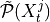 with the
iterative PC1 algorithm, implemented as
, estimate a
superset of parents 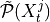 with the
iterative PC1 algorithm, implemented as run_pc_stable. The condition-selection step reduces the dimensionality and avoids conditioning on irrelevant variables.Momentary conditional independence (MCI)

here implemented as
run_mci. This step estimates the p-values and test statistic values for all links accounting for common drivers, indirect links, and autocorrelation.NOTE: MCI test statistic values define a particular measure of causal strength depending on the test statistic used. For example, ParCorr() results in normalized values between -1 and 1. However, if you are interested in quantifying causal effects, i.e., the effect of hypothetical interventions, you may better look at the causal effect estimation functionality of Tigramite.
PCMCI can be flexibly combined with any kind of conditional independence test statistic adapted to the kind of data (continuous or discrete) and its assumed dependency types. These are available in
tigramite.independence_tests.The main free parameters of PCMCI (in addition to free parameters of the conditional independence test statistic) are the maximum time delay
 (
(tau_max) and the significance threshold in the condition-selection step (
(
pc_alpha). The maximum time delay depends on the application and should be chosen according to the maximum causal time lag expected in the complex system. We recommend a rather large choice that includes peaks in theget_lagged_dependenciesfunction.
should not be seen as a significance test level in the
condition-selection step since the iterative hypothesis tests do not
allow for a precise assessment. rather takes the role
of a regularization parameter in model-selection techniques. If a
list of values is given or pc_alpha=None, is
optimized using model selection criteria implemented in the respective
tigramite.independence_tests.Further optional parameters are discussed in [1]_.
Examples
>>> import numpy >>> from tigramite.pcmci import PCMCI >>> from tigramite.independence_tests import ParCorr >>> import tigramite.data_processing as pp >>> from tigramite.toymodels import structural_causal_processes as toys >>> numpy.random.seed(7) >>> # Example process to play around with >>> # Each key refers to a variable and the incoming links are supplied >>> # as a list of format [((driver, -lag), coeff), ...] >>> links_coeffs = {0: [((0, -1), 0.8)], 1: [((1, -1), 0.8), ((0, -1), 0.5)], 2: [((2, -1), 0.8), ((1, -2), -0.6)]} >>> data, _ = toys.var_process(links_coeffs, T=1000) >>> # Data must be array of shape (time, variables) >>> print (data.shape) (1000, 3) >>> dataframe = pp.DataFrame(data) >>> cond_ind_test = ParCorr() >>> pcmci = PCMCI(dataframe=dataframe, cond_ind_test=cond_ind_test) >>> results = pcmci.run_pcmci(tau_max=2, pc_alpha=None) >>> pcmci.print_significant_links(p_matrix=results['p_matrix'], val_matrix=results['val_matrix'], alpha_level=0.05) ## Significant parents at alpha = 0.05:
- Variable 0 has 1 link(s):
(0 -1): pval = 0.00000 | val = 0.588
- Variable 1 has 2 link(s):
(1 -1): pval = 0.00000 | val = 0.606 (0 -1): pval = 0.00000 | val = 0.447
- Variable 2 has 2 link(s):
(2 -1): pval = 0.00000 | val = 0.618 (1 -2): pval = 0.00000 | val = -0.499
- Parameters:
selected_links (dict or None) – Deprecated, replaced by link_assumptions
link_assumptions (dict) – Dictionary of form {j:{(i, -tau): link_type, …}, …} specifying assumptions about links. This initializes the graph with entries graph[i,j,tau] = link_type. For example, graph[i,j,0] = ‘–>’ implies that a directed link from i to j at lag 0 must exist. Valid link types are ‘o-o’, ‘–>’, ‘<–’. In addition, the middle mark can be ‘?’ instead of ‘-’. Then ‘-?>’ implies that this link may not exist, but if it exists, its orientation is ‘–>’. Link assumptions need to be consistent, i.e., graph[i,j,0] = ‘–>’ requires graph[j,i,0] = ‘<–’ and acyclicity must hold. If a link does not appear in the dictionary, it is assumed absent. That is, if link_assumptions is not None, then all links have to be specified or the links are assumed absent.
tau_min (int, optional (default: 0)) – Minimum time lag to test. Note that zero-lags are undirected.
tau_max (int, optional (default: 1)) – Maximum time lag. Must be larger or equal to tau_min.
save_iterations (bool, optional (default: False)) – Whether to save iteration step results such as conditions used.
pc_alpha (float, optional (default: 0.05)) – Significance level in algorithm.
max_conds_dim (int, optional (default: None)) – Maximum number of conditions to test. If None is passed, this number is unrestricted.
max_combinations (int, optional (default: 1)) – Maximum number of combinations of conditions of current cardinality to test in PC1 step.
max_conds_py (int, optional (default: None)) – Maximum number of conditions of Y to use. If None is passed, this number is unrestricted.
max_conds_px (int, optional (default: None)) – Maximum number of conditions of Z to use. If None is passed, this number is unrestricted.
alpha_level (float, optional (default: 0.05)) – Significance level at which the p_matrix is thresholded to get graph.
fdr_method (str, optional (default: 'fdr_bh')) – Correction method, currently implemented is Benjamini-Hochberg False Discovery Rate method.
- Returns:
graph (array of shape [N, N, tau_max+1]) – Causal graph, see description above for interpretation.
val_matrix (array of shape [N, N, tau_max+1]) – Estimated matrix of test statistic values.
p_matrix (array of shape [N, N, tau_max+1]) – Estimated matrix of p-values, optionally adjusted if fdr_method is not ‘none’.
conf_matrix (array of shape [N, N, tau_max+1,2]) – Estimated matrix of confidence intervals of test statistic values. Only computed if set in cond_ind_test, where also the percentiles are set.
- run_pcmciplus(selected_links=None, link_assumptions=None, tau_min=0, tau_max=1, pc_alpha=0.01, contemp_collider_rule='majority', conflict_resolution=True, reset_lagged_links=False, max_conds_dim=None, max_combinations=1, max_conds_py=None, max_conds_px=None, max_conds_px_lagged=None, fdr_method='none')[source]¶
Runs PCMCIplus time-lagged and contemporaneous causal discovery for time series.
Method described in [5]: http://www.auai.org/~w-auai/uai2020/proceedings/579_main_paper.pdf
[5] J. Runge, Discovering contemporaneous and lagged causal relations in autocorrelated nonlinear time series datasets http://www.auai.org/~w-auai/uai2020/proceedings/579_main_paper.pdf
Notes
The PCMCIplus causal discovery method is described in [5], where also analytical and numerical results are presented. In contrast to PCMCI, PCMCIplus can identify the full, lagged and contemporaneous, causal graph (up to the Markov equivalence class for contemporaneous links) under the standard assumptions of Causal Sufficiency, Faithfulness and the Markov condition.
PCMCIplus estimates time-lagged and contemporaneous causal links by a four-step procedure:
1. Condition-selection (same as for PCMCI): For each variable
, estimate a superset of lagged parents  with the iterative PC1 algorithm,
implemented as
with the iterative PC1 algorithm,
implemented as run_pc_stable. The condition-selection step reduces the dimensionality and avoids conditioning on irrelevant variables.2. PC skeleton phase with contemporaneous conditions and Momentary conditional independence (MCI) tests: Iterate through subsets
 of contemporaneous adjacencies and conduct MCI
conditional independence tests:
of contemporaneous adjacencies and conduct MCI
conditional independence tests:
here implemented as
run_pcalg. This step estimates the p-values and test statistic values for all lagged and contemporaneous adjacencies accounting for common drivers, indirect links, and autocorrelation.3. PC collider orientation phase: Orient contemporaneous collider motifs based on unshielded triples. Optionally apply conservative or majority rule (also based on MCI tests).
4. PC rule orientation phase: Orient remaining contemporaneous links based on PC rules.
In contrast to PCMCI, the relevant output of PCMCIplus is the array
graph. Its string entries are interpreted as follows:graph[i,j,tau]=-->for denotes a directed, lagged
causal link from
denotes a directed, lagged
causal link from  to at lag
to at lag 
graph[i,j,0]=-->(andgraph[j,i,0]=<--) denotes a directed, contemporaneous causal link from to graph[i,j,0]=o-o(andgraph[j,i,0]=o-o) denotes an unoriented, contemporaneous adjacency between and indicating
that the collider and orientation rules could not be applied (Markov
equivalence)graph[i,j,0]=x-xand (graph[j,i,0]=x-x) denotes a conflicting, contemporaneous adjacency between and indicating
that the directionality is undecided due to conflicting orientation
rules
Importantly,
p_matrixandval_matrixfor PCMCIplus quantify the uncertainty and strength, respectively, only for the adjacencies, but not for the directionality of contemporaneous links. Note that lagged links are always oriented due to time order.PCMCIplus can be flexibly combined with any kind of conditional independence test statistic adapted to the kind of data (continuous or discrete) and its assumed dependency types. These are available in
tigramite.independence_tests.The main free parameters of PCMCIplus (in addition to free parameters of the conditional independence tests) are the maximum time delay
(tau_max) and the significance threshold ( pc_alpha).If a list or None is passed for
pc_alpha, the significance level is optimized for every graph across the givenpc_alphavalues using the score computed incond_ind_test.get_model_selection_criterion(). Since PCMCIplus outputs not a DAG, but an equivalence class of DAGs, first one member of this class is computed and then the score is computed as the average over all models fits for each variable in[0, ..., N]for that member. The score is the same for all members of the class.The maximum time delay depends on the application and should be chosen according to the maximum causal time lag expected in the complex system. We recommend a rather large choice that includes peaks in the
get_lagged_dependenciesfunction. Another important parameter iscontemp_collider_rule. Only if set tomajorityorconservative'' and together with ``conflict_resolution=True, PCMCIplus is fully order independent meaning that the order of the N variables in the dataframe does not matter. Last, the default optionreset_lagged_links=Falserestricts the detection of lagged causal links in Step 2 to the significant adjacencies found in Step 1, given by . For
. For
reset_lagged_links=True, all lagged links are considered again, which improves detection power for lagged links, but also leads to larger runtimes.Further optional parameters are discussed in [5].
- Parameters:
selected_links (dict or None) – Deprecated, replaced by link_assumptions
link_assumptions (dict) – Dictionary of form {j:{(i, -tau): link_type, …}, …} specifying assumptions about links. This initializes the graph with entries graph[i,j,tau] = link_type. For example, graph[i,j,0] = ‘–>’ implies that a directed link from i to j at lag 0 must exist. Valid link types are ‘o-o’, ‘–>’, ‘<–’. In addition, the middle mark can be ‘?’ instead of ‘-’. Then ‘-?>’ implies that this link may not exist, but if it exists, its orientation is ‘–>’. Link assumptions need to be consistent, i.e., graph[i,j,0] = ‘–>’ requires graph[j,i,0] = ‘<–’ and acyclicity must hold. If a link does not appear in the dictionary, it is assumed absent. That is, if link_assumptions is not None, then all links have to be specified or the links are assumed absent.
tau_min (int, optional (default: 0)) – Minimum time lag to test.
tau_max (int, optional (default: 1)) – Maximum time lag. Must be larger or equal to tau_min.
pc_alpha (float or list of floats, default: 0.01) – Significance level in algorithm. If a list or None is passed, the pc_alpha level is optimized for every graph across the given pc_alpha values ([0.001, 0.005, 0.01, 0.025, 0.05] for None) using the score computed in cond_ind_test.get_model_selection_criterion().
contemp_collider_rule ({'majority', 'conservative', 'none'}) – Rule for collider phase to use. See the paper for details. Only ‘majority’ and ‘conservative’ lead to an order-independent algorithm.
conflict_resolution (bool, optional (default: True)) – Whether to mark conflicts in orientation rules. Only for True this leads to an order-independent algorithm.
reset_lagged_links (bool, optional (default: False)) – Restricts the detection of lagged causal links in Step 2 to the significant adjacencies found in the PC1 algorithm in Step 1. For True, all lagged links are considered again, which improves detection power for lagged links, but also leads to larger runtimes.
max_conds_dim (int, optional (default: None)) – Maximum number of conditions to test. If None is passed, this number is unrestricted.
max_combinations (int, optional (default: 1)) – Maximum number of combinations of conditions of current cardinality to test in PC1 step.
max_conds_py (int, optional (default: None)) – Maximum number of lagged conditions of Y to use in MCI tests. If None is passed, this number is unrestricted.
max_conds_px (int, optional (default: None)) – Maximum number of lagged conditions of X to use in MCI tests. If None is passed, this number is unrestricted.
max_conds_px_lagged (int, optional (default: None)) – Maximum number of lagged conditions of X when X is lagged in MCI tests. If None is passed, this number is equal to max_conds_px.
fdr_method (str, optional (default: 'none')) – Correction method, default is Benjamini-Hochberg False Discovery Rate method.
- Returns:
graph (array of shape [N, N, tau_max+1]) – Resulting causal graph, see description above for interpretation.
val_matrix (array of shape [N, N, tau_max+1]) – Estimated matrix of test statistic values regarding adjacencies.
p_matrix (array of shape [N, N, tau_max+1]) – Estimated matrix of p-values regarding adjacencies.
sepsets (dictionary) – Separating sets. See paper for details.
ambiguous_triples (list) – List of ambiguous triples, only relevant for ‘majority’ and ‘conservative’ rules, see paper for details.
tigramite.lpcmci: LPCMCI¶
- class tigramite.lpcmci.LPCMCI(dataframe, cond_ind_test, verbosity=0)[source]¶
LPCMCI is an algorithm for causal discovery in large-scale times series that allows for latent confounders and learns lag-specific causal relationships. The algorithm is introduced and explained in:
[1] Gerhardus, A. & Runge, J. High-recall causal discovery for autocorrelated time series with latent confounders. Advances in Neural Information Processing Systems, 2020, 33. https://proceedings.neurips.cc/paper/2020/hash/94e70705efae423efda1088614128d0b-Abstract.html
NOTE: This method is still EXPERIMENTAL since the default settings of hyperparameters are still being fine-tuned. We actually invite feedback on which work best in applications and numerical experiments. The main function, which applies the algorithm, is ‘run_lpcmci’.
Parameters passed to the constructor:
dataframe: Tigramite dataframe object that contains the the time series dataset bold{X}
cond_ind_test: A conditional independence test object that specifies which conditional independence test CI is to be used
verbosity: Controls the verbose output self.run_lpcmci() and the function it calls.
Parameters passed to self.run_lpcmci(): Note: The default values are still being tuned and some parameters might be removed in the future.
- link_assumptions: dict or None
Two-level nested dictionary such that link_assumptions[j][(i, lag_i)], where 0 <= j, i <= N-1 (with N the number of component time series) and -tau_max <= lag_i <= -tau_min, is a string which specifies background knowledge about the link from X^i_{t+lag_i} to X^j_t. These are the possibilities for this string and the corresponding claim:
‘-?>’ : X^i_{t+lag_i} is an ancestor of X^j_t. ‘–>’ : X^i_{t+lag_i} is an ancestor of X^j_t, and there is a link between X^i_{t+lag_i} and X^j_t ‘<?-’ : Only allowed for lag_i = 0. X^j_t is an ancestor of X^i_t. ‘<–’ : Only allowed for lag_i = 0. X^j_t is an ancestor of X^i_t, and there is a link between X^i_t and X^j_t ‘<?>’ : Neither X^i_{t+lag_i} is an ancestor of X^j_t nor the other way around ‘<->’ : Neither X^i_{t+lag_i} is an ancestor of X^j_t nor the other way around, and there is a link between X^i_{t+lag_i} and X^j_t ‘o?>’ : X^j_t is not an ancestor of X^i_{t+lag_i} (for lag_i < 0 this background knowledge is (for the default settings of self.run_lpcmci()) imposed automatically) ‘o->’ : X^j_t is not an ancestor of X^i_{t+lag_i}, and there is a link between X^i_{t+lag_i} and X^j_t ‘<?o’ : Only allowed for lag_i = 0. X^i_t is not an ancestor of X^j_t ‘<-o’ : Only allowed for lag_i = 0. X^i_t is not an ancestor of X^j_t, and there is a link between X^i_t and X^j_t ‘o-o’ : Only allowed for lag_i = 0. There is a link between X^i_t and X^j_t ‘o?o’ : Only allowed for lag_i = 0. No claim is made ‘’ : There is no link between X^i_{t+lag_i} and X^j_t.
Another way to specify the absent link is if the form of the link between (i, lag_i) and (j, 0) is not specified by the dictionary, that is, if either link_assumptions[j] does not exist or link_assumptions[j] does exist but link_assumptions[j][(i, lag_i)] does not exist, then the link between (i, lag_i) and (j, 0) is assumed to be absent.
tau_min: The assumed minimum time lag, i.e., links with a lag smaller than tau_min are assumed to be absent.
tau_max: The maximum considered time lag, i.e., the algorithm learns a DPAG on a time window [t-taumax, t] with tau_max + 1 time steps. It is not assumed that in the underlying time series DAG there are no links with a lag larger than tau_max.
pc_alpha: The significance level of conditional independence tests
n_preliminary_iterations: Determines the number of iterations in the preliminary phase of LPCMCI, corresponding to the ‘k’ in LPCMCI(k) in [1].
max_cond_px: Consider a pair of variables (X^i_{t-tau}, X^j_t) with tau > 0. In Algorithm S2 in [1] (here this is self._run_ancestral_removal_phase()), the algorithm does not test for conditional independence given subsets of apds_t(X^i_{t-tau}, X^j_t, C (G)) of cardinality higher than max_cond_px. In Algorithm S3 in [1] (here this is self._run_non_ancestral_removal_phase()), the algorithm does not test for conditional independence given subsets of napds_t (X^i_{t-tau}, X^j_t, C(G)) of cardinality higher than max_cond_px.
max_p_global: Restricts all conditional independence tests to conditioning sets with cardinality smaller or equal to max_p_global
max_p_non_ancestral: Restricts all conditional independence tests in the second removal phase (here this is self._run_dsep_removal_phase()) to conditioning sets with cardinality smaller or equal to max_p_global
max_q_global: For each ordered pair (X^i_{t-tau}, X^j_t) of adjacent variables and for each cardinality of the conditioning sets test at most max_q_global many conditioning sets (when summing over all tested cardinalities more than max_q_global tests may be made)
max_pds_set: In Algorithm S3 (here this is self._run_non_ancestral_removal_phase()), the algorithm tests for conditional independence given subsets of the relevant napds_t sets. If for a given link the set napds_t(X^j_t, X^i_{t-tau}, C(G)) has more than max_pds_set many elements (or, if the link is also tested in the opposite directed, if napds_t(X^i_{t-tau}, X^j_t, C(G)) has more than max_pds_set elements), this link is not tested.
prelim_with_collider_rules: If True: As in pseudocode If False: Line 22 of Algorithm S2 in [1] is replaced by line 18 of Algorithm S2 when Algorithm S2 is called from the preliminary phase (not in the last application of Algorithm S2 directly before Algorithm S3 is applied)
parents_of_lagged: If True: As in pseudocode If False: The default conditioning set is pa(X^j_t, C(G)) rather than pa({X^j_t, X^i_ {t-tau}, C(G)) for tau > 0
prelim_only: If True, stop after the preliminary phase. Can be used for detailed performance analysis
break_once_separated: If True: As in pseudocode If False: The break commands are removed from Algorithms S2 and S3 in in [1]
no_non_ancestral_phase: If True, do not execute Algorithm S3. Can be used for detailed performance analysis
use_a_pds_t_for_majority: If True: As in pseudocode If False: The search for separating sets instructed by the majority rule is made given subsets adj(X^j_t, C(G)) rather than subsets of apds_t(X^j_t, X^i_ {t-tau}, C(G))
- orient_contemp:
If orient_contemp == 1: As in pseudocode of Algorithm S2 in [1] If orient_contemp == 2: Also orient contemporaneous links in line 18 of Algorithm S2 If orient_comtemp == 0: Also not orient contemporaneous links in line 22 of Algorithm S2
- update_middle_marks:
If True: As in pseudoce of Algorithms S2 and S3 in [1] If False: The MMR rule is not applied
- prelim_rules:
If prelim_rules == 1: As in pseudocode of Algorithm S2 in [1] If prelim_rules == 0: Exclude rules R9^prime and R10^prime from line 18 in Algorithm S2
fix_all_edges_before_final_orientation: When one of max_p_global, max_p_non_ancestral, max_q_global or max_pds_set is not np.inf, the algorithm may terminate although not all middle marks are empty. All orientation rules are nevertheless sound, since the rules always check for the appropriate middle marks. If fix_all_edges_before_final_orientation is True, all middle marks are set to the empty middle mark by force, followed by another application of the rules.
auto_first: If True: As in pseudcode of Algorithms S2 and S3 in [1] If False: Autodependency links are not prioritized even before contemporaneous links
- remember_only_parents:
If True: As in pseudocode of Algorithm 1 If False: If X^i_{t-tau} has been marked as ancestor of X^j_t at any point of a preliminary iteration but the link between X^i_{t-tau} and X^j_t was removed later, the link is nevertheless initialized with a tail at X^i_{t-tau} in the re-initialization
- no_apr:
If no_apr == 0: As in pseudcode of Algorithms S2 and S3 in [1] If no_apr == 1: The APR is not applied by Algorithm S2, except in line 22 of its last call directly before the call of Algorithm S3 If no_apr == 2: The APR is never applied
- Return value of self.run_lpcmci():
- grapharray of shape (N, N, tau_max+1)
Resulting DPAG, representing the learned causal relationships.
- val_matrixarray of shape (N, N, tau_max+1)
Estimated matrix of test statistic values regarding adjacencies.
- p_matrixarray of shape [N, N, tau_max+1]
Estimated matrix of p-values regarding adjacencies.
A note on middle marks: For convenience (to have strings of the same lengths) we here internally denote the empty middle mark by ‘-’. For post-processing purposes all middle marks are set to the empty middle mark (here ‘-‘).
A note on wildcards: The middle mark wildcard ast and the edge mark wildcard are here represented as ‘*’’, the edge mark wildcard star as ‘+’.
- run_lpcmci(link_assumptions=None, tau_min=0, tau_max=1, pc_alpha=0.05, n_preliminary_iterations=1, max_cond_px=0, max_p_global=inf, max_p_non_ancestral=inf, max_q_global=inf, max_pds_set=inf, prelim_with_collider_rules=True, parents_of_lagged=True, prelim_only=False, break_once_separated=True, no_non_ancestral_phase=False, use_a_pds_t_for_majority=True, orient_contemp=1, update_middle_marks=True, prelim_rules=1, fix_all_edges_before_final_orientation=True, auto_first=True, remember_only_parents=True, no_apr=0)[source]¶
Run LPCMCI on the dataset and with the conditional independence test passed to the class constructor and with the options passed to this function.
tigramite.rpcmci: RPCMCI¶
- class tigramite.rpcmci.RPCMCI(dataframe, cond_ind_test=None, prediction_model=None, seed=None, verbosity=- 1)[source]¶
RPCMCI class for extracting causal regimes and the associated graphs from time series data.
Notes
The Regime-PCMCI causal discovery method is described in:
Elena Saggioro, Jana de Wiljes, Marlene Kretschmer, Jakob Runge; Reconstructing regime-dependent causal relationships from observational time series. Chaos 1 November 2020; 30 (11): 113115. https://doi.org/10.1063/5.0020538
The method iterates between two phases –a regime learning phase (optimization-based) and a causal discovery phase (PCMCI)– to identify regime dependent causal relationships. A persistent discrete regime variable is assumed that leads to a finite number of regimes within which stationarity can be assumed.
- Parameters:
dataframe (data object) – This is the Tigramite dataframe object. It has the attributes dataframe.values yielding a numpy array of shape ( observations T, variables N). For RPCMCI the mask will be ignored. You may use the missing_flag to indicate missing values.
cond_ind_test (conditional independence test object) – This can be ParCorr or other classes from
tigramite.independence_testsor an external test passed as a callable. This test can be based on the class tigramite.independence_tests.CondIndTest.prediction_model (sklearn model object) – For example, sklearn.linear_model.LinearRegression() for a linear regression model. This should be consistent with cond_ind_test, ie, use ParCorr() with a linear model and, eg, GPDC() with a GaussianProcessRegressor model, or CMIknn with NearestNeighbors model.
seed (int) – Random seed for annealing step.
verbosity (int, optional (default: -1)) – Verbose levels -1, 0, 1, …
- run_rpcmci(num_regimes, max_transitions, switch_thres=0.05, num_iterations=20, max_anneal=10, tau_min=1, tau_max=1, pc_alpha=0.2, alpha_level=0.01, n_jobs=- 1)[source]¶
- Run RPCMCI method for extracting causal regimes and the associated graphs from
time series data.
- Parameters:
num_regimes (int) – Number of assumed regimes.
max_transitions (int) – Maximum number of transitions within a single regime (persistency parameter).
switch_thres (float) – Switch threshold.
num_iterations (int) – Optimization iterations.
max_anneal (int) – Maximum annealing runs.
tau_min (int, optional (default: 0)) – Minimum time lag to test.
tau_max (int, optional (default: 1)) – Maximum time lag. Must be larger or equal to tau_min.
pc_alpha (float, optional (default: 0.2)) – Significance level in PCMCI.
alpha_level (float, optional (default: 0.05)) – Significance level in PCMCI at which the p_matrix is thresholded to get graph.
n_jobs (int, optional (default: -1)) – Number of CPUs to use in joblib parallization. Default n_jobs=-1 uses all available.
- Returns:
regimes (array of shape (n_regimes, T)) – One-hot encoded regime variable.
causal_results (dictionary) – Contains result of run_pcmci() after convergence.
diff_g_f (tuple) – Difference between two consecutive optimizations for all annealings and the optimal one with minimum objective value (see paper).
error_free_annealings (int) – Number of annealings that converged without error.
tigramite.jpcmciplus: JPCMCIplus¶
- class tigramite.jpcmciplus.JPCMCIplus(node_classification, **kwargs)[source]¶
J-PCMCIplus causal discovery for time series datasets from multiple contexts.
This class is based on the PCMCI framework as described in [i]. JPCMCIplus enables causal discovery for time series data from different contexts, i.e. datasets, where some of the variables describing the context might be unobserved. The method is described in detail in [ii]. See the tutorial for guidance in applying the method.
References
[i]J. Runge, P. Nowack, M. Kretschmer, S. Flaxman, D. Sejdinovic, Detecting and quantifying causal associations in large nonlinear time series datasets. Sci. Adv. 5, eaau4996 (2019) https://advances.sciencemag.org/content/5/11/eaau4996
[ii]W. Günther, U. Ninad, J. Runge, Causal discovery for time series from multiple datasets with latent contexts. UAI 2023
- Parameters:
node_classification (dictionary) – Classification of nodes into system, context, or dummy nodes. Keys of the dictionary are from {0, …, N-1} where N is the number of nodes. Options for the values are “system”, “time_context”, “space_context”, “time_dummy”, or “space_dummy”.
- all_parents¶
Dictionary of form {0:[(0, -1), (3, -2), …], 1:[], …} containing the conditioning-parents estimated with PC algorithm.
- Type:
dictionary
- val_min¶
Dictionary of form val_min[j][(i, -tau)] = float containing the minimum test statistic value for each link estimated in the PC algorithm.
- Type:
dictionary
- pval_max¶
Dictionary of form pval_max[j][(i, -tau)] = float containing the maximum p-value for each link estimated in the PC algorithm.
- Type:
dictionary
- iterations¶
Dictionary containing further information on algorithm steps.
- Type:
dictionary
- N¶
Number of variables.
- Type:
int
- T¶
Time series sample length of dataset(s).
- Type:
dict
- dummy_parents¶
Dictionary of form {0:[(0, -1), (3, -2), …], 1:[], …} containing the dependence of the system nodes on the dummy nodes.
- Type:
dictionary or None
- observed_context_parents¶
Dictionary of form {0:[(0, -1), (3, -2), …], 1:[], …} containing the dependence of the system nodes on the observed context nodes.
- Type:
dictionary or None
- dummy_ci_test¶
Conditional independence test used to test dependence between system nodes and dummy nodes. Currently, ParCorr is used with one-hot encoded dummies.
- Type:
conditional independence test object
- mode¶
- Type:
“system_search” or “context_search” or “dummy_search” (default: “system_search”)
- time_context_nodes¶
List with entries from {0, …, N-1} where N is the number of nodes. This is the list of the temporal context nodes which are assumed to be constant over the different datasets.
- Type:
list
- space_context_nodes¶
List with entries from {0, …, N-1} where N is the number of nodes. This is the list of the spatial context nodes which are assumed to be constant over time.
- time_dummy¶
Node corresponding to the temporal dummy variable.
- Type:
int or None (default: None)
- space_dummy¶
Node corresponding to the spatial dummy variable.
- Type:
int or None (default: None)
- system_nodes¶
List with entries from {0, …, N-1} where N is the number of nodes. This is the list of the system nodes.
- Type:
list
- add_found_context_link_assumptions(link_assumptions, tau_max)[source]¶
Helper function to add discovered links between system and observed context nodes to link_assumptions.
- assume_exogenous_context(link_assumptions, observed_context_nodes)[source]¶
Helper function to amend the link_assumptions to ensure that all context-system links are oriented such that the context variable is the parent.
- clean_link_assumptions(link_assumptions, tau_max)[source]¶
Helper function to amend the link_assumptions in the following ways * remove any links where dummy is the child * remove any lagged links to dummy, and space_context (not to observed time context) * and system - context links where context is the child * and any links between spatial and temporal context
- clean_system_link_assumptions(link_assumptions, tau_max)[source]¶
Helper function to remove any links to dummy and observed context nodes from link_assumptions. Add discovered links to contextual parents (from steps 1 and 2) to the link_assumptions.
- discover_dummy_system_links(link_assumptions, context_system_results, lagged_parents, tau_min=0, tau_max=1, pc_alpha=0.01, reset_lagged_links=False, max_conds_dim=None, max_conds_py=None, max_conds_px=None, max_conds_px_lagged=None, fdr_method='none')[source]¶
Step 2 of JPCMCIplus, i.e. discovery of links between observed (time and space) dummy nodes and system nodes through an application of the skeleton phase of PCMCIplus to this subset of nodes (dummy nodes and system nodes). See run_jpcmciplus for a description of the parameters.
- Parameters:
context_system_results (dictionary) – Output of discover_lagged_and_context_system_links, i.e. lagged and context parents together with the corresponding estimated test statistic values regarding adjacencies.
lagged_parents (dictionary) – Dictionary of form {0:[(0, -1), (3, -2), …], 1:[], …} containing the conditioning-parents estimated with PC algorithm.
- Returns:
graph (array of shape [N, N, tau_max+1]) – Resulting causal graph, see description above for interpretation.
val_matrix (array of shape [N, N, tau_max+1]) – Estimated matrix of test statistic values regarding adjacencies.
p_matrix (array of shape [N, N, tau_max+1]) – Estimated matrix of p-values regarding adjacencies.
parents (dictionary) – Dictionary of form {0:[(0, -1), (3, -2), …], 1:[], …} containing the estimated dummy parents of the system nodes.
- discover_lagged_context_system_links(link_assumptions, tau_min=0, tau_max=1, pc_alpha=0.01, reset_lagged_links=False, max_conds_dim=None, max_combinations=1, max_conds_py=None, max_conds_px=None, max_conds_px_lagged=None, fdr_method='none')[source]¶
Step 1 of JPCMCIplus, i.e. discovery of links between observed context nodes and system nodes through an application of the skeleton phase of PCMCIplus to this subset of nodes (observed context nodes and system nodes). See run_jpcmciplus for a description of the parameters.
- Returns:
graph (array of shape [N, N, tau_max+1]) – Resulting causal graph, see description above for interpretation.
val_matrix (array of shape [N, N, tau_max+1]) – Estimated matrix of test statistic values regarding adjacencies.
p_matrix (array of shape [N, N, tau_max+1]) – Estimated matrix of p-values regarding adjacencies.
parents (dictionary) – Dictionary of form {0:[(0, -1), (3, -2), …], 1:[], …} containing the estimated context parents of the system nodes.
lagged_parents (dictionary) – Dictionary of form {0:[(0, -1), (3, -2), …], 1:[], …} containing the conditioning-parents estimated with PC algorithm.
- discover_system_system_links(link_assumptions, lagged_context_dummy_parents, tau_min=0, tau_max=1, pc_alpha=0.01, reset_lagged_links=False, max_conds_dim=None, max_conds_py=None, max_conds_px=None, max_conds_px_lagged=None, fdr_method='none')[source]¶
Step 4 of JPCMCIplus and orientation phase, i.e. discovery of links between system nodes given the knowledge about their context parents through an application of PCMCIplus to this subset of nodes (system nodes). See run_jpcmciplus for a description of the other parameters.
- Parameters:
lagged_context_dummy_parents (dictionary) – Dictionary containing lagged and (dummy and observed) context parents of the system nodes estimated during step 1 and step 2 of J-PCMCI+.
- Returns:
graph (array of shape [N, N, tau_max+1]) – Resulting causal graph, see description above for interpretation.
val_matrix (array of shape [N, N, tau_max+1]) – Estimated matrix of test statistic values regarding adjacencies.
p_matrix (array of shape [N, N, tau_max+1]) – Estimated matrix of p-values regarding adjacencies.
sepset (dictionary) – Separating sets. See paper for details.
ambiguous_triples (list) – List of ambiguous triples, only relevant for ‘majority’ and ‘conservative’ rules, see paper for details.
- remove_dummy_link_assumptions(link_assumptions)[source]¶
Helper function to remove any links to dummy from link_assumptions.
- run_jpcmciplus(contemp_collider_rule='majority', link_assumptions=None, tau_min=0, tau_max=2, pc_alpha=0.01, conflict_resolution=True, reset_lagged_links=False, max_conds_dim=None, max_combinations=1, max_conds_py=None, max_conds_px=None, max_conds_px_lagged=None, fdr_method='none')[source]¶
Runs JPCMCIplus time-lagged and contemporaneous causal discovery for time series from multiple contexts.
Method described in: W. Günther, U. Ninad, J. Runge, Causal discovery for time series from multiple datasets with latent contexts. UAI 2023
Notes
The JPCMCIplus causal discovery method is described in [ii], where also analytical and numerical results are presented. JPCMCIplus can identify the joint causal graph over multiple datasets containing time series data from different contexts under the standard assumptions of Causal Sufficiency, Faithfulness and the Markov condition, as well as some background knowledge assumptions. JPCMCIplus estimates time-lagged and contemporaneous causal links from context to system variables and in between system variables by a four-step procedure:
1. Discovery of supersets of the lagged parents of the system and observed temporal context nodes by running the
 lagged phase on this subset of nodes to obtain
lagged phase on this subset of nodes to obtain  .
.2. Next, the MCI test is run on pairs of system and context nodes conditional on subsets of system and context, i.e. perform MCI tests for pairs
 ,
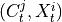, 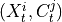 for all
,
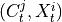, 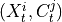 for all  ,
,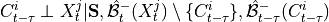
with 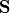 being a subset of the contemporaneous adjacencies 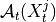 and
are the lagged adjacencies from step one. If 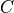 is a
spatial context variable, we only have to test the contemporaneous pairs
, for all .
If 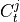 and 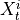 are conditionally independent, all lagged links between and
 are also removed for all .
are also removed for all .3. Perform MCI tests on all system-dummy pairs conditional on the superset of lagged links, the discovered contemporaneous context adjacencies, as well as on subsets of contemporaneous system links, i.e. test for 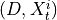,
 for all , i.e.
for all , i.e.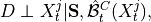
where
 and 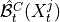
are the lagged and contextual adjacencies found in the previous step.
If
and 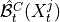
are the lagged and contextual adjacencies found in the previous step.
If  and 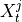 are found to be conditionally independence, links between and
are removed for all .
By assumption context node is the parent in all system-context links.
and 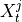 are found to be conditionally independence, links between and
are removed for all .
By assumption context node is the parent in all system-context links.4. Finally, we perform MCI tests on all system pairs conditional on discovered lagged, context and dummy adjacencies, as well as on subsets of contemporaneous system links and orientation phase. In more detail, we perform MCI test for pairs
 , 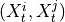 for all
, 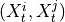 for all
 , i.e.
, i.e.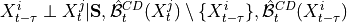
where
and  are the lagged, contextual, and dummy adjacencies found in the previous steps.
Finally, all remaining edges (without expert knowledge) are oriented using the PCMCI+ orientation phase while
making use of all triples involving one context or dummy variable and two system variables as in the non-time
series case.
are the lagged, contextual, and dummy adjacencies found in the previous steps.
Finally, all remaining edges (without expert knowledge) are oriented using the PCMCI+ orientation phase while
making use of all triples involving one context or dummy variable and two system variables as in the non-time
series case.JPCMCIplus can be flexibly combined with any kind of conditional independence test statistic adapted to the kind of data (continuous or discrete) and its assumed dependency types. These are available in
tigramite.independence_tests. See PCMCIplus for a description of the parameters of JPCMCIplus. Also, guidance on best practices for setting these parameters is given there.- Parameters:
link_assumptions (dict) – Dictionary of form {j:{(i, -tau): link_type, …}, …} specifying assumptions about links. This initializes the graph with entries graph[i,j,tau] = link_type. For example, graph[i,j,0] = ‘–>’ implies that a directed link from i to j at lag 0 must exist. Valid link types are ‘o-o’, ‘–>’, ‘<–’. In addition, the middle mark can be ‘?’ instead of ‘-’. Then ‘-?>’ implies that this link may not exist, but if it exists, its orientation is ‘–>’. Link assumptions need to be consistent, i.e., graph[i,j,0] = ‘–>’ requires graph[j,i,0] = ‘<–’ and acyclicity must hold. If a link does not appear in the dictionary, it is assumed absent. That is, if link_assumptions is not None, then all links have to be specified or the links are assumed absent.
tau_min (int, optional (default: 0)) – Minimum time lag to test.
tau_max (int, optional (default: 1)) – Maximum time lag. Must be larger or equal to tau_min.
pc_alpha (float or list of floats, default: 0.01) – Significance level in algorithm. If a list or None is passed, the pc_alpha level is optimized for every graph across the given pc_alpha values ([0.001, 0.005, 0.01, 0.025, 0.05] for None) using the score computed in cond_ind_test.get_model_selection_criterion().
contemp_collider_rule ({'majority', 'conservative', 'none'}) – Rule for collider phase to use. See the paper for details. Only ‘majority’ and ‘conservative’ lead to an order-independent algorithm.
conflict_resolution (bool, optional (default: True)) – Whether to mark conflicts in orientation rules. Only for True this leads to an order-independent algorithm.
reset_lagged_links (bool, optional (default: False)) – Restricts the detection of lagged causal links in Step 2 to the significant adjacencies found in the PC1 algorithm in Step 1. For True, all lagged links are considered again, which improves detection power for lagged links, but also leads to larger runtimes.
max_conds_dim (int, optional (default: None)) – Maximum number of conditions to test. If None is passed, this number is unrestricted.
max_combinations (int, optional (default: 1)) – Maximum number of combinations of conditions of current cardinality to test. Defaults to 1 for PC_1 algorithm. For original PC algorithm a larger number, such as 10, can be used.
max_conds_py (int, optional (default: None)) – Maximum number of lagged conditions of Y to use in MCI tests. If None is passed, this number is unrestricted.
max_conds_px (int, optional (default: None)) – Maximum number of lagged conditions of X to use in MCI tests. If None is passed, this number is unrestricted.
max_conds_px_lagged (int, optional (default: None)) – Maximum number of lagged conditions of X when X is lagged in MCI tests. If None is passed, this number is equal to max_conds_px.
fdr_method (str, optional (default: 'none')) – Correction method, default is Benjamini-Hochberg False Discovery Rate method.
- Returns:
graph (array of shape [N, N, tau_max+1]) – Resulting causal graph, see description above for interpretation.
val_matrix (array of shape [N, N, tau_max+1]) – Estimated matrix of test statistic values regarding adjacencies.
p_matrix (array of shape [N, N, tau_max+1]) – Estimated matrix of p-values regarding adjacencies.
sepset (dictionary) – Separating sets. See paper for details.
ambiguous_triples (list) – List of ambiguous triples, only relevant for ‘majority’ and ‘conservative’ rules, see paper for details.
tigramite.independence_tests: Conditional independence tests¶
Base class:
- class tigramite.independence_tests.independence_tests_base.CondIndTest(seed=42, mask_type=None, significance='analytic', fixed_thres=None, sig_samples=500, sig_blocklength=None, confidence=None, conf_lev=0.9, conf_samples=100, conf_blocklength=None, recycle_residuals=False, verbosity=0)[source]¶
Base class of conditional independence tests.
Provides useful general functions for different independence tests such as shuffle significance testing and bootstrap confidence estimation. Also handles masked samples. Other test classes can inherit from this class.
- Parameters:
seed (int, optional(default = 42)) – Seed for RandomState (default_rng)
mask_type (str, optional (default = None)) – Must be in {None, ‘y’,’x’,’z’,’xy’,’xz’,’yz’,’xyz’} Masking mode: Indicators for which variables in the dependence measure I(X; Y | Z) the samples should be masked. If None, the mask is not used. Explained in tutorial on masking and missing values.
significance (str, optional (default: 'analytic')) – Type of significance test to use. In this package ‘analytic’, ‘fixed_thres’ and ‘shuffle_test’ are available.
fixed_thres (float, optional (default: 0.1)) – Deprecated.
sig_samples (int, optional (default: 500)) – Number of samples for shuffle significance test.
sig_blocklength (int, optional (default: None)) – Block length for block-shuffle significance test. If None, the block length is determined from the decay of the autocovariance as explained in [1]_.
confidence (str, optional (default: None)) – Specify type of confidence estimation. If False, numpy.nan is returned. ‘bootstrap’ can be used with any test, for ParCorr also ‘analytic’ is implemented.
conf_lev (float, optional (default: 0.9)) – Two-sided confidence interval.
conf_samples (int, optional (default: 100)) – Number of samples for bootstrap.
conf_blocklength (int, optional (default: None)) – Block length for block-bootstrap. If None, the block length is determined from the decay of the autocovariance as explained in [1]_.
recycle_residuals (bool, optional (default: False)) – Specifies whether residuals should be stored. This may be faster, but can cost considerable memory.
verbosity (int, optional (default: 0)) – Level of verbosity.
- get_analytic_confidence(value, df, conf_lev)[source]¶
Base class assumption that this is not implemented. Concrete classes should override when possible.
- get_analytic_significance(value, T, dim)[source]¶
Base class assumption that this is not implemented. Concrete classes should override when possible.
- get_bootstrap_confidence(array, xyz, dependence_measure=None, conf_samples=100, conf_blocklength=None, conf_lev=0.95, data_type=None, verbosity=0)[source]¶
Perform bootstrap confidence interval estimation.
With conf_blocklength > 1 or None a block-bootstrap is performed.
- arrayarray-like
data array with X, Y, Z in rows and observations in columns
- xyzarray of ints
XYZ identifier array of shape (dim,).
- dependence_measurefunction (default = self.get_dependence_measure)
Dependence measure function must be of form dependence_measure(array, xyz) and return a numeric value
- conf_levfloat, optional (default: 0.9)
Two-sided confidence interval.
- conf_samplesint, optional (default: 100)
Number of samples for bootstrap.
- conf_blocklengthint, optional (default: None)
Block length for block-bootstrap. If None, the block length is determined from the decay of the autocovariance as explained in [1]_.
- data_typearray-like
Binary data array of same shape as array which describes whether individual samples in a variable (or all samples) are continuous or discrete: 0s for continuous variables and 1s for discrete variables.
- verbosityint, optional (default: 0)
Level of verbosity.
- (conf_lower, conf_upper)Tuple of floats
Upper and lower confidence bound of confidence interval.
- get_confidence(X, Y, Z=None, tau_max=0, data_type=None)[source]¶
Perform confidence interval estimation.
Calls the dependence measure and confidence test functions. The child classes can specify a function get_dependence_measure and get_analytic_confidence or get_bootstrap_confidence. If confidence is False, (numpy.nan, numpy.nan) is returned.
- X, Y, Zlist of tuples
X,Y,Z are of the form [(var, -tau)], where var specifies the variable index and tau the time lag.
- tau_maxint, optional (default: 0)
Maximum time lag. This may be used to make sure that estimates for different lags in X, Z, all have the same sample size.
- data_typearray-like
Binary data array of same shape as array which describes whether individual samples in a variable (or all samples) are continuous or discrete: 0s for continuous variables and 1s for discrete variables.
- (conf_lower, conf_upper)Tuple of floats
Upper and lower confidence bound of confidence interval.
- abstract get_dependence_measure(array, xyz)[source]¶
Abstract function that all concrete classes must instantiate.
- get_fixed_thres_significance(value, fixed_thres)[source]¶
DEPRECATED Returns signficance for thresholding test.
- get_measure(X, Y, Z=None, tau_max=0, data_type=None)[source]¶
Estimate dependence measure.
Calls the dependence measure function. The child classes must specify a function get_dependence_measure.
- X, Y [, Z]list of tuples
X,Y,Z are of the form [(var, -tau)], where var specifies the variable index and tau the time lag.
- tau_maxint, optional (default: 0)
Maximum time lag. This may be used to make sure that estimates for different lags in X, Z, all have the same sample size.
- data_typearray-like
Binary data array of same shape as array which describes whether individual samples in a variable (or all samples) are continuous or discrete: 0s for continuous variables and 1s for discrete variables.
- valfloat
The test statistic value.
- get_model_selection_criterion(j, parents, tau_max=0)[source]¶
Base class assumption that this is not implemented. Concrete classes should override when possible.
- get_shuffle_significance(array, xyz, value, data_type=None, return_null_dist=False)[source]¶
Base class assumption that this is not implemented. Concrete classes should override when possible.
- abstract property measure¶
Abstract property to store the type of independence test.
- run_test(X, Y, Z=None, tau_max=0, cut_off='2xtau_max', alpha_or_thres=None)[source]¶
Perform conditional independence test.
Calls the dependence measure and significance test functions. The child classes must specify a function get_dependence_measure and either or both functions get_analytic_significance and get_shuffle_significance. If recycle_residuals is True, also _get_single_residuals must be available.
- Parameters:
X (list of tuples) – X,Y,Z are of the form [(var, -tau)], where var specifies the variable index and tau the time lag.
Y (list of tuples) – X,Y,Z are of the form [(var, -tau)], where var specifies the variable index and tau the time lag.
Z (list of tuples) – X,Y,Z are of the form [(var, -tau)], where var specifies the variable index and tau the time lag.
tau_max (int, optional (default: 0)) – Maximum time lag. This may be used to make sure that estimates for different lags in X, Z, all have the same sample size.
cut_off ({'2xtau_max', 'max_lag', 'max_lag_or_tau_max'}) – How many samples to cutoff at the beginning. The default is ‘2xtau_max’, which guarantees that MCI tests are all conducted on the same samples. For modeling, ‘max_lag_or_tau_max’ can be used, which uses the maximum of tau_max and the conditions, which is useful to compare multiple models on the same sample. Last, ‘max_lag’ uses as much samples as possible.
alpha_or_thres (float (optional)) – Significance level (if significance=’analytic’ or ‘shuffle_test’) or threshold (if significance=’fixed_thres’). If given, run_test returns the test decision dependent=True/False.
- Returns:
val, pval, [dependent] – The test statistic value and the p-value. If alpha_or_thres is given, run_test also returns the test decision dependent=True/False.
- Return type:
Tuple of floats and bool
- run_test_raw(x, y, z=None, x_type=None, y_type=None, z_type=None, alpha_or_thres=None)[source]¶
Perform conditional independence test directly on input arrays x, y, z.
Calls the dependence measure and signficicance test functions. The child classes must specify a function get_dependence_measure and either or both functions get_analytic_significance and get_shuffle_significance.
- Parameters:
x (arrays) – x,y,z are of the form (samples, dimension).
y (arrays) – x,y,z are of the form (samples, dimension).
z (arrays) – x,y,z are of the form (samples, dimension).
x_type (array-like) – data arrays of same shape as x, y and z respectively, which describes whether variables are continuous or discrete: 0s for continuous variables and 1s for discrete variables
y_type (array-like) – data arrays of same shape as x, y and z respectively, which describes whether variables are continuous or discrete: 0s for continuous variables and 1s for discrete variables
z_type (array-like) – data arrays of same shape as x, y and z respectively, which describes whether variables are continuous or discrete: 0s for continuous variables and 1s for discrete variables
alpha_or_thres (float (optional)) – Significance level (if significance=’analytic’ or ‘shuffle_test’) or threshold (if significance=’fixed_thres’). If given, run_test returns the test decision dependent=True/False.
- Returns:
val, pval, [dependent] – The test statistic value and the p-value. If alpha_or_thres is given, run_test also returns the test decision dependent=True/False.
- Return type:
Tuple of floats and bool
- set_dataframe(dataframe)[source]¶
Initialize and check the dataframe.
- Parameters:
dataframe (data object) – Set tigramite dataframe object. It must have the attributes dataframe.values yielding a numpy array of shape (observations T, variables N) and optionally a mask of the same shape and a missing values flag.
- set_mask_type(mask_type)[source]¶
Setter for mask type to ensure that this option does not clash with recycle_residuals.
- Parameters:
mask_type (str) – Must be in {None, ‘y’,’x’,’z’,’xy’,’xz’,’yz’,’xyz’} Masking mode: Indicators for which variables in the dependence measure I(X; Y | Z) the samples should be masked. If None, the mask is not used. Explained in tutorial on masking and missing values.
Test statistics:
- class tigramite.independence_tests.parcorr.ParCorr(**kwargs)[source]¶
Partial correlation test.
Partial correlation is estimated through linear ordinary least squares (OLS) regression and a test for non-zero linear Pearson correlation on the residuals.
Notes
To test
 , first
, first  is regressed out from
is regressed out from
 and
and  assuming the model
assuming the model
using OLS regression. Then the dependency of the residuals is tested with the Pearson correlation test.

For the
significance='analytic'Student’s-t distribution with degrees of freedom is implemented.
degrees of freedom is implemented.Assumes one-dimensional X, Y.Use ParCorrMult for multivariate X, Y.
- Parameters:
**kwargs – Arguments passed on to Parent class CondIndTest.
- get_analytic_confidence(value, df, conf_lev)[source]¶
Returns analytic confidence interval for correlation coefficient.
Based on Student’s t-distribution.
- Parameters:
value (float) – Test statistic value.
df (int) – degrees of freedom of the test
conf_lev (float) – Confidence interval, eg, 0.9
- Returns:
(conf_lower, conf_upper) – Upper and lower confidence bound of confidence interval.
- Return type:
Tuple of floats
- get_analytic_significance(value, T, dim, xyz)[source]¶
Returns analytic p-value from Student’s t-test for the Pearson correlation coefficient.
Assumes two-sided correlation. If the degrees of freedom are less than 1, numpy.nan is returned.
- Parameters:
value (float) – Test statistic value.
T (int) – Sample length
dim (int) – Dimensionality, ie, number of features.
xyz (array of ints) – XYZ identifier array of shape (dim,).
- Returns:
pval – P-value.
- Return type:
float or numpy.nan
- get_dependence_measure(array, xyz)[source]¶
Return partial correlation.
Estimated as the Pearson correlation of the residuals of a linear OLS regression.
- Parameters:
array (array-like) – data array with X, Y, Z in rows and observations in columns
xyz (array of ints) – XYZ identifier array of shape (dim,).
- Returns:
val – Partial correlation coefficient.
- Return type:
float
- get_model_selection_criterion(j, parents, tau_max=0, criterion='aic')[source]¶
Returns model selection criterion modulo constants.
Fits a linear model of the parents to variable j and returns the score. Here used to determine optimal hyperparameters in PCMCI, in particular the pc_alpha value.
- Parameters:
j (int) – Index of target variable in data array.
parents (list) – List of form [(0, -1), (3, -2), …] containing parents.
tau_max (int, optional (default: 0)) – Maximum time lag. This may be used to make sure that estimates for different lags in X, Z, all have the same sample size.
criterion (string) – Scoring criterion among AIC, BIC, or corrected AIC.
Returns –
score (float) – Model score.
- get_shuffle_significance(array, xyz, value, return_null_dist=False)[source]¶
Returns p-value for shuffle significance test.
For residual-based test statistics only the residuals are shuffled.
- Parameters:
array (array-like) – data array with X, Y, Z in rows and observations in columns
xyz (array of ints) – XYZ identifier array of shape (dim,).
value (number) – Value of test statistic for unshuffled estimate.
- Returns:
pval – p-value
- Return type:
float
- property measure¶
Concrete property to return the measure of the independence test
- class tigramite.independence_tests.robust_parcorr.RobustParCorr(**kwargs)[source]¶
Robust partial correlation test based on non-paranormal models.
Partial correlation is estimated through transformation to standard normal marginals, ordinary least squares (OLS) regression, and a test for non-zero linear Pearson correlation on the residuals.
Assumes one-dimensional X, Y. But can be combined with PairwiseMultCI to obtain a test for multivariate X, Y.
Notes
To test
, firstly, each marginal is transformed to be
standard normally distributed. For that, the transform
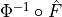 is used. Here,  is the
quantile function of a standard normal distribution and
is the
quantile function of a standard normal distribution and
 is the empirical distribution function for the respective
marginal.
is the empirical distribution function for the respective
marginal.This idea stems from the literature on nonparanormal models, see:
Han Liu, John Lafferty, and Larry Wasserman. The nonparanormal: semiparametric estimation of high dimensional undirected graphs. J. Mach. Learn. Res., 10:2295–2328, 2009.
Han Liu, Fang Han, Ming Yuan, John Lafferty, and Larry Wasserman. High-dimensional semiparametric Gaussian copula graphical models. Ann. Statist., 40(4):2293–2326, 2012a.
Naftali Harris, Mathias Drton. PC Algorithm for Nonparanormal Graphical Models. Journal of Machine Learning Research, 14: 3365-3383, 2013.
Afterwards (where Z, X, and Y are now assumed to be transformed to the standard normal scale):
is regressed out from
and assuming the modelusing OLS regression. Then the dependency of the residuals is tested with the Pearson correlation test.
For the
significance='analytic'Student’s-t distribution with degrees of freedom is implemented.- Parameters:
**kwargs – Arguments passed on to Parent class CondIndTest.
- get_analytic_confidence(value, df, conf_lev)[source]¶
Returns analytic confidence interval for correlation coefficient.
Based on Student’s t-distribution.
- Parameters:
value (float) – Test statistic value.
df (int) – degrees of freedom of the test
conf_lev (float) – Confidence interval, eg, 0.9
- Returns:
(conf_lower, conf_upper) – Upper and lower confidence bound of confidence interval.
- Return type:
Tuple of floats
- get_analytic_significance(value, T, dim, xyz)[source]¶
Returns analytic p-value from Student’s t-test for the Pearson correlation coefficient.
Assumes two-sided correlation. If the degrees of freedom are less than 1, numpy.nan is returned.
- Parameters:
value (float) – Test statistic value.
T (int) – Sample length
dim (int) – Dimensionality, ie, number of features.
xyz (array of ints) – XYZ identifier array of shape (dim,).
- Returns:
pval – P-value.
- Return type:
float or numpy.nan
- get_dependence_measure(array, xyz, data_type=None)[source]¶
Return partial correlation.
Marginals are firstly transformed to standard normal scale. Dependence Measure is then estimated as the Pearson correlation of the residuals of a linear OLS regression.
- Parameters:
array (array-like) – data array with X, Y, Z in rows and observations in columns
xyz (array of ints) – XYZ identifier array of shape (dim,).
- Returns:
val – Partial correlation coefficient.
- Return type:
float
- get_model_selection_criterion(j, parents, tau_max=0, corrected_aic=False)[source]¶
Returns Akaike’s Information criterion modulo constants.
First of all, each marginal is transformed to the standard normal scale. For this, each marginal is transformed to the uniform scale using the empirical distribution function and then, transformed to the standard normal scale by applying the quantile function of a standard normal. Afterwards, fits a linear model of the parents to variable j and returns the score. Leave-one-out cross-validation is asymptotically equivalent to AIC for ordinary linear regression models. Here used to determine optimal hyperparameters in PCMCI(plus), in particular the pc_alpha value.
- Parameters:
j (int) – Index of target variable in data array.
parents (list) – List of form [(0, -1), (3, -2), …] containing parents.
tau_max (int, optional (default: 0)) – Maximum time lag. This may be used to make sure that estimates for different lags in X, Z, all have the same sample size.
Returns –
score (float) – Model score.
- get_shuffle_significance(array, xyz, value, return_null_dist=False)[source]¶
Returns p-value for shuffle significance test.
Firstly, each marginal is transformed to the standard normal scale. For residual-based test statistics only the residuals are shuffled.
- Parameters:
array (array-like) – data array with X, Y, Z in rows and observations in columns
xyz (array of ints) – XYZ identifier array of shape (dim,).
value (number) – Value of test statistic for unshuffled estimate.
- Returns:
pval – p-value
- Return type:
float
- property measure¶
Concrete property to return the measure of the independence test
- trafo2normal(x, thres=1e-05)[source]¶
Transforms input array to standard normal marginals.
For that, the code first transforms to uniform 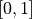 marginals using the empirical distribution function, and then transforms to normal marginals by applying the quantile function of a standard normal. Assumes x.shape = (dim, T)
- Parameters:
x (array-like) – Input array.
thres (float) – Small number between 0 and 1; after transformation to the uniform scale, all values that are too close to zero are replaced by thres, similarly, all values that are too close to one, are replaced by 1-thres. This avoids NaNs.
- Returns:
normal – array with normal marginals.
- Return type:
array-like
- class tigramite.independence_tests.gpdc.GPDC(null_dist_filename=None, gp_params=None, **kwargs)[source]¶
GPDC conditional independence test based on Gaussian processes and distance correlation.
GPDC is based on a Gaussian process (GP) regression and a distance correlation test on the residuals [2]. GP is estimated with scikit-learn and allows to flexibly specify kernels and hyperparameters or let them be optimized automatically. The distance correlation test is implemented with cython. Here the null distribution is not analytically available, but can be precomputed with the function generate_and_save_nulldists(…) which saves a *.npz file containing the null distribution for different sample sizes. This file can then be supplied as null_dist_filename.
Notes
GPDC is based on a Gaussian process (GP) regression and a distance correlation test on the residuals. Distance correlation is described in [2]. To test
, first is regressed out from
and assuming the model
using GP regression. Here
 and the kernel bandwidth are
optimzed using
and the kernel bandwidth are
optimzed using sklearn. Then the residuals are transformed to uniform marginals yielding 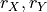 and their dependency is tested with
The null distribution of the distance correlation should be pre-computed. Otherwise it is computed during runtime.
References
- Parameters:
null_dist_filename (str, otional (default: None)) – Path to file containing null distribution.
gp_params (dictionary, optional (default: None)) – Dictionary with parameters for
GaussianProcessRegressor.**kwargs – Arguments passed on to parent class GaussProcReg.
- generate_and_save_nulldists(sample_sizes, null_dist_filename)[source]¶
Generates and saves null distribution for pairwise independence tests.
Generates the null distribution for different sample sizes. Calls generate_nulldist. Null dists are saved to disk as self.null_dist_filename.npz. Also adds the null distributions to self.gauss_pr.null_dists.
- Parameters:
sample_sizes (list) – List of sample sizes.
null_dist_filename (str) – Name to save file containing null distributions.
- generate_nulldist(df, add_to_null_dists=True)[source]¶
Generates null distribution for pairwise independence tests.
Generates the null distribution for sample size df. Assumes pairwise samples transformed to uniform marginals. Uses get_dependence_measure available in class and generates self.sig_samples random samples. Adds the null distributions to self.gauss_pr.null_dists.
- Parameters:
df (int) – Degrees of freedom / sample size to generate null distribution for.
add_to_null_dists (bool, optional (default: True)) – Whether to add the null dist to the dictionary of null dists or just return it.
- Returns:
null_dist – Only returned,if add_to_null_dists is False.
- Return type:
array of shape [df,]
- get_analytic_significance(value, T, dim, xyz)[source]¶
Returns p-value for the distance correlation coefficient.
The null distribution for necessary degrees of freedom (df) is loaded. If not available, the null distribution is generated with the function generate_nulldist(). It is recommended to generate the nulldists for a wide range of sample sizes beforehand with the function generate_and_save_nulldists(…). The distance correlation coefficient is one-sided. If the degrees of freedom are less than 1, numpy.nan is returned.
- Parameters:
value (float) – Test statistic value.
T (int) – Sample length
dim (int) – Dimensionality, ie, number of features.
xyz (array of ints) – XYZ identifier array of shape (dim,).
- Returns:
pval – p-value.
- Return type:
float or numpy.nan
- get_dependence_measure(array, xyz)[source]¶
Return GPDC measure.
Estimated as the distance correlation of the residuals of a GP regression.
- Parameters:
array (array-like) – data array with X, Y, Z in rows and observations in columns
xyz (array of ints) – XYZ identifier array of shape (dim,).
- Returns:
val – GPDC test statistic.
- Return type:
float
- get_model_selection_criterion(j, parents, tau_max=0)[source]¶
Returns log marginal likelihood for GP regression.
Fits a GP model of the parents to variable j and returns the negative log marginal likelihood as a model selection score. Is used to determine optimal hyperparameters in PCMCI, in particular the pc_alpha value.
- Parameters:
j (int) – Index of target variable in data array.
parents (list) – List of form [(0, -1), (3, -2), …] containing parents.
tau_max (int, optional (default: 0)) – Maximum time lag. This may be used to make sure that estimates for different lags in X, Z, all have the same sample size.
Returns –
score (float) – Model score.
- get_shuffle_significance(array, xyz, value, return_null_dist=False)[source]¶
Returns p-value for shuffle significance test.
For residual-based test statistics only the residuals are shuffled.
- Parameters:
array (array-like) – data array with X, Y, Z in rows and observations in columns
xyz (array of ints) – XYZ identifier array of shape (dim,).
value (number) – Value of test statistic for unshuffled estimate.
- Returns:
pval – p-value
- Return type:
float
- property measure¶
Concrete property to return the measure of the independence test
- class tigramite.independence_tests.gpdc_torch.GPDCtorch(null_dist_filename=None, **kwargs)[source]¶
GPDC conditional independence test based on Gaussian processes and distance correlation. Here with gpytorch implementation.
GPDC is based on a Gaussian process (GP) regression and a distance correlation test on the residuals [2]. GP is estimated with gpytorch. The distance correlation test is implemented with the dcor package available from pip. Here the null distribution is not analytically available, but can be precomputed with the function generate_and_save_nulldists(…) which saves a *.npz file containing the null distribution for different sample sizes. This file can then be supplied as null_dist_filename.
Notes
GPDC is based on a Gaussian process (GP) regression and a distance correlation test on the residuals. Distance correlation is described in [2]. To test
, first is regressed out from
and assuming the modelusing GP regression. Here
and the kernel bandwidth are
optimzed using gpytorch. Then the residuals are transformed to uniform marginals yielding and their dependency is tested withThe null distribution of the distance correlation should be pre-computed. Otherwise it is computed during runtime.
- Parameters:
null_dist_filename (str, otional (default: None)) – Path to file containing null distribution.
**kwargs – Arguments passed on to parent class GaussProcRegTorch.
- generate_and_save_nulldists(sample_sizes, null_dist_filename)[source]¶
Generates and saves null distribution for pairwise independence tests.
Generates the null distribution for different sample sizes. Calls generate_nulldist. Null dists are saved to disk as self.null_dist_filename.npz. Also adds the null distributions to self.gauss_pr.null_dists.
- Parameters:
sample_sizes (list) – List of sample sizes.
null_dist_filename (str) – Name to save file containing null distributions.
- generate_nulldist(df, add_to_null_dists=True)[source]¶
Generates null distribution for pairwise independence tests.
Generates the null distribution for sample size df. Assumes pairwise samples transformed to uniform marginals. Uses get_dependence_measure available in class and generates self.sig_samples random samples. Adds the null distributions to self.gauss_pr.null_dists.
- Parameters:
df (int) – Degrees of freedom / sample size to generate null distribution for.
add_to_null_dists (bool, optional (default: True)) – Whether to add the null dist to the dictionary of null dists or just return it.
- Returns:
null_dist – Only returned,if add_to_null_dists is False.
- Return type:
array of shape [df,]
- get_analytic_significance(value, T, dim, xyz)[source]¶
Returns p-value for the distance correlation coefficient.
The null distribution for necessary degrees of freedom (df) is loaded. If not available, the null distribution is generated with the function generate_nulldist(). It is recommended to generate the nulldists for a wide range of sample sizes beforehand with the function generate_and_save_nulldists(…). The distance correlation coefficient is one-sided. If the degrees of freedom are less than 1, numpy.nan is returned.
- Parameters:
value (float) – Test statistic value.
T (int) – Sample length
dim (int) – Dimensionality, ie, number of features.
xyz (array of ints) – XYZ identifier array of shape (dim,).
- Returns:
pval – p-value.
- Return type:
float or numpy.nan
- get_dependence_measure(array, xyz)[source]¶
Return GPDC measure.
Estimated as the distance correlation of the residuals of a GP regression.
- Parameters:
array (array-like) – data array with X, Y, Z in rows and observations in columns
xyz (array of ints) – XYZ identifier array of shape (dim,).
- Returns:
val – GPDC test statistic.
- Return type:
float
- get_model_selection_criterion(j, parents, tau_max=0)[source]¶
Returns log marginal likelihood for GP regression.
Fits a GP model of the parents to variable j and returns the negative log marginal likelihood as a model selection score. Is used to determine optimal hyperparameters in PCMCI, in particular the pc_alpha value.
- Parameters:
j (int) – Index of target variable in data array.
parents (list) – List of form [(0, -1), (3, -2), …] containing parents.
tau_max (int, optional (default: 0)) – Maximum time lag. This may be used to make sure that estimates for different lags in X, Z, all have the same sample size.
Returns –
score (float) – Model score.
- get_shuffle_significance(array, xyz, value, return_null_dist=False)[source]¶
Returns p-value for shuffle significance test.
For residual-based test statistics only the residuals are shuffled.
- Parameters:
array (array-like) – data array with X, Y, Z in rows and observations in columns
xyz (array of ints) – XYZ identifier array of shape (dim,).
value (number) – Value of test statistic for unshuffled estimate.
- Returns:
pval – p-value
- Return type:
float
- property measure¶
Concrete property to return the measure of the independence test
- class tigramite.independence_tests.cmiknn.CMIknn(knn=0.2, shuffle_neighbors=5, significance='shuffle_test', transform='ranks', workers=- 1, model_selection_folds=3, **kwargs)[source]¶
Conditional mutual information test based on nearest-neighbor estimator.
Conditional mutual information is the most general dependency measure coming from an information-theoretic framework. It makes no assumptions about the parametric form of the dependencies by directly estimating the underlying joint density. The test here is based on the estimator in S. Frenzel and B. Pompe, Phys. Rev. Lett. 99, 204101 (2007), combined with a shuffle test to generate the distribution under the null hypothesis of independence first used in [3]. The knn-estimator is suitable only for variables taking a continuous range of values. For discrete variables use the CMIsymb class.
Notes
CMI is given by

Its knn-estimator is given by
![\widehat{I}(X;Y|Z) &= \psi (k) + \frac{1}{T} \sum_{t=1}^T
\left[ \psi(k_{Z,t}) - \psi(k_{XZ,t}) - \psi(k_{YZ,t}) \right]](_images/math/42858b59a7270363c15ca14b0d5fc56d33af1f8a.png)
where
 is the Digamma function. This estimator has as a
parameter the number of nearest-neighbors 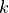 which determines the
size of hyper-cubes around each (high-dimensional) sample point. Then
is the Digamma function. This estimator has as a
parameter the number of nearest-neighbors 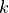 which determines the
size of hyper-cubes around each (high-dimensional) sample point. Then
 are the numbers of neighbors in the respective
subspaces.
are the numbers of neighbors in the respective
subspaces.can be viewed as a density smoothing parameter (although it is data-adaptive unlike fixed-bandwidth estimators). For large , the underlying dependencies are more smoothed and CMI has a larger bias, but lower variance, which is more important for significance testing. Note that the estimated CMI values can be slightly negative while CMI is a non- negative quantity.
This method requires the scipy.spatial.cKDTree package.
References
- Parameters:
knn (int or float, optional (default: 0.2)) – Number of nearest-neighbors which determines the size of hyper-cubes around each (high-dimensional) sample point. If smaller than 1, this is computed as a fraction of T, hence knn=knn*T. For knn larger or equal to 1, this is the absolute number.
shuffle_neighbors (int, optional (default: 5)) – Number of nearest-neighbors within Z for the shuffle surrogates which determines the size of hyper-cubes around each (high-dimensional) sample point.
transform ({'ranks', 'standardize', 'uniform', False}, optional) – (default: ‘ranks’) Whether to transform the array beforehand by standardizing or transforming to uniform marginals.
workers (int (optional, default = -1)) – Number of workers to use for parallel processing. If -1 is given all processors are used. Default: -1.
model_selection_folds (int (optional, default = 3)) – Number of folds in cross-validation used in model selection.
significance (str, optional (default: 'shuffle_test')) – Type of significance test to use. For CMIknn only ‘fixed_thres’ and ‘shuffle_test’ are available.
**kwargs – Arguments passed on to parent class CondIndTest.
- get_conditional_entropy(array, xyz)[source]¶
Returns the nearest-neighbor conditional entropy estimate of H(X|Y).
- Parameters:
array (array-like) – data array with X, Y in rows and observations in columns
xyz (array of ints) – XYZ identifier array of shape (dim,). Here only uses 0 for X and 1 for Y.
- Returns:
val – Entropy estimate.
- Return type:
float
- get_dependence_measure(array, xyz)[source]¶
Returns CMI estimate as described in Frenzel and Pompe PRL (2007).
- Parameters:
array (array-like) – data array with X, Y, Z in rows and observations in columns
xyz (array of ints) – XYZ identifier array of shape (dim,).
- Returns:
val – Conditional mutual information estimate.
- Return type:
float
- get_model_selection_criterion(j, parents, tau_max=0)[source]¶
Returns a cross-validation-based score for nearest-neighbor estimates.
Fits a nearest-neighbor model of the parents to variable j and returns the score. The lower, the better the fit. Here used to determine optimal hyperparameters in PCMCI(pc_alpha or fixed thres).
- Parameters:
j (int) – Index of target variable in data array.
parents (list) – List of form [(0, -1), (3, -2), …] containing parents.
tau_max (int, optional (default: 0)) – Maximum time lag. This may be used to make sure that estimates for different lags in X, Z, all have the same sample size.
Returns –
score (float) – Model score.
- get_shuffle_significance(array, xyz, value, return_null_dist=False)[source]¶
Returns p-value for nearest-neighbor shuffle significance test.
For non-empty Z, overwrites get_shuffle_significance from the parent class which is a block shuffle test, which does not preserve dependencies of X and Y with Z. Here the parameter shuffle_neighbors is used to permute only those values
 and 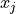 for which
and 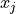 for which
 is among the nearest niehgbors of
is among the nearest niehgbors of  . If Z is
empty, the block-shuffle test is used.
. If Z is
empty, the block-shuffle test is used.- Parameters:
array (array-like) – data array with X, Y, Z in rows and observations in columns
xyz (array of ints) – XYZ identifier array of shape (dim,).
value (number) – Value of test statistic for unshuffled estimate.
- Returns:
pval – p-value
- Return type:
float
- property measure¶
Concrete property to return the measure of the independence test
- class tigramite.independence_tests.cmisymb.CMIsymb(n_symbs=None, significance='shuffle_test', sig_blocklength=1, conf_blocklength=1, **kwargs)[source]¶
Conditional mutual information test for discrete/categorical data.
Conditional mutual information is the most general dependency measure coming from an information-theoretic framework. It makes no assumptions about the parametric form of the dependencies by directly estimating the underlying joint density. The test here is based on directly estimating the joint distribution assuming symbolic input, combined with a local shuffle test to generate the distribution under the null hypothesis of independence. This estimator is suitable only for discrete variables. For continuous variables use the CMIknn class and for mixed-variable datasets the CMIknnMixed class (including mixed-type variables).
Allows for multi-dimensional X, Y.
Notes
CMI and its estimator are given by

- Parameters:
n_symbs (int, optional (default: None)) – Number of symbols in input data. Should be at least as large as the maximum array entry + 1. If None, n_symbs is inferred by scipy’s crosstab.
significance (str, optional (default: 'shuffle_test')) – Type of significance test to use. For CMIsymb only ‘fixed_thres’ and ‘shuffle_test’ are available.
sig_blocklength (int, optional (default: 1)) – Block length for block-shuffle significance test.
conf_blocklength (int, optional (default: 1)) – Block length for block-bootstrap.
**kwargs – Arguments passed on to parent class CondIndTest.
- get_dependence_measure(array, xyz)[source]¶
Returns CMI estimate based on contingency table from scipy’s crosstab to approximate probability mass.
- Parameters:
array (array-like) – data array with X, Y, Z in rows and observations in columns
xyz (array of ints) – XYZ identifier array of shape (dim,).
- Returns:
val – Conditional mutual information estimate.
- Return type:
float
- get_shuffle_significance(array, xyz, value, return_null_dist=False)[source]¶
Returns p-value for shuffle significance test.
Performes a local permutation test: x_i values are only permuted with those x_j for which z_i = z_j. Samples are drawn without replacement as much as possible.
- Parameters:
array (array-like) – data array with X, Y, Z in rows and observations in columns.
xyz (array of ints) – XYZ identifier array of shape (dim,).
value (number) – Value of test statistic for original (unshuffled) estimate.
- Returns:
pval – p-value.
- Return type:
float
- property measure¶
Concrete property to return the measure of the independence test
- class tigramite.independence_tests.oracle_conditional_independence.OracleCI(links=None, observed_vars=None, selection_vars=None, graph=None, graph_is_mag=False, tau_max=None, verbosity=0)[source]¶
Oracle of conditional independence test X _|_ Y | Z given a graph.
Class around link_coeff causal ground truth. X _|_ Y | Z is based on assessing whether X and Y are d-separated given Z in the graph.
Class can be used just like a Tigramite conditional independence class (e.g., ParCorr). The main use is for unit testing of PCMCI methods.
- Parameters:
graph (array of shape [N, N, tau_max+1]) – Causal graph.
links (dict) – Dictionary of form {0:[(0, -1), …], 1:[…], …}. Alternatively can also digest {0: [((0, -1), coeff, func)], …}.
observed_vars (None or list, optional (default: None)) – Subset of keys in links definining which variables are observed. If None, then all variables are observed.
selection_vars (None or list, optional (default: None)) – Subset of keys in links definining which variables are selected (= always conditioned on at every time lag). If None, then no variables are selected.
verbosity (int, optional (default: 0)) – Level of verbosity.
- check_shortest_path(X, Y, Z, max_lag=None, starts_with=None, ends_with=None, forbidden_nodes=None, directed=False, only_non_causal_paths=False, check_optimality_cond=False, optimality_cond_des_YM=None, optimality_cond_Y=None, return_path=False)[source]¶
Returns path between X and Y given Z in the graph.
X, Y, Z are of the form (var, lag) for lag <= 0. D-separation is based on:
1. Assessing maximum time lag max_lag of last ancestor of any X, Y, Z with non-blocked (by Z), non-repeating directed path towards X, Y, Z in the graph. ‘non_repeating’ means that an ancestor X^i_{ t- au_i} with link X^i_{t- au_i} –> X^j_{ t- au_j} is only included if X^i_{t’- au_i} –> X^j_{ t’- au_j} for t’!=t is not already part of the ancestors.
2. Using the time series graph truncated at max_lag we then test d-separation between X and Y conditional on Z using breadth-first search of non-blocked paths according to d-separation rules including selection variables.
Optionally only considers paths starting/ending with specific marks) and makes available the ancestors up to max_lag of X, Y, Z. This may take a very long time, however.
- Parameters:
X (list of tuples) – List of variables chosen for testing paths.
Y (list of tuples) – List of variables chosen for testing paths.
Z (list of tuples) – List of variables chosen for testing paths.
max_lag (int, optional (default: None)) – Used here to constrain the has_path function to the graph truncated at max_lag instead of identifying the max_lag from ancestral search.
compute_ancestors (bool) – Whether to also make available the ancestors for X, Y, Z as self.anc_all_x, self.anc_all_y, and self.anc_all_z, respectively.
starts_with ({None, 'tail', 'arrohead'}) – Whether to only consider paths starting with particular mark at X.
ends_with ({None, 'tail', 'arrohead'}) – Whether to only consider paths ending with particular mark at Y.
- Returns:
path – Returns path or False if no path exists.
- Return type:
list or False
- get_graph_from_links(tau_max=None)[source]¶
Constructs graph (DAG or MAG or ADMG) from links, observed_vars, and selection_vars.
For ADMGs uses the Latent projection operation (Pearl 2009).
- get_links_from_graph(graph)[source]¶
Constructs links_coeffs dictionary, observed_vars, and selection_vars from graph array (MAG or DAG).
In the case of MAGs, for every <-> or — link further latent and selection variables, respectively, are added. This corresponds to a canonical DAG (Richardson Spirtes 2002).
For ADMGs “—” are not supported, but also links of type “+->” exist, which corresponds to having both “–>” and “<->”.
Can be used to evaluate d-separation in MAG/DAGs.
- get_measure(X, Y, Z=None, tau_max=0)[source]¶
Returns dependence measure.
Returns 0 if X and Y are d-separated given Z in the graph and 1 else.
- Parameters:
X (list of tuples) – X,Y,Z are of the form [(var, -tau)], where var specifies the variable index in the observed_vars and tau the time lag.
[ (Y) – X,Y,Z are of the form [(var, -tau)], where var specifies the variable index in the observed_vars and tau the time lag.
Z] (list of tuples) – X,Y,Z are of the form [(var, -tau)], where var specifies the variable index in the observed_vars and tau the time lag.
tau_max (int, optional (default: 0)) – Maximum time lag. This may be used to make sure that estimates for different lags in X, Z, all have the same sample size.
- Returns:
val – The test statistic value.
- Return type:
float
- get_model_selection_criterion(j, parents, tau_max=0)[source]¶
Base class assumption that this is not implemented. Concrete classes should override when possible.
- property measure¶
Concrete property to return the measure of the independence test
- run_test(X, Y, Z=None, tau_max=0, cut_off='2xtau_max', alpha_or_thres=None, verbosity=0)[source]¶
Perform oracle conditional independence test.
Calls the d-separation function.
- Parameters:
X (list of tuples) – X,Y,Z are of the form [(var, -tau)], where var specifies the variable index in the observed_vars and tau the time lag.
Y (list of tuples) – X,Y,Z are of the form [(var, -tau)], where var specifies the variable index in the observed_vars and tau the time lag.
Z (list of tuples) – X,Y,Z are of the form [(var, -tau)], where var specifies the variable index in the observed_vars and tau the time lag.
tau_max (int, optional (default: 0)) – Not used here.
cut_off ({'2xtau_max', 'max_lag', 'max_lag_or_tau_max'}) – Not used here.
alpha_or_thres (float) – Not used here.
- Returns:
val, pval – The test statistic value and the p-value.
- Return type:
Tuple of floats
- class tigramite.independence_tests.parcorr_mult.ParCorrMult(correlation_type='max_corr', **kwargs)[source]¶
Partial correlation test for multivariate X and Y.
Multivariate partial correlation is estimated through ordinary least squares (OLS) regression and some test for multivariate dependency among the residuals.
Notes
To test
, first is regressed out from
and assuming the modelusing OLS regression. Then different measures for the dependency among the residuals can be used. Currently only a test for zero correlation on the maximum of the residuals’ correlation is performed.
- Parameters:
correlation_type ({'max_corr'}) – Which dependency measure to use on residuals.
**kwargs – Arguments passed on to Parent class CondIndTest.
- get_analytic_significance(value, T, dim, xyz)[source]¶
Returns analytic p-value depending on correlation_type.
Assumes two-sided correlation. If the degrees of freedom are less than 1, numpy.nan is returned.
- Parameters:
value (float) – Test statistic value.
T (int) – Sample length
dim (int) – Dimensionality, ie, number of features.
xyz (array of ints) – XYZ identifier array of shape (dim,).
- Returns:
pval – P-value.
- Return type:
float or numpy.nan
- get_dependence_measure(array, xyz)[source]¶
Return multivariate kernel correlation coefficient.
Estimated as some dependency measure on the residuals of a linear OLS regression.
- Parameters:
array (array-like) – data array with X, Y, Z in rows and observations in columns
xyz (array of ints) – XYZ identifier array of shape (dim,).
- Returns:
val – Partial correlation coefficient.
- Return type:
float
- get_model_selection_criterion(j, parents, tau_max=0, corrected_aic=False)[source]¶
Returns Akaike’s Information criterion modulo constants.
Fits a linear model of the parents to each variable in j and returns the average score. Leave-one-out cross-validation is asymptotically equivalent to AIC for ordinary linear regression models. Here used to determine optimal hyperparameters in PCMCI, in particular the pc_alpha value.
- Parameters:
j (int) – Index of target variable in data array.
parents (list) – List of form [(0, -1), (3, -2), …] containing parents.
tau_max (int, optional (default: 0)) – Maximum time lag. This may be used to make sure that estimates for different lags in X, Z, all have the same sample size.
Returns –
score (float) – Model score.
- get_shuffle_significance(array, xyz, value, return_null_dist=False)[source]¶
Returns p-value for shuffle significance test.
For residual-based test statistics only the residuals are shuffled.
- Parameters:
array (array-like) – data array with X, Y, Z in rows and observations in columns
xyz (array of ints) – XYZ identifier array of shape (dim,).
value (number) – Value of test statistic for unshuffled estimate.
- Returns:
pval – p-value
- Return type:
float
- property measure¶
Concrete property to return the measure of the independence test
- mult_corr(array, xyz, standardize=True)[source]¶
Return multivariate dependency measure.
- Parameters:
array (array-like) – data array with X, Y in rows and observations in columns
xyz (array of ints) – XYZ identifier array of shape (dim,).
standardize (bool, optional (default: True)) – Whether to standardize the array beforehand. Must be used for partial correlation.
- Returns:
val – Multivariate dependency measure.
- Return type:
float
- class tigramite.independence_tests.gsquared.Gsquared(n_symbs=None, **kwargs)[source]¶
G-squared conditional independence test for categorical data.
Uses Chi2 as the null distribution and the method from [7] to adjust the degrees of freedom. Valid only asymptotically, recommended are above 1000-2000 samples (depends on data). For smaller sample sizes use the CMIsymb class which includes a local permutation test.
Assumes one-dimensional X, Y. But can be combined with PairwiseMultCI to obtain a test for multivariate X, Y.
This method requires the scipy.stats package.
Notes
The general formula is
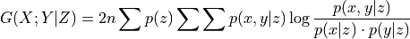
where
 is the sample size. This is simply
is the sample size. This is simply  .
.References
- Parameters:
n_symbs (int, optional (default: None)) – Number of symbols in input data. Should be at least as large as the maximum array entry + 1. If None, n_symbs is inferred by scipy’s crosstab
**kwargs – Arguments passed on to parent class CondIndTest.
- get_analytic_significance(value, T, dim, xyz)[source]¶
Return the p_value of test statistic value ‘value’, according to a chi-square distribution with ‘dof’ degrees of freedom.
- get_dependence_measure(array, xyz)[source]¶
Returns Gsquared/G-test test statistic.
- Parameters:
array (array-like) – data array with X, Y, Z in rows and observations in columns.
xyz (array of ints) – XYZ identifier array of shape (dim,).
- Returns:
val – G-squared estimate.
- Return type:
float
- property measure¶
Concrete property to return the measure of the independence test
- class tigramite.independence_tests.parcorr_wls.ParCorrWLS(gt_std_matrix=None, expert_knowledge='time-dependent heteroskedasticity', window_size=10, robustify=False, **kwargs)[source]¶
Weighted partial correlation test.
Partial correlation is estimated through linear weighted least squares (WLS) regression and a test for non-zero linear Pearson correlation on the residuals. Either the variances, i.e. weights, are known, or they can be estimated using non-parametric regression (using k nearest neighbour).
Notes
To test
, first is regressed out from
and assuming the modelusing WLS regression. Here, we do not assume homoskedasticity of the error terms. Then the dependency of the residuals is tested with the Pearson correlation test.
For the
significance='analytic'Student’s-t distribution with degrees of freedom is implemented.- Parameters:
gt_std_matrix (array-like, optional (default: None)) – Standard deviations of the noise of shape (T, nb_nodes)
expert_knowledge (string or dict (default: time-dependent heteroskedasticity)) – Either string “time-dependent heteroskedasticity” meaning that every variable only has time-dependent heteroskedasticity, or string “homoskedasticity” where we assume homoskedasticity for all variables, or dictionary containing expert knowledge about heteroskedastic relationships as list of tuples or strings.
window_size (int (default: 10)) – Number of nearest neighbours that we are using for estimating the variance function.
robustify (bool (default: False)) – Indicates whether the robust partial correlation test should be used, i.e. whether the data should be transformed to normal marginals before testing
**kwargs – Arguments passed on to Parent class ParCorr.
- get_dependence_measure(array, xyz)[source]¶
Return partial correlation.
Estimated as the Pearson correlation of the residuals of a linear OLS regression.
- Parameters:
array (array-like) – data array with X, Y, Z in rows and observations in columns
xyz (array of ints) – XYZ identifier array of shape (dim,).
- Returns:
val – Partial correlation coefficient.
- Return type:
float
- get_model_selection_criterion(j, parents, tau_max=0, corrected_aic=False)[source]¶
Returns Akaike’s Information criterion modulo constants.
Fits a linear model of the parents to variable j and returns the score. Leave-one-out cross-validation is asymptotically equivalent to AIC for ordinary linear regression models. Here used to determine optimal hyperparameters in PCMCI, in particular the pc_alpha value.
- Parameters:
j (int) – Index of target variable in data array.
parents (list) – List of form [(0, -1), (3, -2), …] containing parents.
tau_max (int, optional (default: 0)) – Maximum time lag. This may be used to make sure that estimates for different lags in X, Z, all have the same sample size.
Returns –
score (float) – Model score.
- get_shuffle_significance(array, xyz, value, return_null_dist=False)[source]¶
Returns p-value for shuffle significance test.
For residual-based test statistics only the residuals are shuffled.
- Parameters:
array (array-like) – data array with X, Y, Z in rows and observations in columns
xyz (array of ints) – XYZ identifier array of shape (dim,).
value (number) – Value of test statistic for unshuffled estimate.
- Returns:
pval – p-value
- Return type:
float
- class tigramite.independence_tests.regressionCI.RegressionCI(**kwargs)[source]¶
Flexible parametric conditional independence tests for continuous, categorical, or mixed data.
Asymptotically equivalent to the tests for mixed data suggested in
Tsagris, Michail, et al. “Constraint-based causal discovery with mixed data.” International journal of data science and analytics 6 (2018): 19-30.
For linear regression RegressionCI implements a likelihood ratio test, while the above employs a F-statistic. Furthermore, while our implementation utilizes the Chi^2 null distribution, theirs uses the F-distribution.
Assumes one-dimensional X, Y. But can be combined with PairwiseMultCI to obtain a test for multivariate X, Y.
Notes
To test
, the regressions Y|XZ vs Y|Z, or, depending
on certain criteria, X|YZ vs X|Z are compared. For that, the notion of
the deviance is employed. If the fits of the respective regressions do
not differ significantly (measured using the deviance), the null
hypotheses of conditional independence is “accepted”. This approach
assumes that X and Y are univariate, and Z can be either empty,
univariate or multivariate. Moreover, this approach works for all
combinations of “discrete” and “continuous” X, Y and respective columns
of Z; depending on the case, linear regression or multinomial regression
is employed.Assumes one-dimensional X, Y.
- Parameters:
**kwargs – Arguments passed on to parent class CondIndTest.
- get_analytic_significance(value, T, dim, xyz)[source]¶
Return the p_value of test statistic.
According to a chi-square distribution with ‘dof’ degrees of freedom.
- get_dependence_measure(array, xyz, data_type)[source]¶
Returns test statistic.
- Parameters:
array (array-like) – data array with X, Y, Z in rows and observations in columns.
xyz (array of ints) – XYZ identifier array of shape (dim,).
data_type (array-like) – array of same shape as array which describes whether samples are continuous or discrete: 0s for continuous and 1s for discrete
- Returns:
val – test estimate.
- Return type:
float
- property measure¶
Concrete property to return the measure of the independence test
- set_dataframe(dataframe)[source]¶
Initialize and check the dataframe.
- Parameters:
dataframe (data object) – Set tigramite dataframe object. It must have the attributes dataframe.values yielding a numpy array of shape (observations T, variables N) and optionally a mask of the same shape and a missing values flag.
tigramite.causal_effects: Causal Effect analysis¶
- class tigramite.causal_effects.CausalEffects(graph, graph_type, X, Y, S=None, hidden_variables=None, check_SM_overlap=True, verbosity=0)[source]¶
Causal effect estimation.
Methods for the estimation of linear or non-parametric causal effects between (potentially multivariate) X and Y (potentially conditional on S) by (generalized) backdoor adjustment. Various graph types are supported, also including hidden variables.
Linear and non-parametric estimators are based on sklearn. For the linear case without hidden variables also an efficient estimation based on Wright’s path coefficients is available. This estimator also allows to estimate mediation effects.
See the corresponding paper [6] and tigramite tutorial for an in-depth introduction.
References
- Parameters:
graph (array of either shape [N, N], [N, N, tau_max+1], or [N, N, tau_max+1, tau_max+1]) – Different graph types are supported, see tutorial.
X (list of tuples) – List of tuples [(i, -tau), …] containing cause variables.
Y (list of tuples) – List of tuples [(j, 0), …] containing effect variables.
S (list of tuples) – List of tuples [(i, -tau), …] containing conditioned variables.
graph_type (str) – Type of graph.
hidden_variables (list of tuples) – Hidden variables in format [(i, -tau), …]. The internal graph is constructed by a latent projection.
check_SM_overlap (bool) – Whether to check whether S overlaps with M.
verbosity (int, optional (default: 0)) – Level of verbosity.
- check_XYS_paths()[source]¶
Check whether one can remove nodes from X and Y with no proper causal paths.
- Returns:
X, Y
- Return type:
cleaned lists of X and Y with irrelevant nodes removed.
- check_optimality()[source]¶
Check whether optimal adjustment set exists according to Thm. 3 in Runge NeurIPS 2021.
- Returns:
optimality – Returns True if an optimal adjustment set exists, otherwise False.
- Return type:
bool
- fit_bootstrap_of(method, method_args, boot_samples=100, boot_blocklength=1, seed=None)[source]¶
Runs chosen method on bootstrap samples drawn from DataFrame.
Bootstraps for tau=0 are drawn from [max_lag, …, T] and all lagged variables constructed in DataFrame.construct_array are consistently shifted with respect to this bootsrap sample to ensure that lagged relations in the bootstrap sample are preserved.
This function fits the models, predict_bootstrap_of can then be used to get confidence intervals for the effect of interventions.
- Parameters:
method (str) – Chosen method among valid functions in this class.
method_args (dict) – Arguments passed to method.
boot_samples (int) – Number of bootstrap samples to draw.
boot_blocklength (int, optional (default: 1)) – Block length for block-bootstrap.
seed (int, optional(default = None)) – Seed for RandomState (default_rng)
- fit_total_effect(dataframe, estimator, adjustment_set='optimal', conditional_estimator=None, data_transform=None, mask_type=None, ignore_identifiability=False)[source]¶
- Returns a fitted model for the total causal effect of X on Y
conditional on S.
- Parameters:
dataframe (data object) – Tigramite dataframe object. It must have the attributes dataframe.values yielding a numpy array of shape (observations T, variables N) and optionally a mask of the same shape and a missing values flag.
estimator (sklearn model object) – For example, sklearn.linear_model.LinearRegression() for a linear regression model.
adjustment_set (str or list of tuples) – If ‘optimal’ the Oset is used, if ‘minimized_optimal’ the minimized Oset, and if ‘colliders_minimized_optimal’, the colliders-minimized Oset. If a list of tuples is passed, this set is used.
conditional_estimator (sklearn model object, optional (default: None)) – Used to fit conditional causal effects in nested regression. If None, the same model as for estimator is used.
data_transform (sklearn preprocessing object, optional (default: None)) – Used to transform data prior to fitting. For example, sklearn.preprocessing.StandardScaler for simple standardization. The fitted parameters are stored.
mask_type ({None, 'y','x','z','xy','xz','yz','xyz'}) – Masking mode: Indicators for which variables in the dependence measure I(X; Y | Z) the samples should be masked. If None, the mask is not used. Explained in tutorial on masking and missing values.
ignore_identifiability (bool) – Only applies to adjustment sets supplied by user. Ignores if that set leads to a non-identifiable effect.
- fit_wright_effect(dataframe, mediation=None, method='parents', links_coeffs=None, data_transform=None, mask_type=None)[source]¶
- Returns a fitted model for the total or mediated causal effect of X on Y
potentially through mediator variables.
- Parameters:
dataframe (data object) – Tigramite dataframe object. It must have the attributes dataframe.values yielding a numpy array of shape (observations T, variables N) and optionally a mask of the same shape and a missing values flag.
mediation (None, 'direct', or list of tuples) – If None, total effect is estimated, if ‘direct’ then only the direct effect is estimated, else only those causal paths are considerd that pass at least through one of these mediator nodes.
method ({'parents', 'links_coeffs', 'optimal'}) – Method to use for estimating Wright’s path coefficients. If ‘optimal’, the Oset is used, if ‘links_coeffs’, the coefficients in links_coeffs are used, if ‘parents’, the parents are used (only valid for DAGs).
links_coeffs (dict) – Only used if method = ‘links_coeffs’. Dictionary of format: {0:[((i, -tau), coeff),…], 1:[…], …} for all variables where i must be in [0..N-1] and tau >= 0 with number of variables N. coeff must be a float.
data_transform (None) – Not implemented for Wright estimator. Complicated for missing samples.
mask_type ({None, 'y','x','z','xy','xz','yz','xyz'}) – Masking mode: Indicators for which variables in the dependence measure I(X; Y | Z) the samples should be masked. If None, the mask is not used. Explained in tutorial on masking and missing values.
- static get_dict_from_graph(graph, parents_only=False)[source]¶
Helper function to convert graph to dictionary of links.
- Parameters:
graph (array of shape (N, N, tau_max+1)) – Matrix format of graph in string format.
parents_only (bool) – Whether to only return parents (’–>’ in graph)
- Returns:
links – Dictionary of form {0:{(0, -1): o-o, …}, 1:{…}, …}.
- Return type:
dict
- static get_graph_from_dict(links, tau_max=None)[source]¶
Helper function to convert dictionary of links to graph array format.
- Parameters:
links (dict) – Dictionary of form {0:[((0, -1), coeff, func), …], 1:[…], …}. Also format {0:[(0, -1), …], 1:[…], …} is allowed.
tau_max (int or None) – Maximum lag. If None, the maximum lag in links is used.
- Returns:
graph – Matrix format of graph with 1 for true links and 0 else.
- Return type:
array of shape (N, N, tau_max+1)
- get_mediators(start, end)[source]¶
Returns mediator variables on proper causal paths.
- Parameters:
start (set) – Set of start nodes.
end (set) – Set of end nodes.
- Returns:
mediators – Mediators on causal paths from start to end.
- Return type:
set
- get_optimal_set(alternative_conditions=None, minimize=False, return_separate_sets=False)[source]¶
Returns optimal adjustment set.
See Runge NeurIPS 2021.
- Parameters:
alternative_conditions (set of tuples) – Used only internally in optimality theorem. If None, self.S is used.
minimize ({False, True, 'colliders_only'}) – Minimize optimal set. If True, minimize such that no subset can be removed without making it invalid. If ‘colliders_only’, only colliders are minimized.
return_separate_sets (bool) – Whether to return tuple of parents, colliders, collider_parents, and S.
- Returns:
Oset_S – Returns optimal adjustment set if a valid set exists, otherwise False.
- Return type:
False or list or tuple of lists
- predict_bootstrap_of(method, method_args, conf_lev=0.9, return_individual_bootstrap_results=False)[source]¶
Predicts with fitted bootstraps.
To be used after fitting with fit_bootstrap_of. Only uses the expected values of the predict function, not potential other output.
- Parameters:
method (str) – Chosen method among valid functions in this class.
method_args (dict) – Arguments passed to method.
conf_lev (float, optional (default: 0.9)) – Two-sided confidence interval.
return_individual_bootstrap_results (bool) – Returns the individual bootstrap predictions.
- Returns:
confidence_intervals
- Return type:
numpy array
- predict_total_effect(intervention_data, conditions_data=None, pred_params=None, return_further_pred_results=False, aggregation_func=<function mean>, transform_interventions_and_prediction=False)[source]¶
Predict effect of intervention with fitted model.
Uses the model.predict() function of the sklearn model.
- Parameters:
intervention_data (numpy array) – Numpy array of shape (time, len(X)) that contains the do(X) values.
conditions_data (data object, optional) – Numpy array of shape (time, len(S)) that contains the S=s values.
pred_params (dict, optional) – Optional parameters passed on to sklearn prediction function.
return_further_pred_results (bool, optional (default: False)) – In case the predictor class returns more than just the expected value, the entire results can be returned.
aggregation_func (callable) – Callable applied to output of ‘predict’. Default is ‘np.mean’.
transform_interventions_and_prediction (bool (default: False)) – Whether to perform the inverse data_transform on prediction results.
- Returns:
Results from prediction (an array of shape (time, len(Y)).)
If estimate_confidence = True, then a tuple is returned.
- predict_wright_effect(intervention_data, pred_params=None)[source]¶
Predict linear effect of intervention with fitted Wright-model.
- Parameters:
intervention_data (numpy array) – Numpy array of shape (time, len(X)) that contains the do(X) values.
pred_params (dict, optional) – Optional parameters passed on to sklearn prediction function.
- Returns:
Results from prediction
- Return type:
an array of shape (time, len(Y)).
tigramite.causal_mediation: Causal mediation analysis¶
- class tigramite.causal_mediation.CausalMediation(graph, graph_type, X, Y, S=None, hidden_variables=None, verbosity=0)[source]¶
Non-linear, non-additive causal mediation analysis.
See the tutorial on Causal Mediation.
Extends the tigramite.CausalEffects class by natural-effect estimation for counter-factual mediation analysis. Effects are estimated by adjustment, where adjustment-sets can be generated automatically (if they exist).
Actual fit-models can be chosen independently, for details see technical appendix B in the mediation-tutorial.
See references and tigramite tutorial for an in-depth introduction.
References
J. Pearl. Direct and indirect effects. Proceedings of the Seventeenth Conference on Uncertainty in Artificial intelligence, 2001.
J. Pearl. Interpretation and identification of causal mediation. Psychological methods, 19(4):459, 2014.
I. Shpitser and T. J. VanderWeele. A complete graphical criterion for the adjust- ment formula in mediation analysis. The international journal of biostatistics, 7(1), 2011.
- Parameters:
graph (np.array( [N, N] or [N, N, tau_max+1] depending on graph_type ) of 3-character patterns) – The causal graph, see ‘Causal Effects’ tutorial. E.g. returned by causal discovery method (see “Tutorials/Causal Discovery/CD Overview”) or by a toymodel (see toy_setup.Model.GetGroundtruthGraph or the Mediation tutorial).
graph_type (string) – The type of graph, tested for ‘dag’ and ‘stationary_dag’ (time-series). See ‘Causal Effects’ tutorial.
X ((idx, -lag)) – Index of the effect-source.
Y ((idx, -lag)) – Index of the effect-target.
S (None) – Reserved. Must be None in current version.
hidden_variables (None) – Reserved. Must be None in current version.
verbosity (uint) – Tigramite.CausalEffects verbosity setting.
- fit_natural_direct_effect(dataframe, mixed_data_estimator=<tigramite.causal_mediation.FitSetup object>, blocked_mediators='all', adjustment_set='auto', use_mediation_impl_for_total_effect_fallback=False)[source]¶
Fit a natural direct effect.
- Parameters:
dataframe (tigramite.Dataframe) – Observed data.
mixed_data_estimator (mixed_fit.FitSetup) – The fit-configuration to use. See mixed_fit.FitSetup and the Mediation tutorial, Appendix B.
blocked_mediators (‘all’ or iterable of < (idx, -lag) >) – Which mediators to ‘block’ (consider indirect), unblocked mediators are considered as contributions to the direct effect.
adjustment_set (‘auto’ or None or iterable < (idx, -lag) >) – Adjustment-set to use. Will be validated if specified explicitly, if ‘auto’ or None, will try to use an ‘optimal’ set, fall back to [Perkovic et al]’s adjustment-set (which should always work if single-set adjustment as in [Shpitser, VanderWeele] os possible; this follows from combining results of [Shpitser, VanderWeele] and [Perkovic et al]). See ‘Causal Effects’ and its tutorial for more info and references on (optimal) adjustment.
use_mediation_impl_for_total_effect_fallback (bool) – If True, if no mediators are blocked, use mediation implementation to estimate the total effect. In this case, estimating the total effect through the ‘Causal Effects’ class might be easier, however, for comparison to other estimates, using this option might yield more consistent results.
- Returns:
estimator – Typically, use predict_natural_direct_effect or predict_natural_direct_effect_function to use the fitted estimator. The internal NaturalEffects_GraphMediation (if needed).
- Return type:
NaturalEffects_GraphMediation
- predict_natural_direct_effect(reference_value_x, cf_intervention_value_x)[source]¶
After fitting a natural direct effect, predict its value at a specific point. See also predict_natural_direct_effect_function.
- Parameters:
reference_value_x (single value of same type as single sample for X (float, int, or bool)) – Reference-value to which X is set by intervention in the world seen by the (blocked) mediators.
cf_intervention_value_x (single value of same type as single sample for X (float, int, or bool)) – Post-intervention-value to which X is set by intervention in the world seen by the effect (directly).
Throws –
------ –
valid. (Raises and exception if parameters are not meaningful or if adjustment-set is not) –
- Returns:
NDE (If Y is categorical -> np.array( # categories Y, 2 )) – The probabilities the categories of Y (after, before) changing the interventional value of X as “seen” by Y from change_from to change_to, while keeping (blocked) M as if X remained at change_from.
NDE (If Y is continuous -> float) – The change in the expectation-value of Y induced by changing the interventional value of X as “seen” by Y from change_from to change_to, while keeping (blocked) M as if X remained at change_from.
- predict_natural_direct_effect_function(min_x, max_x, cf_delta=0.5, steps=100, smoothing_gaussian_sigma_in_steps=5, normalize_by_delta=False)[source]¶
Compute NDE as smoothed function
- Parameters:
min_x (float) – Lower bound of interval on which reference-values for X are taken
max_x (float) – Upper bound of interval on which reference-values for X are taken
cf_delta (float) – The change from reference-value to effect-value (change_from=reference, change_to=ref + delta)
steps (uint) – Number of intermediate values to compute in the interval [min_x, max_x]
smoothing_gaussian_sigma_in_steps (uint) – The width of the Gauß-kernel used for smoothing, given in steps.
normalize_by_delta (bool) – Normalize the effect by dividing by cf_delta.
Throws –
------ –
meaningful (Raises and exception if parameters are not) –
or (adjustment-set is not valid) –
delta). (normalization requested makes no sense (normalizing probabilites by) –
- Returns:
NDE (If Y is categorical -> np.array( # steps, # categories Y, 2 )) – For each grid-point: The probabilities the categories of Y (after, before) changing the interventional value of X as “seen” by Y from change_from to change_to, while keeping (blocked) M as if X remained at change_from.
NDE (If Y is continuous -> np.array( # steps )) – For each grid-point: The change in the expectation-value of Y induced by changing the interventional value of X as “seen” by Y from change_from to change_to, while keeping (blocked) M as if X remained at change_from.
tigramite.models: Time series modeling, mediation, and prediction¶
Base class:
- class tigramite.models.Models(dataframe, model, conditional_model=None, data_transform=None, mask_type=None, verbosity=0)[source]¶
Base class for time series models.
Allows to fit any model from sklearn to the parents of a target variable. Also takes care of missing values, masking and preprocessing. If the target variable is multivariate, a model that supports multi-output regression must be used. Note that sklearn.multioutput.MultiOutputRegressor allows to extend single-output models.
- Parameters:
dataframe (data object) – Tigramite dataframe object. It must have the attributes dataframe.values yielding a numpy array of shape (observations T, variables N) and optionally a mask of the same shape and a missing values flag.
model (sklearn model object) – For example, sklearn.linear_model.LinearRegression() for a linear regression model.
conditional_model (sklearn model object, optional (default: None)) – Used to fit conditional causal effects in nested regression. If None, model is used.
data_transform (sklearn preprocessing object, optional (default: None)) – Used to transform data prior to fitting. For example, sklearn.preprocessing.StandardScaler for simple standardization. The fitted parameters are stored. Note that the inverse_transform is then applied to the predicted data.
mask_type ({None, 'y','x','z','xy','xz','yz','xyz'}) – Masking mode: Indicators for which variables in the dependence measure I(X; Y | Z) the samples should be masked. If None, the mask is not used. Explained in tutorial on masking and missing values.
verbosity (int, optional (default: 0)) – Level of verbosity.
- fit_full_model(all_parents, selected_variables=None, tau_max=None, cut_off='max_lag_or_tau_max', empty_predictors_function=<function mean>, return_data=False)[source]¶
Fit time series model.
For each variable in selected_variables, the sklearn model is fitted with 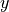 given by the target variable, and
given by its
parents. The fitted model class is returned for later use.- Parameters:
all_parents (dictionary) – Dictionary of form {0:[(0, -1), (3, 0), …], 1:[], …} containing the parents estimated with PCMCI.
selected_variables (list of integers, optional (default: range(N))) – Specify to estimate parents only for selected variables. If None is passed, parents are estimated for all variables.
tau_max (int, optional (default: None)) – Maximum time lag. If None, the maximum lag in all_parents is used.
cut_off ({'max_lag_or_tau_max', '2xtau_max', 'max_lag'}) – How many samples to cutoff at the beginning. The default is ‘max_lag_or_tau_max’, which uses the maximum of tau_max and the conditions. This is useful to compare multiple models on the same sample. Other options are ‘2xtau_max’, which guarantees that MCI tests are all conducted on the same samples. Last, ‘max_lag’ uses as much samples as possible.
empty_predictors_function (function) – Function to apply to y if no predictors are given.
return_data (bool, optional (default: False)) – Whether to save the data array.
- Returns:
fit_results – Returns the sklearn model after fitting. Also returns the data transformation parameters.
- Return type:
dictionary of sklearn model objects for each variable
- get_coefs()[source]¶
Returns dictionary of coefficients for linear models.
Only for models from sklearn.linear_model
- Returns:
coeffs – Dictionary of dictionaries for each variable with keys given by the parents and the regression coefficients as values.
- Return type:
dictionary
- get_general_fitted_model(Y, X, Z=None, conditions=None, tau_max=None, cut_off='max_lag_or_tau_max', empty_predictors_function=<function mean>, return_data=False)[source]¶
Fit time series model.
For each variable in selected_variables, the sklearn model is fitted with given by the target variable(s), and
given by its
parents. The fitted model class is returned for later use.- Parameters:
X (lists of tuples) – List of variables for estimating model Y = f(X,Z)
Y (lists of tuples) – List of variables for estimating model Y = f(X,Z)
Z (lists of tuples) – List of variables for estimating model Y = f(X,Z)
conditions (list of tuples.) – Conditions for estimating conditional causal effects.
tau_max (int, optional (default: None)) – Maximum time lag. If None, the maximum lag in all_parents is used.
cut_off ({'max_lag_or_tau_max', '2xtau_max', 'max_lag'}) – How many samples to cutoff at the beginning. The default is ‘max_lag_or_tau_max’, which uses the maximum of tau_max and the conditions. This is useful to compare multiple models on the same sample. Other options are ‘2xtau_max’, which guarantees that MCI tests are all conducted on the same samples. Last, ‘max_lag’ uses as much samples as possible.
empty_predictors_function (function) – Function to apply to y if no predictors are given.
return_data (bool, optional (default: False)) – Whether to save the data array.
- Returns:
fit_results – Returns the sklearn model after fitting. Also returns the data transformation parameters.
- Return type:
dictionary of sklearn model objects
- get_general_prediction(intervention_data, conditions_data=None, pred_params=None, transform_interventions_and_prediction=False, return_further_pred_results=False, aggregation_func=<function mean>)[source]¶
Predict effect of intervention with fitted model.
Uses the model.predict() function of the sklearn model.
- Parameters:
intervention_data (numpy array) – Numpy array of shape (time, len(X)) that contains the do(X) values.
conditions_data (data object, optional) – Numpy array of shape (time, len(S)) that contains the S=s values.
pred_params (dict, optional) – Optional parameters passed on to sklearn prediction function (model and conditional_model).
transform_interventions_and_prediction (bool (default: False)) – Whether to perform the inverse data_transform on prediction results.
return_further_pred_results (bool, optional (default: False)) – In case the predictor class returns more than just the expected value, the entire results can be returned.
aggregation_func (callable) – Callable applied to output of ‘predict’. Default is ‘np.mean’.
- Return type:
Results from prediction.
- get_residuals_cov_mean(new_data=None, pred_params=None)[source]¶
Returns covariance and means of residuals from fitted model.
Residuals are available as self.residuals.
- Parameters:
new_data (data object, optional) – New Tigramite dataframe object with optional new mask. Note that the data will be cut off according to cut_off, see parameter cut_off below.
pred_params (dict, optional) – Optional parameters passed on to sklearn prediction function.
- Return type:
Results from prediction.
- get_val_matrix()[source]¶
Returns the coefficient array for different lags for linear model.
Requires fit_model() before. An entry val_matrix[i,j,tau] gives the coefficient of the link from i to j at lag tau, including tau=0.
- Returns:
val_matrix – Array of coefficients for each time lag, including lag-zero.
- Return type:
array-like, shape (N, N, tau_max + 1)
- predict_full_model(new_data=None, pred_params=None, cut_off='max_lag_or_tau_max')[source]¶
Predict target variable with fitted model.
Uses the model.predict() function of the sklearn model.
A list of predicted time series for self.selected_variables is returned.
- Parameters:
new_data (data object, optional) – New Tigramite dataframe object with optional new mask. Note that the data will be cut off according to cut_off, see parameter cut_off below.
pred_params (dict, optional) – Optional parameters passed on to sklearn prediction function.
cut_off ({'2xtau_max', 'max_lag', 'max_lag_or_tau_max'}) – How many samples to cutoff at the beginning. The default is ‘2xtau_max’, which guarantees that MCI tests are all conducted on the same samples. For modeling, ‘max_lag_or_tau_max’ can be used, which uses the maximum of tau_max and the conditions, which is useful to compare multiple models on the same sample. Last, ‘max_lag’ uses as much samples as possible.
- Return type:
Results from prediction.
Derived classes:
- class tigramite.models.LinearMediation(dataframe, model_params=None, data_transform=StandardScaler(), mask_type=None, verbosity=0)[source]¶
Linear mediation analysis for time series models.
Fits linear model to parents and provides functions to return measures such as causal effect, mediated causal effect, average causal effect, etc. as described in [4]. Also allows for contemporaneous links.
For general linear and nonlinear causal effect analysis including latent variables and further functionality use the CausalEffects class.
Notes
This class implements the following causal mediation measures introduced in [4]:
causal effect (CE)
mediated causal effect (MCE)
average causal effect (ACE)
average causal susceptibility (ACS)
average mediated causal effect (AMCE)
Consider a simple model of a causal chain as given in the Example with

Here the link coefficient of
 is zero while the
causal effect is 0.25. MCE through is 0.25 implying that all
of the the CE is explained by . ACE from is 0.37 since it
has CE 0.5 on and 0.25 on .
is zero while the
causal effect is 0.25. MCE through is 0.25 implying that all
of the the CE is explained by . ACE from is 0.37 since it
has CE 0.5 on and 0.25 on .Examples
>>> links_coeffs = {0: [], 1: [((0, -1), 0.5)], 2: [((1, -1), 0.5)]} >>> data, true_parents = toys.var_process(links_coeffs, T=1000, seed=42) >>> dataframe = pp.DataFrame(data) >>> med = LinearMediation(dataframe=dataframe) >>> med.fit_model(all_parents=true_parents, tau_max=3) >>> print "Link coefficient (0, -2) --> 2: ", med.get_coeff( i=0, tau=-2, j=2) >>> print "Causal effect (0, -2) --> 2: ", med.get_ce(i=0, tau=-2, j=2) >>> print "Mediated Causal effect (0, -2) --> 2 through 1: ", med.get_mce( i=0, tau=-2, j=2, k=1) >>> print "Average Causal Effect: ", med.get_all_ace() >>> print "Average Causal Susceptibility: ", med.get_all_acs() >>> print "Average Mediated Causal Effect: ", med.get_all_amce() Link coefficient (0, -2) --> 2: 0.0 Causal effect (0, -2) --> 2: 0.250648072987 Mediated Causal effect (0, -2) --> 2 through 1: 0.250648072987 Average Causal Effect: [ 0.36897445 0.25718002 0. ] Average Causal Susceptibility: [ 0. 0.24365041 0.38250406] Average Mediated Causal Effect: [ 0. 0.12532404 0. ]
References
- Parameters:
dataframe (data object) – Tigramite dataframe object. It must have the attributes dataframe.values yielding a numpy array of shape (observations T, variables N) and optionally a mask of the same shape and a missing values flag.
model_params (dictionary, optional (default: None)) – Optional parameters passed on to sklearn model
data_transform (sklearn preprocessing object, optional (default: StandardScaler)) – Used to transform data prior to fitting. For example, sklearn.preprocessing.StandardScaler for simple standardization. The fitted parameters are stored.
mask_type ({None, 'y','x','z','xy','xz','yz','xyz'}) – Masking mode: Indicators for which variables in the dependence measure I(X; Y | Z) the samples should be masked. If None, the mask is not used. Explained in tutorial on masking and missing values.
verbosity (int, optional (default: 0)) – Level of verbosity.
- fit_model(all_parents, tau_max=None, return_data=False)[source]¶
Fit linear time series model.
Fits a sklearn.linear_model.LinearRegression model to the parents of each variable and computes the coefficient matrices
 and
and
 as described in [4]. Does accept contemporaneous links.
as described in [4]. Does accept contemporaneous links.- Parameters:
all_parents (dictionary) – Dictionary of form {0:[(0, -1), (3, 0), …], 1:[], …} containing the parents estimated with PCMCI.
tau_max (int, optional (default: None)) – Maximum time lag. If None, the maximum lag in all_parents is used.
return_data (bool, optional (default: False)) – Whether to save the data array. Needed to get residuals.
- fit_model_bootstrap(boot_blocklength=1, seed=None, boot_samples=100)[source]¶
Fits boostrap-versions of Phi, Psi, etc.
Random draws are generated
- Parameters:
boot_blocklength (int, or in {'cube_root', 'from_autocorrelation'}) – Block length for block-bootstrap. If ‘cube_root’ it is the cube root of the time series length.
seed (int, optional(default = None)) – Seed for RandomState (default_rng)
boot_samples (int) – Number of bootstrap samples.
- get_ace(i, lag_mode='absmax', exclude_i=True)[source]¶
Returns the average causal effect.
This is the average causal effect (ACE) emanating from variable i to any other variable. With lag_mode=’absmax’ this is based on the lag of maximum CE for each pair.
- Parameters:
i (int) – Index of cause variable.
lag_mode ({'absmax', 'all_lags'}) – Lag mode. Either average across all lags between each pair or only at the lag of maximum absolute causal effect.
exclude_i (bool, optional (default: True)) – Whether to exclude causal effects on the variable itself at later lags.
- Returns:
ace – Average Causal Effect.
- Return type:
float
- get_acs(j, lag_mode='absmax', exclude_j=True)[source]¶
Returns the average causal susceptibility.
This is the Average Causal Susceptibility (ACS) affecting a variable j from any other variable. With lag_mode=’absmax’ this is based on the lag of maximum CE for each pair.
- Parameters:
j (int) – Index of variable.
lag_mode ({'absmax', 'all_lags'}) – Lag mode. Either average across all lags between each pair or only at the lag of maximum absolute causal effect.
exclude_j (bool, optional (default: True)) – Whether to exclude causal effects on the variable itself at previous lags.
- Returns:
acs – Average Causal Susceptibility.
- Return type:
float
- get_all_ace(lag_mode='absmax', exclude_i=True)[source]¶
Returns the average causal effect for all variables.
This is the average causal effect (ACE) emanating from variable i to any other variable. With lag_mode=’absmax’ this is based on the lag of maximum CE for each pair.
- Parameters:
lag_mode ({'absmax', 'all_lags'}) – Lag mode. Either average across all lags between each pair or only at the lag of maximum absolute causal effect.
exclude_i (bool, optional (default: True)) – Whether to exclude causal effects on the variable itself at later lags.
- Returns:
ace – Average Causal Effect for each variable.
- Return type:
array of shape (N,)
- get_all_acs(lag_mode='absmax', exclude_j=True)[source]¶
Returns the average causal susceptibility.
This is the Average Causal Susceptibility (ACS) for each variable from any other variable. With lag_mode=’absmax’ this is based on the lag of maximum CE for each pair.
- Parameters:
lag_mode ({'absmax', 'all_lags'}) – Lag mode. Either average across all lags between each pair or only at the lag of maximum absolute causal effect.
exclude_j (bool, optional (default: True)) – Whether to exclude causal effects on the variable itself at previous lags.
- Returns:
acs – Average Causal Susceptibility.
- Return type:
array of shape (N,)
- get_all_amce(lag_mode='absmax', exclude_k=True, exclude_self_effects=True)[source]¶
Returns the average mediated causal effect.
This is the Average Mediated Causal Effect (AMCE) through all variables With lag_mode=’absmax’ this is based on the lag of maximum CE for each pair.
- Parameters:
lag_mode ({'absmax', 'all_lags'}) – Lag mode. Either average across all lags between each pair or only at the lag of maximum absolute causal effect.
exclude_k (bool, optional (default: True)) – Whether to exclude causal effects through the variable itself at previous lags.
exclude_self_effects (bool, optional (default: True)) – Whether to exclude causal self effects of variables on themselves.
- Returns:
amce – Average Mediated Causal Effect.
- Return type:
array of shape (N,)
- get_amce(k, lag_mode='absmax', exclude_k=True, exclude_self_effects=True)[source]¶
Returns the average mediated causal effect.
This is the Average Mediated Causal Effect (AMCE) through a variable k With lag_mode=’absmax’ this is based on the lag of maximum CE for each pair.
- Parameters:
k (int) – Index of variable.
lag_mode ({'absmax', 'all_lags'}) – Lag mode. Either average across all lags between each pair or only at the lag of maximum absolute causal effect.
exclude_k (bool, optional (default: True)) – Whether to exclude causal effects through the variable itself at previous lags.
exclude_self_effects (bool, optional (default: True)) – Whether to exclude causal self effects of variables on themselves.
- Returns:
amce – Average Mediated Causal Effect.
- Return type:
float
- get_bootstrap_of(function, function_args, conf_lev=0.9)[source]¶
Applies bootstrap-versions of Phi, Psi, etc. to any function in this class.
- Parameters:
function (string) – Valid function from LinearMediation class
function_args (dict) – Optional function arguments.
conf_lev (float) – Confidence interval.
- Return type:
Upper/Lower confidence interval of function.
- get_ce(i, tau, j)[source]¶
Returns the causal effect.
This is the causal effect for (i, -tau) – –> j.
- Parameters:
i (int) – Index of cause variable.
tau (int) – Lag of cause variable (incl lag zero).
j (int) – Index of effect variable.
- Returns:
ce
- Return type:
float
- get_ce_max(i, j)[source]¶
Returns the causal effect.
This is the maximum absolute causal effect for i –> j across all lags (incl lag zero).
- Parameters:
i (int) – Index of cause variable.
j (int) – Index of effect variable.
- Returns:
ce
- Return type:
float
- get_coeff(i, tau, j)[source]¶
Returns link coefficient.
This is the direct causal effect for a particular link (i, -tau) –> j.
- Parameters:
i (int) – Index of cause variable.
tau (int) – Lag of cause variable (incl lag zero).
j (int) – Index of effect variable.
- Returns:
coeff
- Return type:
float
- get_conditional_mce(i, tau, j, k, notk)[source]¶
Returns the conditional mediated causal effect.
This is the causal effect for i –> j for all paths going through k, but not through notk.
- Parameters:
i (int) – Index of cause variable.
tau (int) – Lag of cause variable.
j (int) – Index of effect variable.
k (int or list of ints) – Indices of mediator variables.
notk (int or list of ints) – Indices of mediator variables to exclude.
- Returns:
mce
- Return type:
float
- get_joint_ce(i, j)[source]¶
Returns the joint causal effect.
This is the causal effect from all lags [t, …, t-tau_max] of i on j at time t. Note that the joint effect does not count links passing through parents of i itself.
- Parameters:
i (int) – Index of cause variable.
j (int) – Index of effect variable.
- Returns:
joint_ce – Causal effect from each lag [t, …, t-tau_max] of i on j.
- Return type:
array of shape (tau_max + 1)
- get_joint_ce_matrix(i, j)[source]¶
Returns the joint causal effect matrix of i on j.
This is the causal effect from all lags [t, …, t-tau_max] of i on j at times [t, …, t-tau_max]. Note that the joint effect does not count links passing through parents of i itself.
An entry (taui, tauj) stands for the effect of i at t-taui on j at t-tauj.
- Parameters:
i (int) – Index of cause variable.
j (int) – Index of effect variable.
- Returns:
joint_ce_matrix – Causal effect matrix from each lag of i on each lag of j.
- Return type:
2d array of shape (tau_max + 1, tau_max + 1)
- get_joint_mce(i, j, k)[source]¶
Returns the joint causal effect mediated through k.
This is the mediated causal effect from all lags [t, …, t-tau_max] of i on j at time t for paths through k. Note that the joint effect does not count links passing through parents of i itself.
- Parameters:
i (int) – Index of cause variable.
j (int) – Index of effect variable.
k (int or list of ints) – Indices of mediator variables.
- Returns:
joint_mce – Mediated causal effect from each lag [t, …, t-tau_max] of i on j through k.
- Return type:
array of shape (tau_max + 1)
- get_mce(i, tau, j, k)[source]¶
Returns the mediated causal effect.
This is the causal effect for i –> j minus the causal effect not going through k.
- Parameters:
i (int) – Index of cause variable.
tau (int) – Lag of cause variable.
j (int) – Index of effect variable.
k (int or list of ints) – Indices of mediator variables.
- Returns:
mce
- Return type:
float
- get_mediation_graph_data(i, tau, j, include_neighbors=False)[source]¶
Returns link and node weights for mediation analysis.
Returns array with non-zero entries for links that are on causal paths between
and at lag .
path_val_matrixcontains the corresponding path coefficients andpath_node_arraythe MCE values.tsg_path_val_matrixcontains the corresponding values in the time series graph format.- Parameters:
i (int) – Index of cause variable.
tau (int) – Lag of cause variable.
j (int) – Index of effect variable.
include_neighbors (bool, optional (default: False)) – Whether to include causal paths emanating from neighbors of i
- Returns:
graph_data – Dictionary of matrices for coloring mediation graph plots.
- Return type:
dictionary
- get_tsg(link_matrix, val_matrix=None, include_neighbors=False)[source]¶
Returns time series graph matrix.
Constructs a matrix of shape (N*tau_max, N*tau_max) from link_matrix. This matrix can be used for plotting the time series graph and analyzing causal pathways.
- Parameters:
link_matrix (bool array-like, optional (default: None)) – Matrix of significant links. Must be of same shape as val_matrix. Either sig_thres or link_matrix has to be provided.
val_matrix (array_like) – Matrix of shape (N, N, tau_max+1) containing test statistic values.
include_neighbors (bool, optional (default: False)) – Whether to include causal paths emanating from neighbors of i
- Returns:
tsg – Time series graph matrix.
- Return type:
array of shape (N*tau_max, N*tau_max)
- get_val_matrix(symmetrize=False)[source]¶
Returns the matrix of linear coefficients.
Requires fit_model() before. An entry val_matrix[i,j,tau] gives the coefficient of the link from i to j at lag tau. Lag=0 is always set to zero for LinearMediation, use Models class for contemporaneous models.
- Parameters:
symmetrize (bool) – If True, the lag-zero entries will be symmetrized such that no zeros appear. Useful since other parts of tigramite through an error for non-symmetric val_matrix, eg plotting.
- Returns:
val_matrix – Matrix of linear coefficients, shape (N, N, tau_max + 1).
- Return type:
array
- class tigramite.models.Prediction(dataframe, train_indices, test_indices, prediction_model, cond_ind_test=None, data_transform=None, verbosity=0)[source]¶
Prediction class for time series models.
Allows to fit and predict from any sklearn model. The optimal predictors can be estimated using PCMCI. Also takes care of missing values, masking and preprocessing.
- Parameters:
dataframe (data object) – Tigramite dataframe object. It must have the attributes dataframe.values yielding a numpy array of shape (observations T, variables N) and optionally a mask of the same shape and a missing values flag.
train_indices (array-like) – Either boolean array or time indices marking the training data.
test_indices (array-like) – Either boolean array or time indices marking the test data.
prediction_model (sklearn model object) – For example, sklearn.linear_model.LinearRegression() for a linear regression model.
cond_ind_test (Conditional independence test object, optional) – Only needed if predictors are estimated with causal algorithm. The class will be initialized with masking set to the training data.
data_transform (sklearn preprocessing object, optional (default: None)) – Used to transform data prior to fitting. For example, sklearn.preprocessing.StandardScaler for simple standardization. The fitted parameters are stored.
verbosity (int, optional (default: 0)) – Level of verbosity.
- fit(target_predictors, selected_targets=None, tau_max=None, return_data=False)[source]¶
Fit time series model.
Wrapper around
Models.fit_full_model(). To each variable inselected_targets, the sklearn model is fitted with given by the target variable, and given by its predictors. The
fitted model class is returned for later use.- Parameters:
target_predictors (dictionary) – Dictionary of form {0:[(0, -1), (3, -2), …], 1:[], …} containing the predictors estimated with PCMCI.
selected_targets (list of integers, optional (default: range(N))) – Specify to fit model only for selected targets. If None is passed, models are estimated for all variables.
tau_max (int, optional (default: None)) – Maximum time lag. If None, the maximum lag in target_predictors is used.
return_data (bool, optional (default: False)) – Whether to save the data array.
- Returns:
self
- Return type:
instance of self
- get_predictors(selected_targets=None, selected_links=None, steps_ahead=1, tau_max=1, pc_alpha=0.2, max_conds_dim=None, max_combinations=1)[source]¶
Estimate predictors using PC1 algorithm.
Wrapper around PCMCI.run_pc_stable that estimates causal predictors. The lead time can be specified by
steps_ahead.- Parameters:
selected_targets (list of ints, optional (default: None)) – List of variables to estimate predictors of. If None, predictors of all variables are estimated.
selected_links (dict or None) – Dictionary of form {0:[(0, -1), (3, -2), …], 1:[], …} specifying whether only selected links should be tested. If None is passed, all links are tested
steps_ahead (int, default: 1) – Minimum time lag to test. Useful for multi-step ahead predictions.
tau_max (int, default: 1) – Maximum time lag. Must be larger or equal to tau_min.
pc_alpha (float or list of floats, default: 0.2) – Significance level in algorithm. If a list or None is passed, the pc_alpha level is optimized for every variable across the given pc_alpha values using the score computed in cond_ind_test.get_model_selection_criterion()
max_conds_dim (int or None) – Maximum number of conditions to test. If None is passed, this number is unrestricted.
max_combinations (int, default: 1) – Maximum number of combinations of conditions of current cardinality to test. Defaults to 1 for PC_1 algorithm. For original PC algorithm a larger number, such as 10, can be used.
- Returns:
predictors – Dictionary of form {0:[(0, -1), (3, -2), …], 1:[], …} containing estimated predictors.
- Return type:
dict
- predict(target, new_data=None, pred_params=None, cut_off='max_lag_or_tau_max')[source]¶
Predict target variable with fitted model.
Uses the model.predict() function of the sklearn model.
If target is an int, the predicted time series is returned. If target is a list of integers, then a list of predicted time series is returned. If the list of integers equals range(N), then an array of shape (T, N) of the predicted series is returned.
- Parameters:
target (int or list of integers) – Index or indices of target variable(s).
new_data (data object, optional) – New Tigramite dataframe object with optional new mask. Note that the data will be cut off according to cut_off, see parameter cut_off below.
pred_params (dict, optional) – Optional parameters passed on to sklearn prediction function.
cut_off ({'2xtau_max', 'max_lag', 'max_lag_or_tau_max'}) – How many samples to cutoff at the beginning. The default is ‘2xtau_max’, which guarantees that MCI tests are all conducted on the same samples. For modeling, ‘max_lag_or_tau_max’ can be used, which uses the maximum of tau_max and the conditions, which is useful to compare multiple models on the same sample. Last, ‘max_lag’ uses as much samples as possible.
- Return type:
Results from prediction.
tigramite.data_processing: Data processing functions¶
Tigramite data processing functions.
- class tigramite.data_processing.DataFrame(data, mask=None, missing_flag=None, vector_vars=None, var_names=None, data_type=None, datatime=None, analysis_mode='single', reference_points=None, time_offsets=None, remove_missing_upto_maxlag=False)[source]¶
Data object containing single or multiple time series arrays and optional mask, as well as variable definitions.
- Parameters:
data (array-like) –
- if analysis_mode == ‘single’:
Numpy array of shape (observations T, variables N) OR Dictionary with a single entry whose value is a numpy array of shape (observations T, variables N)
- if analysis_mode == ‘multiple’:
Numpy array of shape (multiple datasets M, observations T, variables N) OR Dictionary whose values are numpy arrays of shape (observations T_i, variables N), where the number of observations T_i may vary across the multiple datasets but the number of variables N is fixed.
mask (array-like, optional (default: None)) – Optional mask array, must be of same format and shape as data.
data_type (array-like) – Binary data array of same shape as array which describes whether individual samples in a variable (or all samples) are continuous or discrete: 0s for continuous variables and 1s for discrete variables.
missing_flag (number, optional (default: None)) – Flag for missing values in dataframe. Dismisses all time slices of samples where missing values occur in any variable. For remove_missing_upto_maxlag=True also flags samples for all lags up to 2*tau_max (more precisely, this depends on the cut_off argument in self.construct_array(), see further below). This avoids biases, see section on masking in Supplement of Runge et al. SciAdv (2019).
vector_vars (dict) – Dictionary of vector variables of the form, Eg. {0: [(0, 0), (1, 0)], 1: [(2, 0)], 2: [(3, 0)], 3: [(4, 0)]} The keys are the new vectorized variables and respective tuple values are the individual components of the vector variables. In the method of construct_array(), the individual components are parsed from vector_vars and added (accounting for lags) to the list that creates X, Y and Z for conditional independence test.
var_names (list of strings, optional (default: range(N))) – Names of variables, must match the number of variables. If None is passed, variables are enumerated as [0, 1, …]
datatime (array-like, optional (default: None)) – Timelabel array. If None, range(T) is used.
remove_missing_upto_maxlag (bool, optional (default: False)) – Whether to remove not only missing samples, but also all neighboring samples up to max_lag (as given by cut_off in construct_array).
analysis_mode (string, optional (default: 'single')) – Must be ‘single’ or ‘multiple’. Determines whether data contains a single (potentially multivariate) time series (–> ‘single’) or multiple time series (–> ‘multiple’).
reference_points (None, int, or list (or 1D array) of integers,) – optional (default:None) Determines the time steps — relative to the shared time axis as defined by the optional time_offset argument (see below) — that are used to create samples for conditional independence testing. Set to [0, 1, …, T_max-1] if None is passed, where T_max is self.largest_time_step, see below. All values smaller than 0 and bigger than T_max-1 will be ignored. At least one value must be in [0, 1, …, T_max-1].
time_offsets (None or dict, optional (default: None)) –
- if analysis_mode == ‘single’:
Must be None. Shared time axis defined by the time indices of the single time series
- if analysis_mode == ‘multiple’ and data is numpy array:
Must be None. All datasets are assumed to be already aligned in time with respect to a shared time axis, which is the time axis of data
- if analysis_mode == ‘multiple’ and data is dictionary:
Must be dictionary of the form {key(m): time_offset(m), …} whose set of keys agrees with the set of keys of data and whose values are non-negative integers, at least one of which is 0. The value time_offset(m) defines the time offset of dataset m with respect to a shared time axis.
- self._initialized_from¶
Specifies the data format in which data was given at instantiation. Possible values: ‘2d numpy array’, ‘3d numpy array’, ‘dict’.
- Type:
string
- self.values¶
Dictionary holding the observations given by data internally mapped to a dictionary representation as follows: If analysis_mode == ‘single’: for self._initialized_from == ‘2d numpy array’ this is {0: data} and for self._initialized_from == ‘dict’ this is data. If analysis_mode == ‘multiple’: If self._initialized_from == ‘3d numpy array’, this is {m: data[m, :, :] for m in range(data.shape[0])} and for self._initialized_from == ‘dict’ this is data.
- Type:
dictionary
- self.datasets¶
List of the keys identifiying the multiple datasets, i.e., list(self.values.keys())
- Type:
list
- self.mask¶
Mask internally mapped to a dictionary representation in the same way as data is mapped to self.values
- Type:
dictionary
- self.data_type¶
Binary data array of same shape as array which describes whether individual samples in a variable (or all samples) are continuous or discrete: 0s for continuous variables and 1s for discrete variables.
- Type:
array-like
- self.missing_flag¶
Is missing_flag
- self.var_names¶
- If var_names is not None:
Is var_names
- If var_names is None:
Is {i: i for i in range(self.N)}
- self.datatime¶
Time axis for each of the multiple datasets.
- Type:
dictionary
- self.analysis_mode¶
Is analysis_mode
- Type:
string
- self.reference_points¶
- If reference_points is not None:
1D numpy array holding all specified reference_points, less those smaller than 0 and larger than self.largest_time_step-1
- If reference_points is None:
Is np.array(self.largest_time_step)
- Type:
array-like
- self.time_offsets¶
- If time_offsets is not None:
Is time_offsets
- If time_offsets is None:
Is {key: 0 for key in self.values.keys()}
- Type:
dictionary
- self.M¶
Number of datasets
- Type:
int
- self.N¶
Number of variables (constant across datasets)
- Type:
int
- self.T¶
Dictionary {key(m): T(m), …}, where T(m) is the time length of datasets m and key(m) its identifier as in self.values
- Type:
dictionary
- self.largest_time_step¶
max_{0 <= m <= M} [ T(m) + time_offset(m)], i.e., the largest (latest) time step relative to the shared time axis for which at least one observation exists in the dataset.
- Type:
int
- self.bootstrap¶
Whether to use bootstrap. Must be a dictionary with keys random_state, boot_samples, and boot_blocklength.
- Type:
dictionary
- construct_array(X, Y, Z, tau_max, extraZ=None, mask=None, mask_type=None, data_type=None, return_cleaned_xyz=False, do_checks=True, remove_overlaps=True, cut_off='2xtau_max', verbosity=0)[source]¶
Constructs array from variables X, Y, Z from data. Data is of shape (T, N) if analysis_mode == ‘single’, where T is the time series length and N the number of variables, and of (n_ens, T, N) if analysis_mode == ‘multiple’.
- Parameters:
X (list of tuples) – For a dependence measure I(X;Y|Z), X, Y, Z can be multivariate of the form [(var1, -lag), (var2, -lag), …]. At least one varlag in Y has to be at lag zero. extraZ is only used in CausalEffects class.
Y (list of tuples) – For a dependence measure I(X;Y|Z), X, Y, Z can be multivariate of the form [(var1, -lag), (var2, -lag), …]. At least one varlag in Y has to be at lag zero. extraZ is only used in CausalEffects class.
Z (list of tuples) – For a dependence measure I(X;Y|Z), X, Y, Z can be multivariate of the form [(var1, -lag), (var2, -lag), …]. At least one varlag in Y has to be at lag zero. extraZ is only used in CausalEffects class.
extraZ (list of tuples) – For a dependence measure I(X;Y|Z), X, Y, Z can be multivariate of the form [(var1, -lag), (var2, -lag), …]. At least one varlag in Y has to be at lag zero. extraZ is only used in CausalEffects class.
tau_max (int) – Maximum time lag. This may be used to make sure that estimates for different lags in X and Z all have the same sample size.
mask (array-like, optional (default: None)) – Optional mask array, must be of same shape as data. If it is set, then it overrides the self.mask assigned to the dataframe. If it is None, then the self.mask is used, if it exists.
mask_type ({None, 'y','x','z','xy','xz','yz','xyz'}) – Masking mode: Indicators for which variables in the dependence measure I(X; Y | Z) the samples should be masked. If None, the mask is not used. Explained in tutorial on masking and missing values.
data_type (array-like) – Binary data array of same shape as array which describes whether individual samples in a variable (or all samples) are continuous or discrete: 0s for continuous variables and 1s for discrete variables. If it is set, then it overrides the self.data_type assigned to the dataframe.
return_cleaned_xyz (bool, optional (default: False)) – Whether to return cleaned X,Y,Z, where possible duplicates are removed.
do_checks (bool, optional (default: True)) – Whether to perform sanity checks on input X,Y,Z
remove_overlaps (bool, optional (default: True)) – Whether to remove variables from Z/extraZ if they overlap with X or Y.
cut_off ({'2xtau_max', 'tau_max', 'max_lag', 'max_lag_or_tau_max', 2xtau_max_future}) –
- If cut_off == ‘2xtau_max’:
2*tau_max samples are cut off at the beginning of the time series (‘beginning’ here refers to the temporally first time steps). This guarantees that (as long as no mask is used) all MCI tests are conducted on the same samples, independent of X, Y, and Z.
If at time step t_missing a data value is missing, then the time steps t_missing, …, t_missing + 2*tau_max are cut out. The latter part only holds if remove_missing_upto_maxlag=True.
- If cut_off == ‘max_lag’:
max_lag(X, Y, Z) samples are cut off at the beginning of the time series, where max_lag(X, Y, Z) is the maximum lag of all nodes in X, Y, and Z. These are all samples that can in principle be used.
If at time step t_missing a data value is missing, then the time steps t_missing, …, t_missing + max_lag(X, Y, Z) are cut out. The latter part only holds if remove_missing_upto_maxlag=True.
- If cut_off == ‘max_lag_or_tau_max’:
max(max_lag(X, Y, Z), tau_max) are cut off at the beginning. This may be useful for modeling by comparing multiple models on the same samples.
If at time step t_missing a data value is missing, then the time steps t_missing, …, t_missing + max(max_lag(X, Y, Z), tau_max) are cut out. The latter part only holds if remove_missing_upto_maxlag=True.
- If cut_off == ‘tau_max’:
tau_max samples are cut off at the beginning. This may be useful for modeling by comparing multiple models on the same samples.
If at time step t_missing a data value is missing, then the time steps t_missing, …, t_missing + max(max_lag(X, Y, Z), tau_max) are cut out. The latter part only holds if remove_missing_upto_maxlag=True.
- If cut_off == ‘2xtau_max_future’:
First, the relevant time steps are determined as for cut_off == ‘max_lag’. Then, the temporally latest time steps are removed such that the same number of time steps remains as there would be for cut_off == ‘2xtau_max’. This may be useful when one is mostly interested in the temporally first time steps and would like all MCI tests to be performed on the same number of samples. Note, however, that while the number of samples is the same for all MCI tests, the samples themselves may be different.
verbosity (int, optional (default: 0)) – Level of verbosity.
- Returns:
array, xyz [,XYZ], data_type – xyz identifier array of shape (dim,) identifying which row in array corresponds to X, Y, and Z, and the type mask that indicates which samples are continuous or discrete. For example: X = [(0, -1)], Y = [(1, 0)], Z = [(1, -1), (0, -2)] yields an array of shape (4, n_samples) and xyz is xyz = numpy.array([0,1,2,2]). If return_cleaned_xyz is True, also outputs the cleaned XYZ lists.
- Return type:
Tuple of data array of shape (dim, n_samples),
- print_array_info(array, X, Y, Z, missing_flag, mask_type, data_type=None, extraZ=None)[source]¶
Print info about the constructed array
- Parameters:
array (Data array of shape (dim, T)) – Data array.
X (list of tuples) – For a dependence measure I(X;Y|Z), Y is of the form [(varY, 0)], where var specifies the variable index. X typically is of the form [(varX, -tau)] with tau denoting the time lag and Z can be multivariate [(var1, -lag), (var2, -lag), …] .
Y (list of tuples) – For a dependence measure I(X;Y|Z), Y is of the form [(varY, 0)], where var specifies the variable index. X typically is of the form [(varX, -tau)] with tau denoting the time lag and Z can be multivariate [(var1, -lag), (var2, -lag), …] .
Z (list of tuples) – For a dependence measure I(X;Y|Z), Y is of the form [(varY, 0)], where var specifies the variable index. X typically is of the form [(varX, -tau)] with tau denoting the time lag and Z can be multivariate [(var1, -lag), (var2, -lag), …] .
extraZ (list of tuples) – For a dependence measure I(X;Y|Z), Y is of the form [(varY, 0)], where var specifies the variable index. X typically is of the form [(varX, -tau)] with tau denoting the time lag and Z can be multivariate [(var1, -lag), (var2, -lag), …] .
missing_flag (number, optional (default: None)) – Flag for missing values. Dismisses all time slices of samples where missing values occur in any variable and also flags samples for all lags up to 2*tau_max. This avoids biases, see section on masking in Supplement of [1]_.
mask_type ({'y','x','z','xy','xz','yz','xyz'}) – Masking mode: Indicators for which variables in the dependence measure I(X; Y | Z) the samples should be masked. If None, the mask is not used. Explained in tutorial on masking and missing values.
data_type (array-like) – Binary data array of same shape as array which describes whether individual samples in a variable (or all samples) are continuous or discrete: 0s for continuous variables and 1s for discrete variables.
- tigramite.data_processing.get_acf(series, max_lag=None)[source]¶
Returns autocorrelation function.
- Parameters:
series (1D-array) – data series to compute autocorrelation from
max_lag (int, optional (default: None)) – maximum lag for autocorrelation function. If None is passed, 10% of the data series length are used.
- Returns:
autocorr – Autocorrelation function.
- Return type:
array of shape (max_lag + 1,)
- tigramite.data_processing.get_block_length(array, xyz, mode)[source]¶
Returns optimal block length for significance and confidence tests.
Determine block length using approach in Mader (2013) [Eq. (6)] which improves the method of Pfeifer (2005) with non-overlapping blocks In case of multidimensional X, the max is used. Further details in [1]_. Two modes are available. For mode=’significance’, only the indices corresponding to X are shuffled in array. For mode=’confidence’ all variables are jointly shuffled. If the autocorrelation curve fit fails, a block length of 5% of T is used. The block length is limited to a maximum of 10% of T.
Mader et al., Journal of Neuroscience Methods, Volume 219, Issue 2, 15 October 2013, Pages 285-291
- Parameters:
array (array-like) – data array with X, Y, Z in rows and observations in columns
xyz (array of ints) – XYZ identifier array of shape (dim,).
mode (str) – Which mode to use.
- Returns:
block_len – Optimal block length.
- Return type:
int
- tigramite.data_processing.lowhighpass_filter(data, cutperiod, pass_periods='low')[source]¶
Butterworth low- or high pass filter.
This function applies a linear filter twice, once forward and once backwards. The combined filter has linear phase.
- Parameters:
data (array) – Data array of shape (time, variables).
cutperiod (int) – Period of cutoff.
pass_periods (str, optional (default: 'low')) – Either ‘low’ or ‘high’ to act as a low- or high-pass filter
- Returns:
data – Filtered data array.
- Return type:
array
- tigramite.data_processing.ordinal_patt_array(array, array_mask=None, dim=2, step=1, weights=False, seed=None, verbosity=0)[source]¶
Returns symbolified array of ordinal patterns.
Each data vector (X_t, …, X_t+(dim-1)*step) is converted to its rank vector. E.g., (0.2, -.6, 1.2) –> (1,0,2) which is then assigned to a unique integer (see Article). There are faculty(dim) possible rank vectors.
Note that the symb_array is step*(dim-1) shorter than the original array!
Reference: B. Pompe and J. Runge (2011). Momentary information transfer as a coupling measure of time series. Phys. Rev. E, 83(5), 1-12. doi:10.1103/PhysRevE.83.051122
- Parameters:
array (array-like) – Data array of shape (time, variables).
array_mask (bool array) – Data mask where True labels masked samples.
dim (int, optional (default: 2)) – Pattern dimension
step (int, optional (default: 1)) – Delay of pattern embedding vector.
weights (bool, optional (default: False)) – Whether to return array of variances of embedding vectors as weights.
seed (int) – For adding noise to break ties.
verbosity (int, optional (default: 0)) – Level of verbosity.
- Returns:
patt, patt_mask [, patt_time] – Tuple of converted pattern array and new length
- Return type:
tuple of arrays
- tigramite.data_processing.quantile_bin_array(data, bins=6)[source]¶
Returns symbolified array with equal-quantile binning.
- Parameters:
data (array) – Data array of shape (time, variables).
bins (int, optional (default: 6)) – Number of bins.
- Returns:
symb_array – Converted data of integer type.
- Return type:
array
- tigramite.data_processing.smooth(data, smooth_width, kernel='gaussian', mask=None, residuals=False, verbosity=0)[source]¶
Returns either smoothed time series or its residuals.
the difference between the original and the smoothed time series (=residuals) of a kernel smoothing with gaussian (smoothing kernel width = twice the sigma!) or heaviside window, equivalent to a running mean.
Assumes data of shape (T, N) or (T,) :rtype: array :returns: smoothed/residual data
- Parameters:
data (array) – Data array of shape (time, variables).
smooth_width (float) – Window width of smoothing, 2*sigma for a gaussian.
kernel (str, optional (default: 'gaussian')) – Smoothing kernel, ‘gaussian’ or ‘heaviside’ for a running mean.
mask (bool array, optional (default: None)) – Data mask where True labels masked samples.
residuals (bool, optional (default: False)) – True if residuals should be returned instead of smoothed data.
verbosity (int, optional (default: 0)) – Level of verbosity.
- Returns:
data – Smoothed/residual data.
- Return type:
array-like
- tigramite.data_processing.structural_causal_process(links, T, noises=None, intervention=None, intervention_type='hard', seed=None)[source]¶
Returns a structural causal process with contemporaneous and lagged dependencies.
DEPRECATED. Will be removed in future.
- tigramite.data_processing.time_bin_with_mask(data, time_bin_length, mask=None)[source]¶
Returns time binned data where only about non-masked values is averaged.
- Parameters:
data (array) – Data array of shape (time, variables).
time_bin_length (int) – Length of time bin.
mask (bool array, optional (default: None)) – Data mask where True labels masked samples.
- Returns:
(bindata, T) – Tuple of time-binned data array and new length of array.
- Return type:
tuple of array and int
- tigramite.data_processing.trafo2normal(data, mask=None, thres=0.001)[source]¶
Transforms input data to standard normal marginals.
Assumes data.shape = (T, dim)
- Parameters:
data (array) – Data array of shape (time, variables).
thres (float) – Set outer points in CDF to this value.
mask (bool array, optional (default: None)) – Data mask where True labels masked samples.
- Returns:
normal_data – data with standard normal marginals.
- Return type:
array-like
- tigramite.data_processing.var_process(parents_neighbors_coeffs, T=1000, use='inv_inno_cov', verbosity=0, initial_values=None)[source]¶
Returns a vector-autoregressive process with correlated innovations.
Wrapper around var_network with possibly more user-friendly input options.
DEPRECATED. Will be removed in future.
- tigramite.data_processing.weighted_avg_and_std(values, axis, weights)[source]¶
Returns the weighted average and standard deviation.
- Parameters:
values (array) – Data array of shape (time, variables).
axis (int) – Axis to average/std about
weights (array) – Weight array of shape (time, variables).
- Returns:
(average, std) – Tuple of weighted average and standard deviation along axis.
- Return type:
tuple of arrays
tigramite.toymodels: Toy model generators¶
Tigramite toymodels.
- tigramite.toymodels.structural_causal_processes.check_stationarity(links)[source]¶
Returns stationarity according to a unit root test.
Assumes an at least asymptotically linear vector autoregressive process without contemporaneous links.
- Parameters:
links (dict) – Dictionary of form {0:[((0, -1), coeff, func), …], 1:[…], …}. Also format {0:[(0, -1), …], 1:[…], …} is allowed.
- Returns:
stationary – True if VAR process is stationary.
- Return type:
bool
- tigramite.toymodels.structural_causal_processes.dag_to_links(dag)[source]¶
Helper function to convert DAG graph to dictionary of parents.
- Parameters:
dag (array of shape (N, N, tau_max+1)) – Matrix format of graph in string format. Must be DAG.
- Returns:
parents – Dictionary of form {0:[(0, -1), …], 1:[…], …}.
- Return type:
dict
- tigramite.toymodels.structural_causal_processes.generate_structural_causal_process(N=2, L=1, dependency_funcs=['linear'], dependency_coeffs=[- 0.5, 0.5], auto_coeffs=[0.5, 0.7], contemp_fraction=0.0, max_lag=1, noise_dists=['gaussian'], noise_means=[0.0], noise_sigmas=[0.5, 2.0], noise_seed=None, seed=None)[source]¶
“Randomly generates a structural causal process based on input characteristics.
The process has the form

where
j = 1, ..., N. Here the properties of are
randomly frawn from the noise parameters (see below), 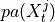 are the causal parents drawn randomly such that in total
are
randomly frawn from the noise parameters (see below), 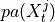 are the causal parents drawn randomly such that in total Llinks occur out of whichcontemp_fractionare contemporaneous and their time lags are drawn from[0 or 1..max_lag], the coefficients 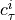 are drawn fromdependency_coeffs, are drawn from
are drawn from auto_coeffs, and are drawn from
are drawn from dependency_funcs.The returned dictionary links has the format
{0:[((i, -tau), coeff, func),...], 1:[...], ...}wherefunccan be an arbitrary (nonlinear) function provided as a python callable with one argument and coeff is the multiplication factor. The noise distributions of are returned in
are returned in
noises, see specifics below.The process might be non-stationary. In case of asymptotically linear dependency functions and no contemporaneous links this can be checked with
check_stationarity(...). Otherwise check by generating a large sample and test for np.inf.- Parameters:
N (int) – Number of variables.
L (int) – Number of cross-links between two different variables.
dependency_funcs (list) – List of callables or strings ‘linear’ or ‘nonlinear’ for a linear and a specific nonlinear function that is asymptotically linear.
dependency_coeffs (list) – List of floats from which the coupling coefficients are randomly drawn.
auto_coeffs (list) – List of floats from which the lag-1 autodependencies are randomly drawn.
contemp_fraction (float [0., 1]) – Fraction of the L links that are contemporaneous (lag zero).
max_lag (int) – Maximum lag from which the time lags of links are drawn.
noise_dists (list) – List of noise functions. Either in {‘gaussian’, ‘weibull’, ‘uniform’} or user-specified, in which case it must be parametrized just by the size parameter. E.g. def beta (T): return np.random.beta(a=1, b=0.5, T)
noise_means (list) – Noise mean. Only used for noise in {‘gaussian’, ‘weibull’, ‘uniform’}.
noise_sigmas (list) – Noise standard deviation. Only used for noise in {‘gaussian’, ‘weibull’, ‘uniform’}.
seed (int) – Random seed to draw the above random functions from.
noise_seed (int) – Random seed for noise function random generator.
- Returns:
links (dict) – Dictionary of form {0:[((0, -1), coeff, func), …], 1:[…], …}.
noises (list) – List of N noise functions to call by noise(T) where T is the time series length.
- tigramite.toymodels.structural_causal_processes.links_to_graph(links, tau_max=None)[source]¶
Helper function to convert dictionary of links to graph array format.
- Parameters:
links (dict) – Dictionary of form {0:[((0, -1), coeff, func), …], 1:[…], …}. Also format {0:[(0, -1), …], 1:[…], …} is allowed.
tau_max (int or None) – Maximum lag. If None, the maximum lag in links is used.
- Returns:
graph – Matrix format of graph with 1 for true links and 0 else.
- Return type:
array of shape (N, N, tau_max+1)
- tigramite.toymodels.structural_causal_processes.structural_causal_process(links, T, noises=None, intervention=None, intervention_type='hard', transient_fraction=0.2, seed=None)[source]¶
Returns a time series generated from a structural causal process.
Allows lagged and contemporaneous dependencies and includes the option to have intervened variables or particular samples.
The interventional data is in particular useful for generating ground truth for the CausalEffects class.
In more detail, the method implements a generalized additive noise model process of the form

Links have the format
{0:[((i, -tau), coeff, func),...], 1:[...], ...}wherefunccan be an arbitrary (nonlinear) function provided as a python callable with one argument and coeff is the multiplication factor. The noise distributions of can be specified in
noises.Through the parameters
interventionandintervention_typethe model can also be generated with intervened variables.- Parameters:
links (dict) – Dictionary of format: {0:[((i, -tau), coeff, func),…], 1:[…], …} for all variables where i must be in [0..N-1] and tau >= 0 with number of variables N. coeff must be a float and func a python callable of one argument.
T (int) – Sample size.
noises (list of callables or array, optional (default: 'np.random.randn')) – Random distribution function that is called with noises[j](T). If an array, it must be of shape ((transient_fraction + 1)*T, N).
intervention (dict) – Dictionary of format: {1:np.array, …} containing only keys of intervened variables with the value being the array of length T with interventional values. Set values to np.nan to leave specific time points of a variable un-intervened.
intervention_type (str or dict) – Dictionary of format: {1:’hard’, 3:’soft’, …} to specify whether intervention is hard (set value) or soft (add value) for variable j. If str, all interventions have the same type.
transient_fraction (float) – Added percentage of T used as a transient. In total a realization of length (transient_fraction + 1)*T will be generated, but then transient_fraction*T will be cut off.
seed (int, optional (default: None)) – Random seed.
- Returns:
data (array-like) – Data generated from this process, shape (T, N).
nonvalid (bool) – Indicates whether data has NaNs or infinities.
- tigramite.toymodels.structural_causal_processes.structural_causal_process_ensemble(realizations=10, ensemble_seed=None, **kwargs)[source]¶
Returns an ensemble of time series generated from a structural causal process.
This adds an ensemble dimension to the output of structural_causal_process.
See docstring of structural_causal_process for details.
- Parameters:
ensemble_seed (int, optional (default: None)) – Random seed for entire ensemble.
kwargs (**) – Arguments of structural_causal_process.
- Returns:
data (array-like) – Data generated from this process, shape (M, T, N).
nonvalid (bool) – Indicates whether data has NaNs or infinities.
- tigramite.toymodels.structural_causal_processes.var_process(parents_neighbors_coeffs, T=1000, use='inv_inno_cov', verbosity=0, initial_values=None)[source]¶
Returns a vector-autoregressive process with correlated innovations.
Wrapper around var_network with possibly more user-friendly input options.
- Parameters:
parents_neighbors_coeffs (dict) – Dictionary of format: {…, j:[((var1, lag1), coef1), ((var2, lag2), coef2), …], …} for all variables where vars must be in [0..N-1] and lags <= 0 with number of variables N. If lag=0, a nonzero value in the covariance matrix (or its inverse) is implied. These should be the same for (i, j) and (j, i).
use (str, optional (default: 'inv_inno_cov')) – Specifier, either ‘inno_cov’ or ‘inv_inno_cov’. Any other specifier will result in non-correlated noise. For debugging, ‘no_noise’ can also be specified, in which case random noise will be disabled.
T (int, optional (default: 1000)) – Sample size.
verbosity (int, optional (default: 0)) – Level of verbosity.
initial_values (array, optional (default: None)) – Initial values for each node. Shape must be (N, max_delay+1)
- Returns:
data (array-like) – Data generated from this process
true_parent_neighbor (dict) – Dictionary of lists of tuples. The dictionary is keyed by node ID, the list stores the tuple values (parent_node_id, time_lag)
tigramite.plotting: Plotting functions¶
Tigramite plotting package.
- tigramite.plotting.plot_densityplots(dataframe, name=None, setup_args={}, add_densityplot_args={}, selected_dataset=0, show_marginal_densities_on_diagonal=True)[source]¶
Wrapper helper function to plot density plots. Sets up the matrix object and plots the density plots, see parameters in setup_density_matrix and add_densityplot.
The diagonal shows the marginal densities.
Requires seaborn.
- Parameters:
dataframe (data object) – Tigramite dataframe object. It must have the attributes dataframe.values yielding a numpy array of shape (observations T, variables N) and optionally a mask of the same shape and a missing values flag.
name (str, optional (default: None)) – File name. If None, figure is shown in window.
setup_args (dict) – Arguments for setting up the density plot matrix, see doc of setup_density_matrix.
add_densityplot_args (dict) – Arguments for adding a density plot matrix.
selected_dataset (int, optional (default: 0)) – In case of multiple datasets in dataframe, plot this one.
show_marginal_densities_on_diagonal (bool, optional (default: True)) – Flag to show marginal densities on the diagonal of the density plots
- Returns:
matrix – Further density plots can be overlaid using the matrix.add_densityplot function.
- Return type:
object
- tigramite.plotting.plot_graph(graph, val_matrix=None, var_names=None, fig_ax=None, figsize=None, save_name=None, link_colorbar_label='MCI', node_colorbar_label='auto-MCI', link_width=None, link_attribute=None, node_pos=None, arrow_linewidth=8.0, vmin_edges=- 1, vmax_edges=1.0, edge_ticks=0.4, cmap_edges='RdBu_r', vmin_nodes=- 1, vmax_nodes=1.0, node_ticks=0.4, cmap_nodes='RdBu_r', node_size=0.3, node_aspect=None, arrowhead_size=20, curved_radius=0.2, label_fontsize=10, tick_label_size=6, alpha=1.0, node_label_size=10, link_label_fontsize=10, lag_array=None, show_colorbar=True, inner_edge_style='dashed', link_matrix=None, special_nodes=None, show_autodependency_lags=False)[source]¶
Creates a network plot.
This is still in beta. The network is defined from links in graph. Nodes denote variables, straight links contemporaneous dependencies and curved arrows lagged dependencies. The node color denotes the maximal absolute auto-dependency and the link color the value at the lag with maximal absolute cross-dependency. The link label lists the lags with significant dependency in order of absolute magnitude. The network can also be plotted over a map drawn before on the same axis. Then the node positions can be supplied in appropriate axis coordinates via node_pos.
- Parameters:
graph (string or bool array-like, optional (default: None)) – Either string matrix providing graph or bool array providing only adjacencies Must be of same shape as val_matrix.
val_matrix (array_like) – Matrix of shape (N, N, tau_max+1) containing test statistic values.
var_names (list, optional (default: None)) – List of variable names. If None, range(N) is used.
fig_ax (tuple of figure and axis object, optional (default: None)) – Figure and axes instance. If None they are created.
figsize (tuple) – Size of figure.
save_name (str, optional (default: None)) – Name of figure file to save figure. If None, figure is shown in window.
link_colorbar_label (str, optional (default: 'MCI')) – Test statistic label.
node_colorbar_label (str, optional (default: 'auto-MCI')) – Test statistic label for auto-dependencies.
link_width (array-like, optional (default: None)) – Array of val_matrix.shape specifying relative link width with maximum given by arrow_linewidth. If None, all links have same width.
link_attribute (array-like, optional (default: None)) – String array of val_matrix.shape specifying link attributes.
node_pos (dictionary, optional (default: None)) – Dictionary of node positions in axis coordinates of form node_pos = {‘x’:array of shape (N,), ‘y’:array of shape(N)}. These coordinates could have been transformed before for basemap plots. You can also add a key ‘transform’:ccrs.PlateCarree() in order to plot graphs on a map using cartopy.
arrow_linewidth (float, optional (default: 30)) – Linewidth.
vmin_edges (float, optional (default: -1)) – Link colorbar scale lower bound.
vmax_edges (float, optional (default: 1)) – Link colorbar scale upper bound.
edge_ticks (float, optional (default: 0.4)) – Link tick mark interval.
cmap_edges (str, optional (default: 'RdBu_r')) – Colormap for links.
vmin_nodes (float, optional (default: 0)) – Node colorbar scale lower bound.
vmax_nodes (float, optional (default: 1)) – Node colorbar scale upper bound.
node_ticks (float, optional (default: 0.4)) – Node tick mark interval.
cmap_nodes (str, optional (default: 'OrRd')) – Colormap for links.
node_size (int, optional (default: 0.3)) – Node size.
node_aspect (float, optional (default: None)) – Ratio between the heigth and width of the varible nodes.
arrowhead_size (int, optional (default: 20)) – Size of link arrow head. Passed on to FancyArrowPatch object.
curved_radius (0.2)) – Curvature of links. Passed on to FancyArrowPatch object.
float (0.2)) – Curvature of links. Passed on to FancyArrowPatch object.
(default (optional) – Curvature of links. Passed on to FancyArrowPatch object.
label_fontsize (int, optional (default: 10)) – Fontsize of colorbar labels.
alpha (float, optional (default: 1.)) – Opacity.
node_label_size (int, optional (default: 10)) – Fontsize of node labels.
link_label_fontsize (int, optional (default: 6)) – Fontsize of link labels.
tick_label_size (int, optional (default: 6)) – Fontsize of tick labels.
lag_array (array, optional (default: None)) – Optional specification of lags overwriting np.arange(0, tau_max+1)
show_colorbar (bool) – Whether to show colorbars for links and nodes.
show_autodependency_lags (bool (default: False)) – Shows significant autodependencies for a node.
- tigramite.plotting.plot_lagfuncs(val_matrix, name=None, setup_args={}, add_lagfunc_args={})[source]¶
Wrapper helper function to plot lag functions. Sets up the matrix object and plots the lagfunction, see parameters in setup_matrix and add_lagfuncs.
- Parameters:
val_matrix (array_like) – Matrix of shape (N, N, tau_max+1) containing test statistic values.
name (str, optional (default: None)) – File name. If None, figure is shown in window.
setup_args (dict) – Arguments for setting up the lag function matrix, see doc of setup_matrix.
add_lagfunc_args (dict) – Arguments for adding a lag function matrix, see doc of add_lagfuncs.
- Returns:
matrix – Further lag functions can be overlaid using the matrix.add_lagfuncs(val_matrix) function.
- Return type:
object
- tigramite.plotting.plot_mediation_graph(path_val_matrix, path_node_array=None, var_names=None, fig_ax=None, figsize=None, save_name=None, link_colorbar_label='link coeff. (edge color)', node_colorbar_label='MCE (node color)', link_width=None, node_pos=None, arrow_linewidth=10.0, vmin_edges=- 1, vmax_edges=1.0, edge_ticks=0.4, cmap_edges='RdBu_r', vmin_nodes=- 1.0, vmax_nodes=1.0, node_ticks=0.4, cmap_nodes='RdBu_r', node_size=0.3, node_aspect=None, arrowhead_size=20, curved_radius=0.2, label_fontsize=10, tick_label_size=6, lag_array=None, alpha=1.0, node_label_size=10, link_label_fontsize=10, standard_color_links='black', standard_color_nodes='lightgrey')[source]¶
Creates a network plot visualizing the pathways of a mediation analysis. This is still in beta. The network is defined from non-zero entries in
path_val_matrix. Nodes denote variables, straight links contemporaneous dependencies and curved arrows lagged dependencies. The node color denotes the mediated causal effect (MCE) and the link color the value at the lag with maximal link coefficient. The link label lists the lags with significant dependency in order of absolute magnitude. The network can also be plotted over a map drawn before on the same axis. Then the node positions can be supplied in appropriate axis coordinates via node_pos.- Parameters:
path_val_matrix (array_like) – Matrix of shape (N, N, tau_max+1) containing link weight values.
path_node_array (array_like) – Array of shape (N,) containing node values.
var_names (list, optional (default: None)) – List of variable names. If None, range(N) is used.
fig_ax (tuple of figure and axis object, optional (default: None)) – Figure and axes instance. If None they are created.
figsize (tuple) – Size of figure.
save_name (str, optional (default: None)) – Name of figure file to save figure. If None, figure is shown in window.
link_colorbar_label (str, optional (default: 'link coeff. (edge color)')) – Link colorbar label.
node_colorbar_label (str, optional (default: 'MCE (node color)')) – Node colorbar label.
link_width (array-like, optional (default: None)) – Array of val_matrix.shape specifying relative link width with maximum given by arrow_linewidth. If None, all links have same width.
node_pos (dictionary, optional (default: None)) – Dictionary of node positions in axis coordinates of form node_pos = {‘x’:array of shape (N,), ‘y’:array of shape(N)}. These coordinates could have been transformed before for basemap plots. You can also add a key ‘transform’:ccrs.PlateCarree() in order to plot graphs on a map using cartopy.
arrow_linewidth (float, optional (default: 30)) – Linewidth.
vmin_edges (float, optional (default: -1)) – Link colorbar scale lower bound.
vmax_edges (float, optional (default: 1)) – Link colorbar scale upper bound.
edge_ticks (float, optional (default: 0.4)) – Link tick mark interval.
cmap_edges (str, optional (default: 'RdBu_r')) – Colormap for links.
vmin_nodes (float, optional (default: 0)) – Node colorbar scale lower bound.
vmax_nodes (float, optional (default: 1)) – Node colorbar scale upper bound.
node_ticks (float, optional (default: 0.4)) – Node tick mark interval.
cmap_nodes (str, optional (default: 'OrRd')) – Colormap for links.
node_size (int, optional (default: 0.3)) – Node size.
node_aspect (float, optional (default: None)) – Ratio between the heigth and width of the varible nodes.
arrowhead_size (int, optional (default: 20)) – Size of link arrow head. Passed on to FancyArrowPatch object.
curved_radius (0.2)) – Curvature of links. Passed on to FancyArrowPatch object.
float (0.2)) – Curvature of links. Passed on to FancyArrowPatch object.
(default (optional) – Curvature of links. Passed on to FancyArrowPatch object.
label_fontsize (int, optional (default: 10)) – Fontsize of colorbar labels.
alpha (float, optional (default: 1.)) – Opacity.
node_label_size (int, optional (default: 10)) – Fontsize of node labels.
link_label_fontsize (int, optional (default: 6)) – Fontsize of link labels.
lag_array (array, optional (default: None)) – Optional specification of lags overwriting np.arange(0, tau_max+1)
- tigramite.plotting.plot_mediation_time_series_graph(path_node_array, tsg_path_val_matrix, var_names=None, fig_ax=None, figsize=None, link_colorbar_label='link coeff. (edge color)', node_colorbar_label='MCE (node color)', save_name=None, link_width=None, arrow_linewidth=8, vmin_edges=- 1, vmax_edges=1.0, edge_ticks=0.4, cmap_edges='RdBu_r', order=None, vmin_nodes=- 1.0, vmax_nodes=1.0, node_ticks=0.4, cmap_nodes='RdBu_r', node_size=0.1, node_aspect=None, arrowhead_size=20, curved_radius=0.2, label_fontsize=12, alpha=1.0, node_label_size=12, tick_label_size=6, standard_color_links='black', standard_color_nodes='lightgrey')[source]¶
Creates a mediation time series graph plot. This is still in beta. The time series graph’s links are colored by val_matrix.
- Parameters:
tsg_path_val_matrix (array_like) – Matrix of shape (N*tau_max, N*tau_max) containing link weight values.
path_node_array (array_like) – Array of shape (N,) containing node values.
var_names (list, optional (default: None)) – List of variable names. If None, range(N) is used.
fig_ax (tuple of figure and axis object, optional (default: None)) – Figure and axes instance. If None they are created.
figsize (tuple) – Size of figure.
save_name (str, optional (default: None)) – Name of figure file to save figure. If None, figure is shown in window.
link_colorbar_label (str, optional (default: 'link coeff. (edge color)')) – Link colorbar label.
node_colorbar_label (str, optional (default: 'MCE (node color)')) – Node colorbar label.
link_width (array-like, optional (default: None)) – Array of val_matrix.shape specifying relative link width with maximum given by arrow_linewidth. If None, all links have same width.
order (list, optional (default: None)) – order of variables from top to bottom.
arrow_linewidth (float, optional (default: 30)) – Linewidth.
vmin_edges (float, optional (default: -1)) – Link colorbar scale lower bound.
vmax_edges (float, optional (default: 1)) – Link colorbar scale upper bound.
edge_ticks (float, optional (default: 0.4)) – Link tick mark interval.
cmap_edges (str, optional (default: 'RdBu_r')) – Colormap for links.
vmin_nodes (float, optional (default: 0)) – Node colorbar scale lower bound.
vmax_nodes (float, optional (default: 1)) – Node colorbar scale upper bound.
node_ticks (float, optional (default: 0.4)) – Node tick mark interval.
cmap_nodes (str, optional (default: 'OrRd')) – Colormap for links.
node_size (int, optional (default: 0.1)) – Node size.
node_aspect (float, optional (default: None)) – Ratio between the heigth and width of the varible nodes.
arrowhead_size (int, optional (default: 20)) – Size of link arrow head. Passed on to FancyArrowPatch object.
curved_radius (0.2)) – Curvature of links. Passed on to FancyArrowPatch object.
float (0.2)) – Curvature of links. Passed on to FancyArrowPatch object.
(default (optional) – Curvature of links. Passed on to FancyArrowPatch object.
label_fontsize (int, optional (default: 10)) – Fontsize of colorbar labels.
alpha (float, optional (default: 1.)) – Opacity.
node_label_size (int, optional (default: 10)) – Fontsize of node labels.
link_label_fontsize (int, optional (default: 6)) – Fontsize of link labels.
- tigramite.plotting.plot_scatterplots(dataframe, name=None, setup_args={}, add_scatterplot_args={}, selected_dataset=0)[source]¶
Wrapper helper function to plot scatter plots. Sets up the matrix object and plots the scatter plots, see parameters in setup_scatter_matrix and add_scatterplot.
- Parameters:
dataframe (data object) – Tigramite dataframe object. It must have the attributes dataframe.values yielding a numpy array of shape (observations T, variables N) and optionally a mask of the same shape and a missing values flag.
name (str, optional (default: None)) – File name. If None, figure is shown in window.
setup_args (dict) – Arguments for setting up the scatter plot matrix, see doc of setup_scatter_matrix.
add_scatterplot_args (dict) – Arguments for adding a scatter plot matrix.
selected_dataset (int, optional (default: 0)) – In case of multiple datasets in dataframe, plot this one.
- Returns:
matrix – Further scatter plot can be overlaid using the matrix.add_scatterplot function.
- Return type:
object
- tigramite.plotting.plot_time_series_graph(graph, val_matrix=None, var_names=None, fig_ax=None, figsize=None, link_colorbar_label='MCI', save_name=None, link_width=None, link_attribute=None, arrow_linewidth=4, vmin_edges=- 1, vmax_edges=1.0, edge_ticks=0.4, cmap_edges='RdBu_r', order=None, node_size=0.1, node_aspect=None, arrowhead_size=20, curved_radius=0.2, label_fontsize=10, tick_label_size=6, alpha=1.0, inner_edge_style='dashed', link_matrix=None, special_nodes=None, node_classification=None, standard_color_links='black', standard_color_nodes='lightgrey')[source]¶
Creates a time series graph. This is still in beta. The time series graph’s links are colored by val_matrix.
- Parameters:
graph (string or bool array-like, optional (default: None)) – Either string matrix providing graph or bool array providing only adjacencies Either of shape (N, N, tau_max + 1) or as auxiliary graph of dims (N, N, tau_max+1, tau_max+1) describing auxADMG.
val_matrix (array_like) – Matrix of same shape as graph containing test statistic values.
var_names (list, optional (default: None)) – List of variable names. If None, range(N) is used.
fig_ax (tuple of figure and axis object, optional (default: None)) – Figure and axes instance. If None they are created.
figsize (tuple) – Size of figure.
save_name (str, optional (default: None)) – Name of figure file to save figure. If None, figure is shown in window.
link_colorbar_label (str, optional (default: 'MCI')) – Test statistic label.
link_width (array-like, optional (default: None)) – Array of val_matrix.shape specifying relative link width with maximum given by arrow_linewidth. If None, all links have same width.
link_attribute (array-like, optional (default: None)) – Array of graph.shape specifying specific in drawing the graph (for internal use).
order (list, optional (default: None)) – order of variables from top to bottom.
arrow_linewidth (float, optional (default: 30)) – Linewidth.
vmin_edges (float, optional (default: -1)) – Link colorbar scale lower bound.
vmax_edges (float, optional (default: 1)) – Link colorbar scale upper bound.
edge_ticks (float, optional (default: 0.4)) – Link tick mark interval.
cmap_edges (str, optional (default: 'RdBu_r')) – Colormap for links.
node_size (int, optional (default: 0.1)) – Node size.
node_aspect (float, optional (default: None)) – Ratio between the heigth and width of the varible nodes.
arrowhead_size (int, optional (default: 20)) – Size of link arrow head. Passed on to FancyArrowPatch object.
curved_radius (0.2)) – Curvature of links. Passed on to FancyArrowPatch object.
float (0.2)) – Curvature of links. Passed on to FancyArrowPatch object.
(default (optional) – Curvature of links. Passed on to FancyArrowPatch object.
label_fontsize (int, optional (default: 10)) – Fontsize of colorbar labels.
alpha (float, optional (default: 1.)) – Opacity.
node_label_size (int, optional (default: 10)) – Fontsize of node labels.
link_label_fontsize (int, optional (default: 6)) – Fontsize of link labels.
tick_label_size (int, optional (default: 6)) – Fontsize of tick labels.
inner_edge_style (string, optional (default: 'dashed')) – Style of inner_edge contemporaneous links.
special_nodes (dict) – Dictionary of format {(i, -tau): ‘blue’, …} to color special nodes.
node_classification (dict or None (default: None)) – Dictionary of format {i: ‘space_context’, …} to classify nodes into system, context, or dummy nodes. Keys of the dictionary are from {0, …, N-1} where N is the number of nodes. Options for the values are “system”, “time_context”, “space_context”, “time_dummy”, or “space_dummy”. Space_contexts and dummy nodes need to be represented as a single node in the time series graph. In case no value is supplied all nodes are treated as system nodes, i.e. are plotted in a time-resolved manner.
- tigramite.plotting.plot_timeseries(dataframe=None, save_name=None, fig_axes=None, figsize=None, var_units=None, time_label='', grey_masked_samples=False, show_meanline=False, data_linewidth=1.0, skip_ticks_data_x=1, skip_ticks_data_y=1, label_fontsize=10, color='black', alpha=1.0, tick_label_size=6, selected_dataset=0, adjust_plot=True, selected_variables=None)[source]¶
Create and save figure of stacked panels with time series.
- Parameters:
dataframe (data object, optional) – This is the Tigramite dataframe object. It has the attributes dataframe.values yielding a np array of shape (observations T, variables N) and optionally a mask of the same shape.
save_name (str, optional (default: None)) – Name of figure file to save figure. If None, figure is shown in window.
fig_axes (subplots instance, optional (default: None)) – Figure and axes instance. If None they are created as fig, axes = pyplot.subplots(N,…)
figsize (tuple of floats, optional (default: None)) – Figure size if new figure is created. If None, default pyplot figsize is used.
var_units (list of str, optional (default: None)) – Units of variables.
time_label (str, optional (default: '')) – Label of time axis.
grey_masked_samples (bool, optional (default: False)) – Whether to mark masked samples by grey fills (‘fill’) or grey data (‘data’).
show_meanline (bool, optional (default: False)) – Whether to plot a horizontal line at the mean.
data_linewidth (float, optional (default: 1.)) – Linewidth.
skip_ticks_data_x (int, optional (default: 1)) – Skip every other tickmark.
skip_ticks_data_y (int, optional (default: 2)) – Skip every other tickmark.
label_fontsize (int, optional (default: 10)) – Fontsize of variable labels.
tick_label_size (int, optional (default: 6)) – Fontsize of tick labels.
color (str, optional (default: black)) – Line color.
alpha (float) – Alpha opacity.
selected_dataset (int, optional (default: 0)) – In case of multiple datasets in dataframe, plot this one.
selected_variables (list, optional (default: None)) – List of variables which to plot.
- tigramite.plotting.plot_tsg(links, X, Y, Z=None, anc_x=None, anc_y=None, anc_xy=None)[source]¶
Plots TSG that is input in format (N*max_lag, N*max_lag). Compared to the tigramite plotting function here links X^i_{t-tau} –> X^j_t can be missing for different t’. Helpful to visualize the conditioned TSG.
- class tigramite.plotting.setup_density_matrix(N, var_names=None, figsize=None, label_space_left=0.15, label_space_top=0.05, label_rotation_left=0, legend_width=0.15, legend_fontsize=10, tick_label_size=6, plot_gridlines=False, label_fontsize=10)[source]¶
Create matrix of density plot panels. Class to setup figure object. The function add_densityplot allows to plot density plots of variables in the dataframe.
Further density plots can be overlaid using the matrix.add_densityplot function.
- Parameters:
N (int) – Number of variables
var_names (list, optional (default: None)) – List of variable names. If None, range(N) is used.
figsize (tuple of floats, optional (default: None)) – Figure size if new figure is created. If None, default pyplot figsize is used.
label_space_left (float, optional (default: 0.1)) – Fraction of horizontal figure space to allocate left of plot for labels.
label_space_top (float, optional (default: 0.05)) – Fraction of vertical figure space to allocate top of plot for labels.
label_rotation_left (float, optional (default: 0)) – Rotation of variable labels. Set to 90 for vertical labels on y-axis.
legend_width (float, optional (default: 0.15)) – Fraction of horizontal figure space to allocate right of plot for legend.
tick_label_size (int, optional (default: 6)) – Fontsize of tick labels.
plot_gridlines (bool, optional (default: False)) – Whether to show a grid.
label_fontsize (int, optional (default: 10)) – Fontsize of variable labels.
- add_densityplot(dataframe, matrix_lags=None, label=None, label_color='black', snskdeplot_args={'cmap': 'Greys'}, snskdeplot_diagonal_args={}, selected_dataset=0, show_marginal_densities_on_diagonal=True)[source]¶
Add density function plot.
- Parameters:
dataframe (data object) – Tigramite dataframe object. It must have the attributes dataframe.values yielding a numpy array of shape (observations T, variables N) and optionally a mask of the same shape and a missing values flag.
matrix_lags (array) – Lags to use in scatter plots. Either None or non-neg array of shape (N, N). Then the entry matrix_lags[i, j] = tau will depict the scatter plot of time series (i, -tau) vs (j, 0). If None, tau = 0 for i != j and for i = j tau = 1.
snskdeplot_args (dict) – Optional parameters to pass to sns.kdeplot() for i != j for off-diagonal plots.
snskdeplot_diagonal_args (dict) – Optional parameters to pass to sns.kdeplot() for i == j on diagonal.
label (string) – Label of this plot.
label_color (string) – Color of line created just for legend.
selected_dataset (int, optional (default: 0)) – In case of multiple datasets in dataframe, plot this one.
show_marginal_densities_on_diagonal (bool, optional (default: True)) – Flag to show marginal densities on the diagonal of the density plots
- class tigramite.plotting.setup_matrix(N, tau_max, var_names=None, figsize=None, minimum=- 1, maximum=1, label_space_left=0.1, label_space_top=0.05, label_rotation_left=0, legend_width=0.15, legend_fontsize=10, x_base=1.0, y_base=0.5, tick_label_size=6, plot_gridlines=False, lag_units='', lag_array=None, label_fontsize=10)[source]¶
Create matrix of lag function panels. Class to setup figure object. The function add_lagfuncs(…) allows to plot the val_matrix of shape (N, N, tau_max+1). Multiple lagfunctions can be overlaid for comparison.
- Parameters:
N (int) – Number of variables
tau_max (int) – Maximum time lag.
var_names (list, optional (default: None)) – List of variable names. If None, range(N) is used.
figsize (tuple of floats, optional (default: None)) – Figure size if new figure is created. If None, default pyplot figsize is used.
minimum (float, optional (default: -1.)) – Lower y-axis limit.
maximum (float, optional (default: 1.)) – Upper y-axis limit.
label_space_left (float, optional (default: 0.1)) – Fraction of horizontal figure space to allocate left of plot for labels.
label_space_top (float, optional (default: 0.05)) – Fraction of vertical figure space to allocate top of plot for labels.
label_rotation_left (float, optional (default: 0)) – Rotation of variable labels. Set to 90 for vertical labels on y-axis.
legend_width (float, optional (default: 0.15)) – Fraction of horizontal figure space to allocate right of plot for legend.
tick_label_size (int, optional (default: 6)) – Fontsize of tick labels.
x_base (float, optional (default: 1.)) – x-tick intervals to show.
y_base (float, optional (default: .4)) – y-tick intervals to show.
plot_gridlines (bool, optional (default: False)) – Whether to show a grid.
lag_units (str, optional (default: '')) –
lag_array (array, optional (default: None)) – Optional specification of lags overwriting np.arange(0, tau_max+1)
label_fontsize (int, optional (default: 10)) – Fontsize of variable labels.
- add_lagfuncs(val_matrix, sig_thres=None, conf_matrix=None, color='black', label=None, two_sided_thres=True, marker='.', markersize=5, alpha=1.0)[source]¶
Add lag function plot from val_matrix array.
- Parameters:
val_matrix (array_like) – Matrix of shape (N, N, tau_max+1) containing test statistic values.
sig_thres (array-like, optional (default: None)) – Matrix of significance thresholds. Must be of same shape as val_matrix.
conf_matrix (array-like, optional (default: None)) – Matrix of shape (, N, tau_max+1, 2) containing confidence bounds.
color (str, optional (default: 'black')) – Line color.
label (str) – Test statistic label.
two_sided_thres (bool, optional (default: True)) – Whether to draw sig_thres for pos. and neg. values.
marker (matplotlib marker symbol, optional (default: '.')) – Marker.
markersize (int, optional (default: 5)) – Marker size.
alpha (float, optional (default: 1.)) – Opacity.
- class tigramite.plotting.setup_scatter_matrix(N, var_names=None, figsize=None, label_space_left=0.1, label_space_top=0.05, label_rotation_left=0, legend_width=0.15, legend_fontsize=10, plot_gridlines=False, tick_label_size=6, label_fontsize=10)[source]¶
Create matrix of scatter plot panels. Class to setup figure object. The function add_scatterplot allows to plot scatterplots of variables in the dataframe. Multiple scatter plots can be overlaid for comparison.
- Parameters:
N (int) – Number of variables
var_names (list, optional (default: None)) – List of variable names. If None, range(N) is used.
figsize (tuple of floats, optional (default: None)) – Figure size if new figure is created. If None, default pyplot figsize is used.
label_space_left (float, optional (default: 0.1)) – Fraction of horizontal figure space to allocate left of plot for labels.
label_space_top (float, optional (default: 0.05)) – Fraction of vertical figure space to allocate top of plot for labels.
label_rotation_left (float, optional (default: 0)) – Rotation of variable labels. Set to 90 for vertical labels on y-axis.
legend_width (float, optional (default: 0.15)) – Fraction of horizontal figure space to allocate right of plot for legend.
tick_label_size (int, optional (default: 6)) – Fontsize of tick labels.
plot_gridlines (bool, optional (default: False)) – Whether to show a grid.
label_fontsize (int, optional (default: 10)) – Fontsize of variable labels.
- add_scatterplot(dataframe, matrix_lags=None, color='black', label=None, marker='.', markersize=5, alpha=0.2, selected_dataset=0)[source]¶
Add scatter plot.
- Parameters:
dataframe (data object) – Tigramite dataframe object. It must have the attributes dataframe.values yielding a numpy array of shape (observations T, variables N) and optionally a mask of the same shape and a missing values flag.
matrix_lags (array) – Lags to use in scatter plots. Either None or of shape (N, N). Then the entry matrix_lags[i, j] = tau will depict the scatter plot of time series (i, -tau) vs (j, 0). If None, tau = 0 for i != j and for i = j tau = 1.
color (str, optional (default: 'black')) – Line color.
label (str) – Test statistic label.
marker (matplotlib marker symbol, optional (default: '.')) – Marker.
markersize (int, optional (default: 5)) – Marker size.
alpha (float, optional (default: 1.)) – Opacity.
selected_dataset (int, optional (default: 0)) – In case of multiple datasets in dataframe, plot this one.
- tigramite.plotting.write_csv(graph, save_name, val_matrix=None, var_names=None, link_width=None, link_attribute=None, digits=5)[source]¶
Writes all links in a graph to a csv file.
Format is each link in a row as ‘Variable i’, ‘Variable j’, ‘Time lag of i’, ‘Link type i — j’, with optional further columns for entries in [val_matrix link_attribute, link_width].
- Parameters:
graph (string or bool array-like, optional (default: None)) – Either string matrix providing graph or bool array providing only adjacencies Must be of same shape as val_matrix.
save_name (str) – Name of figure file to save figure. If None, figure is shown in window.
val_matrix (array_like) – Matrix of shape (N, N, tau_max+1) containing test statistic values.
var_names (list, optional (default: None)) – List of variable names. If None, range(N) is used.
link_width (array-like, optional (default: None)) – Array of val_matrix.shape specifying relative link width with maximum given by arrow_linewidth. If None, all links have same width.
link_attribute (array-like, optional (default: None)) – String array of val_matrix.shape specifying link attributes.
digits (int) – Number of significant digits for writing link value and width.